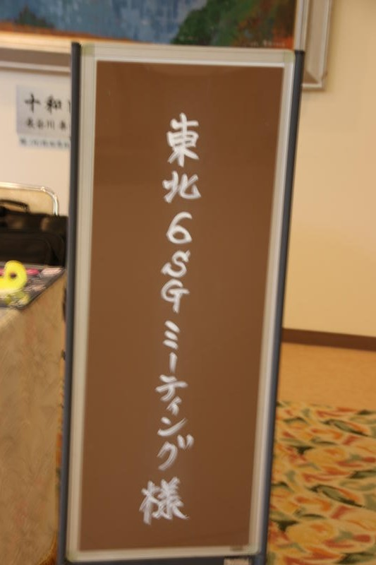
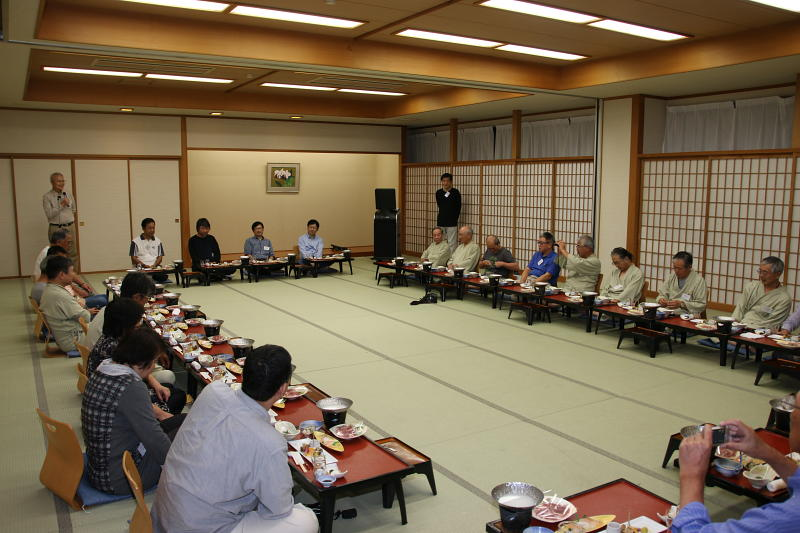
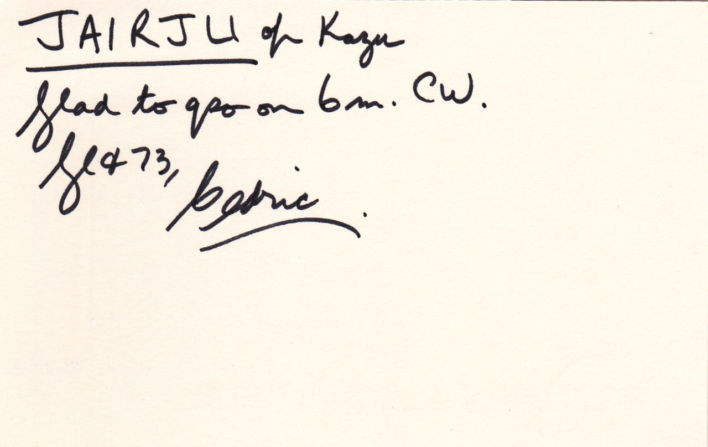
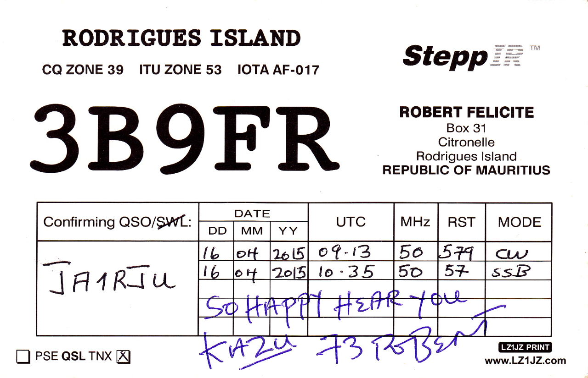
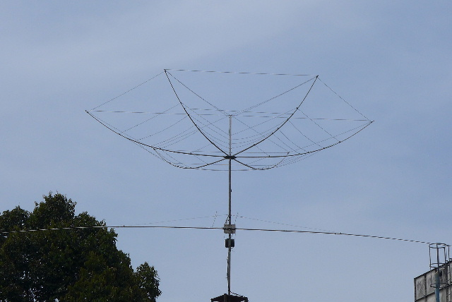

2015/Jan-Dec・総集編
サイクル24もいよいよ終盤。前サイクルに経験したロングパスの伝搬は
僅かに西日本を中心に見られた程度で東日本ではほとんどオープンも無く
2015年は期待を裏切るコンデションで終わってしまった。2016年は？？
[Back Issues 2015] TIME:UTC(JST-09:00) Report from JA1RJU(PM95sq) 31.Dec.2015(15:00b) Report from JA1RJU(PM95sq) 30.Dec.2015(15:00b) Report from JA1RJU(PM95sq) 29.Dec.2015(15:00b) Report from JA1RJU(PM95sq) 28.Dec.2015(15:00b) Report from JA1RJU(PM95sq) 27.Dec.2015(15:00b) Report from JA1RJU(PM95sq) 26.Dec.2015(15:00b) Report from JA1RJU(PM95sq) 25.Dec.2015(15:00b) Report from JA1RJU(PM95sq) 24.Dec.2015(15:00b) Report from JA1RJU(PM95sq) 23.Dec.2015(15:00b) Report from JA1RJU(PM95sq) 22.Dec.2015(15:00b) Report from JA1RJU(PM95sq) 21.Dec.2015(15:00c) (AB3CV 07:05 50.187 WSJT JT65a (EME QSO -28dB JR6EXN)
|
◎
突然、HF帯にQRVを始めた北朝鮮のP5/3Z9DXは、世界中から大パイルアップを受けている。 今のところ10m(28.460MHz)-15m(21.220MHz)-20m(14.200MHz)などでアクティブにQRVしていて多くのJA'sがQSOしているが、 21日の午後(07:30z頃)に28.460MHzでQRVしていた信号は、JA1(PM95)ではスキップしていて聞こえなかった。 KG6DX、UT7QF、VR2XMT...などの6mでお馴染みの局がQSOしている信号は59+で入感していた。 P5/3Z9DXにパイルアップしているUA0、BV、BY、XX9など近隣の局に混じってヨーロッパからもUA6やSV、Iなどが強力に入感していて、 この時期のハイバンドの28MHzはまだ十分に楽しめそう。 "北朝鮮"の6mでの初入感は、2002年5月26日にQRVしたP5/4L4FNが初QSOとして記録されているが、今回のP5/3Z9DXの6mのQRVの見込みは無い？。 6mのコンデションは、先週初めに入感したVK3.5.6.7.8などの3日間のオープン以来、静かになってしまった。 |
Report from JA1RJU(PM95sq)
20.Dec.2015(15:00c)
DU1EV/B 08:55 50.008 CW Beacon
Report from JA1RJU(PM95sq)
19.Dec.2015(15:00b)
Report from JA1RJU(PM95sq)
18.Dec.2015(15:00b)
Report from JA1RJU(PM95sq)
17.Dec.2015(15:00b)
Report from JA1RJU(PM95sq)
16.Dec.2015(15:00b)
Report from JA1RJU(PM95sq)
15.Dec.2015(15:00d)
VK7DX 05:05 50.110 SSB
VK3II 05:08 50.125 SSB
VK7DX 05:10 50.110 SSB CQ
VK3MH 05:13 50.125 SSB
VK3AMK 05:26 50.102 CW CQ
V73SIX/B 06:15- 50.0117 CW Beacon
Report from JA1RJU(PM95sq)
14.Dec.2015(15:00d)
VK7XX 04:59 50.110 SSB into QM05
VK2BXT 05:03 50.125 SSB into QM05
VK3KTO 05:06 50.125 SSB into QM05
ZL1AKW 05:07 50.110/135 SSB into JA2
VK3DUT 05:09 50.125 SSB into QM05
VK3OW 05:10 50.125 SSB into QM05
VK3NX 05:14 50.125 SSB into QM05
VK3AUU 05:15 50.125 SSB into QM05
VK4KR 05:22 50.110 SSB CQ
VK5PO 06:47 50.276.19 WSJT JT65a CQ -19dB (PF95)
VK5PO 07:11 50.276.296 WSJT JT65a CQ -22dB
VK5PO 07:17 50.276.12 WSJT @ JT65a -14dB/-17dB (QSO Pwr=10W)
Report from JA1RJU(PM95sq)
13.Dec.2015(15:00d)
VK5XDX 07:13 50.106 CW RST599
VK7CW 07:15 50.104 CW CQ
VK7CW 07:16 50.104 CW @
VK5SFA 07:19 50.110/160 SSB RST59
VK5DK 07:20 50.110/135 SSB RS59
VK5BC 07:22 50.160 SSB RS59
VK5CB 07:24 50.160 SSB
VK5SFA 07:25 50.140 SSB CQ
VK8RR 07:28 50.140 SSB @ Rich RS55/59
VK5DK 07:31 50.140 SSB @ Colin RS59 QF02
VK3XQ 07:34 50.140 SSB Rob RS57/59
VK5BC 07:35 50.110 SSB CQ
VK5SFA 07:36 50.130 SSB
VK7DX 07:37 50.180 SSB RS59 QSO with VK2
VK5BC 07:39 50.155 SSB CQ
VK5BC 07:40 50.160 SSB @ Brian RS59
VK7DX 07:47 50.180 SSB
VK5PO 07:47 50.100 CW CQ
FK8SIX/b 07:49 50.080 CW Beacon weak (VK's F.Out 07:50)
Report from JA1RJU(PM95sq)
12.Dec.2015(15:00b)
Report from JA1RJU(PM95sq)
11.Dec.2015(15:00b)
Report from JA1RJU(PM95sq)
10.Dec.2015(15:00b)
Report from JA1RJU(PM95sq)
09.Dec.2015(15:00b)
Report from JA1RJU(PM95sq)
08.Dec.2015(15:00b)
Report from JA1RJU(PM95sq)
07.Dec.2015(15:00b)
Report from JA1RJU(PM95sq)
06.Dec.2015(15:00d)
VK3WE 05:17 50.276.+0.038 WSJT JT65a -14dB
VK3WE 05:23 50.276.+0.038 WSJT JT65a -19dB
Report from JA1RJU(PM95sq)
05.Dec.2015(15:00b)
Report from JA1RJU(PM95sq)
04.Dec.2015(15:00b)
Report from JA1RJU(PM95sq)
03.Dec.2015(15:00c)
VK4BLK 05:13 50.276.+0.231 WSJT JT65a CQ -17dB
VK4BLK 05:21 50.276.-0.272 WSJT JT65a CQ -20dB
VK4BLK 05:29 50.276.-0.275 WSJT JT65a CQ -11dB
Report from JA1RJU(PM95sq)
02.Dec.2015(15:00c)
(DF9OX 23:24 50.187 WSJT JT65a EME -23dB (JR6EXN))
Report from JA1RJU(PM95sq)
01.Dec.2015(15:00b)
[Back Issues Nov.2015]
TIME:UTC(JST-09:00)
Report from JA1RJU(PM95sq)
30.Nov.2015(15:00ｂ)
Report from JA1RJU(PM95sq)
29.Nov.2015(15:00b)
Report from JA1RJU(PM95sq)
28.Nov.2015(15:00b)
Report from JA1RJU(PM95sq)
27.Nov.2015(15:00b)
Report from JA1RJU(PM95sq)
26.Nov.2015(15:00b)
Report from JA1RJU(PM95sq)
25.Nov.2015(15:00b)
Report from JA1RJU(PM95sq)
24.Nov.2015(15:00d)
VK6KXW 03:32 50.276.366 WSJT JT65a CQ -10dB(OF87)
VK6KXW 03:36 50.276.0 WSJT @ JT65a -08dB/-10dB 20W
VK6KXW 03:42 50.276.371 WSJT JT65a CQ -02dB
Report from JA1RJU(PM95sq)
23.Nov.2015(15:00b)
Report from JA1RJU(PM95sq)
22.Nov.2015(15:00d)
T88UA 07:26 50.117 SSB
T88UA 07:33 50.117 SSB @ RS59 (OP.JA2DST QSL via JH2DFJ)
T88DF 07:35 50.117 SSB CQ RS59 (OP & QSL JH2DFJ)
T88DF 08:00 50.117 SSB CQ RS59 QSB
(SP3RNZ 14:06 50.193 WSJT JT65a EME -26dB (JR6EXN))
(GW4WND 15:17 50.192 WSJT JT65a EME -21dB (JR6EXN))
(GW4WND 15:36 50.193 WSJT JT65a EME CQ (JR6EXN))
Report from JA1RJU(PM95sq)
21.Nov.2015(15:00e)
VK6** 07:01 50.110 SSB CQ weak & QRM
VK2FA 07:04 50.110 SSB
VK7DX 07:29 50.110 SSB weak
VK3FZ 07:30 50.276.010 WSJT JT65a CQ -10dB(QF22)
VK3FZ 07:32 50.276.0 WSJT @ JT65a -07dB/-10dB 25W
VK3FZ 07:42 50.276.0 WSJT JT65a CQ -10dB
VK3FZ 08:02 50.276.0 WSJT JT65a CQ -23dB
ZL4PW 08:06 50.103 CW CQ weak
Report from JA1RJU(PM95sq)
20.Nov.2015(15:00b)
Report from JA1RJU(PM95sq)
19.Nov.2015(15:00c)
(S57RR 12:25 50.193 WSJT JT65a EME CQ -24dB (JR6EXN))
Report from JA1RJU(PM95sq)
18.Nov.2015(15:00d)
V73SIX/B 03:20- 50.011.7 CW Beacon
ZL1NX 03:50 50.110 CW CQ
ZL1NX 03:53 50.110 CW CQ
ZL3NW 03:53 50.110 CW
ZL1AKW 03:56 50.110 SSB CQ QSY to 50.120MHz
ZL1AKW 03:57 50.120 SSB @ Dave RS57/57
ZL2OK 03:58 50.110 SSB @ David RS57/57
ZL1NX 04:02 50.110 CW CQ
ZL1AKW 04:03 50.110 SSB CQ
V73SIX/B 04:05- 50.011.7 CW Beacon (F.OUT 04:10)
Report from JA1RJU(PM95sq)
17.Nov.2015(15:00b)
Report from JA1RJU(PM95sq)
16.Nov.2015(15:00b)
Report from JA1RJU(PM95sq)
15.Nov.2015(15:00d)
V73SIX/B 03:00- 50.011.7 CW Beacon weak
V73SIX/B 03:50- 50.011.7 CW Beacon UP RST599 QSB
VK4BLK 04:36 50.276-0.460 WSJT JT65a CQ -08dB
VK4BLK 04:50 50.276-0.261 WSJT JT65a CQ -20dB
Report from JA1RJU(PM95sq)
14.Nov.2015(15:00b)
Report from JA1RJU(PM95sq)
13.Nov.2015(15:00b)
Report from JA1RJU(PM95sq)
12.Nov.2015(15:00d)
V73SIX/B 02:32- 50.011.7 CW Beacon QSB
VK4RSC/b 05:20- 50.285 CW Beacon
VK4AMG 05:25 50.110 CW CQ
Report from JA1RJU(PM95sq)
11.Nov.2015(15:00d)
V73SIX/B 03:39- 50.011.7 CW Beacon QSB
V73SIX/B 05:00- 50.011.7 CW Beacon
V73NS 05:03 50.105 CW CQ CQ
FK8IK 05:49 50.125 SSB
FK8DD/M 05:50 50.125 SSB CQ JA Sam
FK8SIX/B 05:53- 50.080 FSK Beacon
V73SIX/B 06:03- 50.011.7 CW Beacon RST599
Report from JA1RJU(PM95sq)
10.Nov.2015(15:00c)
V73SIX/B 05:00- 50.011.7 CW Beacon RST599
Report from JA1RJU(PM95sq)
09.Nov.2015(15:00c)
V73SIX/B 02:57- 50.011.7 CW Beacon RST599
(OH6MIK 05:51 50.195 WSJT JT65a EME QSO (JR6EXN))
Report from JA1RJU(PM95sq)
08.Nov.2015(15:00b)
Report from JA1RJU(PM95sq)
07.Nov.2015(15:00c)
V73SIX/B 03:00- 50.011.7 CW Beacon RST599
VK4UH 06:21 50.276.04 WSJT JT65a CQ -13dB
VK4UH 06:25 50.276.04 WSJT JT65a CQ -12dB
Report from JA1RJU(PM95sq)
06.Nov.2015(15:00c)
V73SIX/B 03:00- 50.011.7 CW Beacon
Report from JA1RJU(PM95sq)
05.Nov.2015(15:00f)
V73SIX/B 23:05- 50.011.7 CW Beacon RST579 QSB
VK2BXT 23:50 50.110 SSB
VK2BZE 23:50 50.110 SSB
VK2ZQ 23:53 50.115 SSB
ZL2WHO/B 23:53- 50.023.9 CW Beacon RST579
VK2HC 23:54 50.115 SSB
-------------------------------------------------------------------
VK2BZE 00:01 50.110 SSB CQ
V73SIX/B 00:30- 50.011.7 CW Beacon weak
ZL2WHO/B 00:49- 50.023.9 CW Beacon again
VK4AHW 03:40 50.110/125 SSB
VK4RSC/b 03:40- 50.285 CW Beacon
VK2YO 03:42 50.110 SSB CQ
VK2YO 03:51 50.110 SSB @ Nev RS59
VK4BOO 03:53 50.130 SSB
VK4EK 04:26 50.110 CW
VK4AHW 04:26 50.110 SSB
VK4QG 04:47 50.276-0.294 WSJT JT65a -15dB (QSO with JK1)
VK4QG 05:34 50.276-0.328 WSJT JT65a -06dB (QSO with JH4)
VK5PO 05:36 50.276-0.315 WSJT JT65a -11dB (QSO with JA5)
VK4QG 05:54 50.276-0.0135 WSJT JT65a -04dB (QSO with JA0)
VK4UH 06:25 50.276-0.035 WSJT JT65a CQ -06dB
VK8RAS/b 06:28- 50.044.7 CW Beacon
VK4AMG 06:37 50.100 CW RST599
VK4UH 06:53 50.276-0.038 WSJT JT65a CQ -08dB
KG6DX 08:09 50.103 CW CQ RST599++
KG6JDX 08:22 50.110 SSB RS59+ 100W
AH2G/B 08:28- 50.004.4 CW Beacon (KG6DX=QK23)
DU7/PA0HIP 08:48 50.105 CW RST599++
Report from JA1RJU(PM95sq)
04.Nov.2015(15:00d)
(LU5FF 22:39 50.110 CW into QM05)
(DJ9DX 23:23 50.198 WSJT JT65a EME QSO (JR6EXN))
-------------------------------------------------------------------
(ZL1AKW 03:47 50.110 CW into JA2/7)
(ZL2AO 04:10 50.120 SSB into QM05)
VK6KXW 05:49 50.276.452 WSJT JT65a CQ -11dB
VK6OX 06:01 50.276-0.253 WSJT JT65a CQ -13dB QF78
VK6KXW 06:06 50.276-0.452 WSJT JT65a CQ -10dB
VK6KXW 06:55 50.276.557 WSJT JT65a CQ -06dB
VK6KXW 07:10 50.276.213 WSJT JT65a -07dB (QSO with JA7)
VK6OX 07:39 50.276-0.275 WSJT JT65a -06dB (QSO with JR2)
VK6ZSB 07;44 50.276.124 WSJT JT65a -14dB (QSO with JA5)
T88ZE 08:23 50.130 SSB @ RS59 (ASL via JA4BXL)
DU1EV/B 08:25- 50.008 CW
DU7/PA0HIP 08:27 50.107 CW CQ RST599++
Report from JA1RJU(PM95sq)
03.Nov.2015(15:00e)
FK8CP 04:09 50.110 CW CQ
V73SIX/B 04:10- 50.011.7 CW Beacon weak
FK8IK 05:35 50.115 CW
FK8SIX/B 05:35- 50.080 FSK Beacon
V73SIX/B 05:36- 50.011.7 CW Beacon
FK8IK 05:48 50.115 CW
FK8DD/M 05:53 50.115 CW @ CQ UP1 RG87fs(QSL via NI5DX)
V73NS 05:58 50.105 CW CQ CQ
DU7/PA0HIP 06:55 50.110/105 CW CQ RST599
3W3MD/B 07:58- 50.095 CW Beacon "CQ DE 3W3MD/B QRZ"
3W3MD/B 08:20- 50.095 CW Beacon NO ANS !
HL/VK6JJJ 09:21 50.276.043 WSJT JT65a (QSO with JR2)
HL/VK6JJJ 09:31 50.276.040 WSJT JT65a CQ -10dB
Report from JA1RJU(PM95sq)
02.Nov.2015(15:00f)
ZL2WHO 03:20 50.110 SSB
ZL1AKW 03:25 50.110 SSB
FK8IK 03:53 50.115 CW
FK8SIX/b 03:53- 50.080 FSK
ZL2IK 03:58 50.110 SSB
ZL1AKW 04:00 50.130 SSB
V73SIX/B 04:05- 50.011.7 CW Beacon
ZL2WHO/B 04:10- 50.23.9 CW Beacon
ZL2WHO 04:21 50.120 SSB
DU7/PA0HIP 07:28 50.105 CW CQ RST599++
DU1EV/B 07:50- 50.008 CW Beacon RST599
DU1/JA3FJE 08:12 50.112 SSB RS59+
3W3MD 08:30 50.095 CW MDXC DX-Pedi (QSL via IK2VUC)
VK6DF 09:18 50.276-0.142 WSJT JT65a CQ -09dB OG89
VK6RSX/b 09:20- 50.304 CW Beacon
VK6HV 09:28 50.276-0.071 WSJT JT65a CQ -07dB
VK6DF 12:31 50.276 WSJT JT65a CQ -15dB
|
◎
3W3MD (Press Release # 3)
26 August 2015 // 2 Comments Great news from the Mediterraneo International Dx ClubTeam. During their already announced Da Nang city-Vietnam dxpedition with the call-sign: 3W3MD from October 31 to November 10 the international team leading by Antonio, IZ8CCW and [...]
3W3MD 50MHZ activity(26 October 2015 // 0 Comments) |
Report from JA1RJU(PM95sq)
01.Nov.2015(15:00f)
VK4CZ 03:14 50.276-0.038 WSJT JT65a CQ -04dB
VK4CZ 03:16 50.276-0.038 WSJT @ JT65a -07dB/-04dB QG62
VK4AHW 03:28 50.110 SSB CQ
FK8SIX/b 03:29- 50.080 FSK Beacon
FK8CP 03:33 50.110 CW CQ
VK4WM 03:36 50.110 SSB CQ
VK5RM 06:49 50.276.167 WSJT JT65a CQ -14dB
VK5RM 06:51 50.276-0.105 WSJT JT65a -11dB (QSO with JA3)
VK5XDX 07:06 50.105 CW CQ
VK6ZSB 07:27 50.276.450 WSJT JT65a -18dB (QSO with JA3)
VK6ZSB 07:35 50.276.5 WSJT JT65a -14dB (QSO with JA3)
VK6ZSB 07:42 50.276.5 WSJT @ JT65a -08dB/-14dB OF88
VK6HV 07:50 50.276-0.040 WSJT JT65a -05dB (Call to HL/VK6JJJ)
VK6DF 07:54 50.276 WSJT JT65a CQ -07dB OG89
VK6DF 07:56 50.276 WSJT JT65a -08dB (QSO with JA3)
VK6RSX/b 08:00- 50.304 CW Beacon
DU1EV/B 08:15- 50.008 CW Beacon
VK6HV 09:18 50.276 WSJT JT65a CQ -07dB
VK6RSX/b 09:20- 50.304 CW Beacon RST599
VK6HV 09:28 50.276 WSJT JT65a CQ -08dB
VK6DF 12:09 50.276 WSJT JT65a CQ -09dB OG8
VK6DF 12:14 50.276 WSJT JT65a CQ -14dB
[Back Issues Oct.2015]
TIME:UTC(JST-09:00)
Report from JA1RJU(PM95sq)
31.Oct.2015(15:00d)
VK4UH 04:05 50.276+0.032 WSJT JT65a CQ -18dB QG62
VK4UH 04:15 50.276+0.032 WSJT JT65a CQ -13dB
VK4UH 04:27 50.276+0.032 WSJT JT65a CQ -15dB
VK4WTN 04:35 50.276-0.283 WSJT JT65a CQ -21dB QG64
FK8IK 04:45 50.112 CW
V73NS 04:45 50.105 CW CQ
VK4WTN 04:57 50.276-0.178 WSJT JT65a CQ -22dB
VK4WTN 05:09 50.276-0.363 WSJT JT65a -21dB (QSO with JA7)
VK4UH 05:45 50.276+0.027 WSJT JT65a CQ -21dB
VK4UH 06:03 50.276+0.024 WSJT JT65a CQ -24dB
VK6HV 07:00 50.276-0.024 WSJT JT65a CQ -04dB OG89
HL/Vk6JJJ 07:08 50.276-0.024 WSJT JT65a CQ -07dB
VK6RSX/b 07:10- 50.304 CW Beacon
VK6HV 07:18 50.276+0.476 WSJT JT65a CQ -13dB
VK6HV 07:26 50.276-0.476 WSJT JT65a -13dB (QSO with JE6)
VK6HV 07:40 50.276-0.202 WSJT JT65a -13dB (QSO with JA2)
HL/Vk6JJJ 07:48 50.276-0.024 WSJT JT65a -03dB (QSO with VK6HV)
VK6HV 07:55 50.276+0.210 WSJT JT65a -06dB (QSO with JL1)
VK6HV 08:04 50.276+0.589 WSJT JT65a -04dB (QSO with JK2)
VK6HV 08:12 50.276+0.277 WSJT JT65a -04dB (QSO with JA7)
Report from JA1RJU(PM95sq)
30.Oct.2015(15:00f)
FK8IK 04:09 50.110 CW @ RST599+
FK8SIX/b 04:10- 50.080 FSK Beacon RST599
V73SIX/B 04:10- 50.011.7 CW Beacon
VK4ZJB 04:30 50.110.7 CW CQ
VK4RSC/b 04:30- 50.285 CW Beacon
VK4ZJB 04:32 50.110 SSB CQ
FK8IK 04:35 50.115 SSB QSY to SSB RS59+ (04:37 QRT!)
VK4EK 04:36 50.115 SSB
VK4WTN 04:37 50.105 CW CQ RST599
VK4AFL 04:50 50.110 SSB CQ
V73SIX/B 04:58- 50.011.7 CW Beacon RST599
VK4BLK 05:02 50.275-0.164 WSJT JT65a -08dB (QSO with JA1)
VK4EK 05:06 50.110 SSB CQ
V73NS 05:10 50.105 CW CQ CQ
DU1EV/B 06:30- 50.008 CW RST599
DU7/PA0HIP 07:14 50.105 CW CQ RST599
W3UUM 12:37 50.192 WSJT JT65a EME QSO -25dB (Report JR6EXN)
Report from JA1RJU(PM95sq)
29.Oct.2015(15:00e)
V73SIX/B 03:40- 50.011.7 CW Beacon
DU1EV/B 06:00- 50.008 CW RST599
DU7/PA0HIP 06:50 50.105 CW CQ RST599+
VK6RSX/b 08:30- 50.304 CW Beacon
N8JX 13:28 50.192 WSJT JT65a EME QSO -24dB (Report JR6EXN)
SP4MPB 20:11 50.192 WSJT JT65a EME QSO -24dB (Report JR6EXN)
Report from JA1RJU(PM95sq)
28.Oct.2015(15:00c)
V73SIX/B 03:58- 50.011.7 CW Beacon weak QSB
Report from JA1RJU(PM95sq)
27.Oct.2015(15:00d)
V73SIX/B 04:45- 50.011.7 CW Beacon
VK6RSX/b 08:55- 50.304 CW Beacon
Report from JA1RJU(PM95sq)
26.Oct.2015(15:00g)
VK4WTN 03:50- 50.105 CW CQ CQ RST599
V73SIX/B 03:55- 50.011.7 CW Beacon weak yet
VK4WTN 04:00- 50.110 CW CQ CQ
V73NS 04:20 50.117 CW CQ RST579
V73SIX/B 04:20- 50.011.7 CW Beacon RST599
V73D 04:26 50.119 CW CQ CQ RST569
V73D 04:30 50.119 SSB @ RS59
V73D 04:40 50.119 SSB CQ CQ
V73NS 04:45 50.117 CW CQ CQ still RST599
VK4RTL/b 04:47- 50.282 CW Beacon
VK4BLK 04:49 50.275.5 WSJT JT65a CQ -07dB
VK4BLK 04:53 50.275.3 WSJT JT65a CQ -04dB
V73NS 06:35 50.116 CW CQ CQ
V73SIX/B 06:35- 50.011.7 CW Beacon
DU7/PA0HIP 07:59 50.106 CW CQ RST599+
DU1EV/B 08:10- 50.008 CW RST599
DU7/PA0HIP 08:38 50.107 CW CQ RST599+
DU1EV/B 08:38- 50.008 CW RST599
VK6RSX/b 08:50- 50.304 CW Beacon RST599
Report from JA1RJU(PM95sq)
25.Oct.2015(15:00b)
V73SIX/B 05:00- 50.011.7 CW Beacon
|
◎24日の夜から西高東低の気圧配置となり強い北西の風が吹き、東京・都心でも13.3mの強風が吹き荒れた。気象庁は25日、関東・近畿地方に今年初めての”木枯らし1号”が吹いたと発表した。北海道では34mの強風が吹き大荒れの天候となった。 HF帯では"WW SSB CONTEST"で賑わっていたが、6mではV73SIX/Bの入感が確認されただけで、VKの入感は無かった。 一昨日、台湾のBM6GJLとBV6CCがカリブ海の5J0B（San Andore GL=EK93）とQSO成功のリポートが上がり驚かされたが、5J0Bのログサーチに2局のQSOが記録されているのが確認された。台湾からは既に朝方の南米(LU、PY、ZP5)とのQSOがリポートされている。 |
Report from JA1RJU(PM95sq)
24.Oct.2015(15:00c)
VK4AHW 03:30 50.135 SSB RS59
VK4WR 04:20 50.155 SSB RS59
VK4RGG/b 04:25- 50.058 CW Beacon
V73SIX/B 04:25- 50.011.7 CW Beacon
VK4RSC/b 04:30- 50.285 CW Beacon RST599
DU1EV/B 04:50- 50.008 CW RST599
Report from JA1RJU(PM95sq)
23.Oct.2015(15:00c)
V73SIX/B 04:05- 50.011.7 CW Beacon
V73D 04:12 50.119 SSB/CW CQ UP3
(5J0B 07:29 50.110 SSB/PSK QSO with BM6GJL=PL02cx<->EK93)
(5J0B 07:42 50.110 SSB QSO with BV6CC RS51)
Report from JA1RJU(PM95sq)
22.Oct.2015(15:00e)
V73D 03:25- 50.120 CW CQ UP3 DX-Pedition 50W 4EL
V73D 03:30 50.120 CW @ QSL via DL4SVA
V73D 03:36 50.120 CW CQ CQ UP3
FK8SIX/b 03:40- 50.080 FSK Beacon
V73SIX/B 03:40- 50.011.7 CW Beacon RST579
V73D 04:38 50.120 CW CQ UP3
VK4TI 04:40 50.125 SSB CQ
VK4AHW 04:42 50.135 SSB RS59
FK1TK 04:43 50.120 SSB RS59
V73NS 04:45 50.115 CW CQ
VK4RSC/b 04:48- 50.285 CW Beacon (QG63LJ)
V73SIX/B 04:50- 50.011.7 CW Beacon
V73D 04:54 50.118 CW CQ UP3
VK4CL 04:55 50.140 SSB CQ
VK5XDX 05:02 50.110 CW @ RST599
VK3WE 05:07 50.109.5 CW CQ
VK4RTH/b 05:09- 50.282 CW Beacon
VK4RY 05:10 50.110 SSB CQ
VK4RF 05:17 50.145 SSB RS59
VK4RGG/B 05:23- 50.057 CW Beacon
VK4AHW 05:24 50.170/180 SSB RS59 QSB
VK4TI 05:25 50.155 SSB QSB
VK4BO? 05:35 50.190 SSB QSB
VK4TVL/b 05:54- 50.295 CW Beacon
VK4RTL/b 05:55- 50.280 CW Beacon
VK8VF/b 12:10- 50.310 CW Beacon Evening type TEP
VK4RHT/b 12:10- 50.281 CW Beacon Evening type TEP
|
◎アフタヌーンタイプのTEPによる、今季初めての”本格的”なVK'sのオープンがあった。
JA1ではVK3.4.5.6が2時間ほど強力に入感していたが、VK側でも"今日のオープンが今季初めてのJAとのQSO...”との声が聞こえた。 このVKがオープンする少し前から、マーシャル諸島のDX-Pedition・V73Dが50.120MHzのCWで入感し始めたが、出始めの信号は弱く、 "CQ UP3"のアナウンスにも、呼ぶ局は少なかった。同時に聞こえていたV73SIX/Bや50.115MHzのV73NSに比較しても信号は弱かったので、受信に苦労された局も多かった模様。途中でV73Dの周波数で強力なFK1TKのSSBが出てきて、この局とQSOするJAのQRMで、V73Dは50.118MHzにQSYしてCQを出していた。 V73DのWebの情報では、50Wに4ELとの事なので、JAにアンテナが向いていても他局に比べて弱い信号だったと思われる。 |
Report from JA1RJU(PM95sq)
21.Oct.2015(15:00d)
(VK6KXW 07:36 50.276 WSJT JT65a into JA5/3)
N7ET/DU7 07:44 50.126 SSB RST 59+
DU1EV/B 07:45- 50.008.0 CW Beacon RST599
(VK6KXW 07:52 50.276 WSJT JT65a into JA5) (Not open in PM95)
DU1EV/B 08:30- 50.008.0 CW Beacon still RST599
DU7/PA0HIP 09:00 50.103/110 CW CQ RST599+
VK6RSX/b 09:15- 50.304 CW Beacon
DU1EV/B 09:30- 50.008.0 CW Beacon still RST599
DU7/PA0HIP 09:30 50.106 CW CQ RST599+
Report from JA1RJU(PM95sq)
20.Oct.2015(15:00b)
Report from JA1RJU(PM95sq)
19.Oct.2015(15:00e)
VK6HV 07:04 50.276-0.498 WSJT CQ QG89 (JT65a -15dB)
VK6HV 07:06 50.276-0.498 WSJT CQ QG89 (JT65a -15dB)
(JA5FFJ 07:17 50.276+0.237 WSJT CQ (JT65a -15dB))
VK6RSX/b 07:25- 50.304 CW Beacon
VK6HV 07:28 50.276-0.498 WSJT CQ QG89 (JT65a -02dB)
VK6HV 07:30 50.276-0.498 WSJT CQ QG89 (JT65a -02dB)
VK6HV 07:54 50.275.3 WSJT JT65a -05dB
VK6DF 07:58 50.275.3 WSJT JT65a -05dB QSO with JG2.
VK6HV 08:10 50.276.5 WSJT @ JT65a -08dB/-05dB
VK6DF 08:49 50.275+0.03 WSJT JT65a -10dB QSO with VK6HV
VK6DF 09:07 50.275+0.03 WSJT @ JT65a -10dB/-09dB
VK6DF 09:49 50.275.0.441 WSJT JT65a -12dB QSO with JM1.
|
◎今季初めてのVKが50.276MHzのWSJT（JT65a）で入感した。入感が確認出来たのはVK6HV(OG89)、VK6DF(OG89)の2局だけだったが、
両局ともピーク時では-02dBから-08dBでデコード（受信）出来ていた。両局のQTH(OG89)はパースから北側1500Km。 オープンと同時にVK6RSX/Bが入感していたが1700JST過ぎに一時フェードアウトした。 1847JST頃から再び入感していたが、この時間にはVK6RSX/bの入感は無かった。 VKはこれから春を迎えるが、VK’sのアクティビティに期待したい。 |
Report from JA1RJU(PM95sq)
18.Oct.2015(15:00b)
Report from JA1RJU(PM95sq)
17.Oct.2015(15:00b)
Report from JA1RJU(PM95sq)
16.Oct.2015(15:00d)
V73SIX/B 05:15- 50.011.7 CW Beacon
DU7/PA0HIP 06:08 50.110 CW CQ
DU1EV/B 06:44- 50.008.0 CW Beacon
DU7/PA0HIP 06:58 50.105 CW CQ
DU7/PA0HIP 07:32 50.106.6 CW CQ
Report from JA1RJU(PM95sq)
15.Oct.2015(15:00c)
V73SIX/B 05:20- 50.011.7 CW Beacon
(JA5FFJ 06:14 50.276+0.030 WSJT CQ (JT65a -15dB))
DU1EV/B 06:15- 50.008.0 CW Beacon
Report from JA1RJU(PM95sq)
14.Oct.2015(15:00b)
Report from JA1RJU(PM95sq)
13.Oct.2015(15:00b)
DU1EV/B 07:28- 50.008.0 CW Beacon
DU7/PA0HIP 07:28 50.105 CW CQ RST599+++
Report from JA1RJU(PM95sq)
12.Oct.2015(15:00b)
VK6RSX/b 06:55- 50.304.0 CW Beacon RST579 QSB
Report from JA1RJU(PM95sq)
11.Oct.2015(15:00b)
◎ JCC/JCG Contest
Report from JA1RJU(PM95sq)
10.Oct.2015(15:00b)
◎ JCC/JCG Contest
Report from JA1RJU(PM95sq)
09.Oct.2015(15:00c)
VK4WTN 03:10- 50.105.0 CW @ Wayne RST599
|
◎久しぶりにアフタヌーンタイプのTEPでVKが入感した。おなじみのVK4WTN・Wayneの信号は強力でJA1/2/3/9などでQSO出来ている。
VK4WTNの入感している時間帯にはVK4のBeaconは何処も聞こえていなかったので、オープンしているエリアは狭かったものと思われる。
今日の入感は短い時間だったが、”冬の季節”も終わるVKのアクティビティの上昇に期待したい。 東太平洋上を北上した超大型台風・23号は、昨日の昼には”熱帯低気圧”と成ったが、風速15mのエリアが1000Kmを超える超大型台風で、 関東地方の沿岸部でも強風の影響がみられた。停滞している熱帯低気圧の影響を受けて、北海道東北部に掛けて”高潮”などの影響が今日も続いている。 |
Report from JA1RJU(PM95sq)
08.Oct.2015(15:00b)
Report from JA1RJU(PM95sq)
07.Oct.2015(15:00c)
VK4RHT/b 06:24- 50.281.0 CW Beacon RST599
VK6RSX/b 06:24- 50.304.0 CW Beacon
VK4TVL/b 06:28- 50.295.0 CW Beacon
DU1EV/B 08:56- 50.008.0 CW Beacon RST599
DU7/PA0HIP 08:56 50.105 CW CQ RST599
Report from JA1RJU(PM95sq)
06.Oct.2015(15:00c)
DU1EV/B 07:40- 50.008.0 CW Beacon RST599
DU7/PA0HIP 07:43 50.105 CW CQ RST599
DU7/PA0HIP 07:53 50.105 CW @ Willem RST 599++
Report from JA1RJU(PM95sq)
05.Oct.2015(15:00b)
Report from JA1RJU(PM95sq)
04.Oct.2015(15:00b)
Report from JA1RJU(PM95sq)
03.Oct.2015(23:00c)
N7NW 16:53 50.227 WSJT JT65a (EME QSO -25dB (Report from JR6EXN)
OH8MGK 19:45 50.227 WSJT JT65a (EME QSO -26dB (Report from JR6EXN)
JR6EXN 19:46 50.217 WSJT JT65a (EME CQ echo (Report from JR6EXN)
DF9OX 21:30 50.217 WSJT JT65a (EME QSO -21dB (Report from JR6EXN)
OZ2KEC 22:06 50.217 WSJT JT65a (EME QSO -24dB (Report from JR6EXN)
Report from JA1RJU(PM95sq)
02.Oct.2015(15:00b)
Report from JA1RJU(PM95sq)
01.Oct.2015(15:00b)
| ◎日本列島に影響を与える台風並みの”爆弾低気圧”が通過中。関東地方でも、深夜前に強風が吹き始め各地で暴風警報が発令された。 前線が通過する関東のピークは2日の朝で、風速30m以上の強風が予想されている。”唸りを上げる”強風に、アンテナは”クランクダウン”で対応。 日本海北部から北海道付近で発達する低気圧に向け、太平洋から吹き込む南からの強風は、関東では2日の午後まで続く予定。 |
[Back Issues Sep.2015]
TIME:UTC(JST-09:00)
Report from JA1RJU(PM95sq)
30.Sep.2015(15:00d)
VK4RHT/b 10:00- 50.281.0 CW Beacon RST599 (Good Sig into PM95)
VK4RTL/b 10:00- 50.282.0 CW Beacon RST539
VK8VF/b 10:10- 50.310.0 CW Beacon RST559
VK4TVL/b 10:15- 50.295.0 CW Beacon RST559
VK8VF/b 11:35- 50.310.0 CW Beacon weak now
| ◎今日は久しぶりにVKのBeaconが関東地方でも強力に入感していた。日中のアフタヌーンタイプのTEPによるVKの入感は、相変わらず例年よりも遅れているが、夜間に西日本でオープンしていても緯度の高い東日本では聞こえて居ない日が多く、全くリポートの無い日が続いていた。 ワッチを”サボっている”訳ではないのだが、この夏以降の6mのコンデションがここまで落ち込むとは予想も出来なかった。10月のコンデション上昇を期待したい。 |
Report from JA1RJU(PM95sq)
29.Sep.2015(15:00c)
ES6IQ 19:24 50.198 WSJT JT65a (EME QSO -17dB (Report from JR6EXN)
EI4DQ 20:48 50.227 WSJT JT65a (EME QSO -22dB (Report from JR6EXN)
Report from JA1RJU(PM95sq)
28.Sep.2015(15:00b)
Report from JA1RJU(PM95sq)
27.Sep.2015(15:00c)
◎ 第44回東北6m SSB Group Meeting in 秋田・横手市
VE1JF 09:01 50.195 WSJT JT65a CQ -21dB(EME Report from JR6EXN)
N8JX 09:05 50.192 WSJT JT65a CQ -25dB(EME Report from JR6EXN)
LZ2WO 18:10 50.227 WSJT JT65a (EME QSO -24dB from JR6EXN)
26.Sep.2015(15:00b)
◎ 第44回東北6m SSB Group Meeting in 秋田・横手市
|
 
 第44回東北6m SSB Group Meeting (写真・JH7JGM) |
Report from JA1RJU(PM95sq)
25.Sep.2015(15:00c)
S57RR 15:50 50.193 WSJT JT65a CQ (EME Report from JR6EXN)
S59A 16:47 50.226 WSJT JT65a (EME QSO Report from JR6EXN)
Report from JA1RJU(PM95sq)
24.Sep.2015(15:00b)
Report from JA1RJU(PM95sq)
23.Sep.2015(15:00c)
OH2BC 15:55 50.226 WSJT JT65a(EME Report from JR6EXN)
Report from JA1RJU(PM95sq)
22.Sep.2015(15:00b)
Report from JA1RJU(PM95sq)
21.Sep.2015(15:00b)
Report from JA1RJU(PM95sq)
20.Sep.2015(15:00b)
Report from JA1RJU(PM95sq)
19.Sep.2015(15:00b)
Report from JA1RJU(PM95sq)
18.Sep.2015(15:00b)
Report from JA1RJU(PM95sq)
17.Sep.2015(15:00b)
Report from JA1RJU(PM95sq)
16.Sep.2015(15:00b)
Report from JA1RJU(PM95sq)
15.Sep.2015(15:00b)
Report from JA1RJU(PM95sq)
14.Sep.2015(15:00b)
Report from JA1RJU(PM95sq)
13.Sep.2015(15:00b)
Report from JA1RJU(PM95sq)
12.Sep.2015(15:00b)
S57RR 06:32 50.193 WSJT JT65a(EME QSO -23dB from JR6EXN)
Report from JA1RJU(PM95sq)
11.Sep.2015(15:00b)
Report from JA1RJU(PM95sq)
10.Sep.2015(15:00b)
|
◎中部地方から本州を縦断し、日本海に抜け”温帯低気圧”となった台風18号の影響で茨城、栃木県を中心に豪雨による大きな被害が出た。 台風の東側に沿って北上する”線状降水帯”からの豪雨により、鬼怒川が昼頃に茨城県常総市で80mに渡り堤防が決壊、水害地域は広範囲に広がった。 濁流の中の自宅に取り残された住民300人余は、12機の自衛隊機をはじめ、消防、警察などのヘリコプターで救助されたが、まだ避難先で700人以上が救助を要請している。”大雨特別警報”は栃木、茨城など北関東から、東北地方にかけて現在も続いている。 6mのコンデションは昨日に引き続き不調。 |
Report from JA1RJU(PM95sq)
09.Sep.2015(15:00c)
GW4WND 12:40 50.190 WSJT JT65a(JR6EXN EME QSO=-21dB)
|
◎父島近海の太平洋上で発生し、北上して本土に向かっていた台風18号は、9日朝に愛知県の知多半島に上陸、中部地方から本州を縦断し、
夕方には日本海に抜け”温帯低気圧”となったが、愛知県や三重県などの各地に豪雨による大きな被害を与えた。 関東地方内陸部では、台風18号の風に寄る直接の影響は無かったが、台風の東側に北上する”線状降水帯”からの豪雨により、 神奈川から栃木県に掛けて猛烈な雨が続き、各地に大きな被害を与えている。この大雨警報は明日まで続く予想。 |
Report from JA1RJU(PM95sq)
08.Sep.2015(15:00b)
Report from JA1RJU(PM95sq)
07.Sep.2015(15:00b)
HL/VK6JJJ 08:59 50.276-0.032 WSJT JT65a CQ -11dB
Report from JA1RJU(PM95sq)
06.Sep.2015(15:00b)
Report from JA1RJU(PM95sq)
05.Sep.2015(15:00c)
VK4RHT 10:49 50.281.0 CW Beacon into JA3 519
VK4RTL 11:13- 50.282.0 CW Beacon into JA3 519
VK8VF 11:15- 50.310.0 CW Beacon into JA3 519
VK8VF 11:27- 50.310.2 CW Beacon into JA6
VK4RHT 11:29- 50.280.9 CW Beacon into JA6
VK4RTL 11:30- 50.282.0 CW Beacon into JA6
Report from JA1RJU(PM95sq)
04.Sep.2015(15:00b)
DU1EV/B 10:00- 50.008 CW Beacon
Report from JA1RJU(PM95sq)
03.Sep.2015(15:00b)
Report from JA1RJU(PM95sq)
02.Sep.2015(15:00c)
ZL3NB 05:21 50.275-0.234 WSJT JT65a "ZL3NB RRR 73"-10dB
Report from JA1RJU(PM95sq)
01.Sep.2015(15:00b)
T88WJ 09:31 50.110 SSB @ RS59 (QSL via JS3LSQ)
[Back Issues Aug.2015]
TIME:UTC(JST-09:00)
Report from JA1RJU(PM95sq)
31.Aug.2015(00:00a)
Report from JA1RJU(PM95sq)
30.Aug.2015(15:00b)
Report from JA1RJU(PM95sq)
29.Aug.2015(15:00b)
Report from JA1RJU(PM95sq)
28.Aug.2015(15:00b)
Report from JA1RJU(PM95sq)
27.Aug.2015(15:00b)
Report from JA1RJU(PM95sq)
26.Aug.2015(15:00b)
Report from JA1RJU(PM95sq)
25.Aug.2015(15:00c)
9W6EZ 10:17 50.276-0.172 WSJT JT65a CQ -13dB
9W6EZ 10:24 50.276+0.066 WSJT JT65a CQ -20dB
Report from JA1RJU(PM95sq)
24.Aug.2015(15:00c)


タイ（HS/E2）の各局/お馴染みの”DX－バケーション”のブース
Report from JA1RJU(PM95sq) 22-23.Aug.2015(15:00b)
|
◎ JARL創立90周年記念「ハムフェア・2015」開催（会場：東京ビックサイト西2ホール） |
Report from JA1RJU(PM95sq) 21.Aug.2015(00:00a) Report from JA1RJU(PM95sq) 20.Aug.2015(15:00c)
|
◎今週末の8/22日（土）から23日（日）は「2015・ハムフェア」が東京・有明のビックサイトで開催されます。
例年の様に、今年もハムフェア会場でDXCCの申請を受付ます。 ハムフェア会期中の8月22日、23日の2日間は、会場の「DXCCデスク」で受け付けます。時間は両日とも、10：00-12：00、13：00-15：00。 これに先立ち、今年もハムフェア会期前の8/20（木）、21日（金）の両日、東京・大塚のJARL事務局でも申請を受付る。 初日の20日は、雨模様の中、受付開始30分後には15局が”QSL持参”で訪れ、”QSLカードチェック”が行われました。

 JARL事務局で行われたDXCCの”QSLカードチェック” |
Report from JA1RJU(PM95sq)
19.Aug.2015(15:00b)
Report from JA1RJU(PM95sq)
18.Aug.2015(15:00b)
Report from JA1RJU(PM95sq)
17.Aug.2015(15:00b)
Report from JA1RJU(PM95sq)
16.Aug.2015(15:00d)
DU1EV/B 01:50- 50.008 CW Beacon (Es open to JA4-JS6)
BV1EL 02:30 50.115 CW CQ
VR2XAN 02:33 50.116 CW CQ
Report from JA1RJU(PM95sq)
15.Aug.2015(15:00b)
Report from JA1RJU(PM95sq)
14.Aug.2015(15:00b)
Report from JA1RJU(PM95sq)
13.Aug.2015(15:00b)
6L0NJ/B 02:13- 50.051 CW Beacon
Report from JA1RJU(PM95sq)
12.Aug.2015(15:00c)
HL/VK6JJJ 08:44 50.276-0.460 WSJT JT65a -09dB
Report from JA1RJU(PM95sq)
11.Aug.2015(15:00b)
Report from JA1RJU(PM95sq)
10.Aug.2015(15:00d)
NH0J 01:17 50.276-0.300 WSJT JT65a -06dB TINIAN Is QSO with JA2
6L0NJ/B 04:40- 50.051 CW Beacon
VK8VF/b 14:28- 50.310 CW Beacon
Report from JA1RJU(PM95sq)
09.Aug.2015(15:00c)
HL/VK6JJJ 02:19 50.276-0.032 WSJT JT65a CQ -12dB
HL/VK6JJJ 02:31 50.276-0.035 WSJT JT65a CQ -05dB
HL/VK6JJJ 05:26 50.276-0.277 WSJT JT65a -16dB
Report from JA1RJU(PM95sq)
08.Aug.2015(15:00d)
BD0AAI 03:12 50.276-0.382 WSJT JT65a
BG3ATI 03:50 50.276+0.264 WSJT JT65a -07dB
HL/VK6JJJ 09:34 50.276-0.038 WSJT JT65a CQ -06dB
HL/VK6JJJ 09:54 50.276+0.237 WSJT JT65a CQ -08dB
HL/VK6JJJ 10:36 50.276+0.035 WSJT JT65a CQ -08dB
Report from JA1RJU(PM95sq)
07.Aug.2015(15:00b)
Report from JA1RJU(PM95sq)
06.Aug.2015(15:00b)
Report from JA1RJU(PM95sq)
05.Aug.2015(15:00f)
BH4QFI 02:54 50.110.6 CW CQ CQ
BV3TO 02:55 50.110 CW
BH4QFI 03:05 50.110.6 CW @ RST599
BM6GJL 03:22 50.110 SSB
BX2AXK 03:29 50.110 SSB CQ
6L0NJ/B 03:44- 50.051 CW Beacon
BM6GJL 03:54 50.120 SSB CQ
BX2AEE 03:56 50.120 SSB
HL/VK6JJJ 08:30 50.276-0.075 WSJT JT65a CQ -04dB
HL/VK6JJJ 08:36 50.276 WSJT @ JT65a QSO -05dB/-12dB (15W)
HL/VK6JJJ 10:30 50.276-0.40 WSJT JT65a CQ -09dB
HL/VK6JJJ 10:39 50.276-0.60 WSJT JT65a -16dB
VK8VF/b 11:58- 50.310 CW Beacon
Report from JA1RJU(PM95sq)
04.Aug.2015(15:00d)
V73SIX/B 08:35- 50.0116 CW Beacon RST599 QSB
DU1EV/B 09:20- 50.008 CW Beacon
V73SIX/B 09:20- 50.0116 CW Beacon still good!
Report from JA1RJU(PM95sq)
03.Aug.2015(15:00b)
KG6JDX 06:07 50.110 SSB
Report from JA1RJU(PM95sq)
02.Aug.2015(15:00c)
JD1YAA 05:46 50.157 SSB OP Hosono (Minami Torishima)
Report from JA1RJU(PM95sq)
01.Aug.2015(15:00b)
[Back Issues Jul.2015]
TIME:UTC(JST-09:00)
Report from JA1RJU(PM95sq)
31.Jul.2015(00:00a)
Report from JA1RJU(PM95sq)
30.Jul.2015(15:00b)
Report from JA1RJU(PM95sq)
29.Jul.2015(15:00b)
Report from JA1RJU(PM95sq)
28.Jul.2015(15:00b)
Report from JA1RJU(PM95sq)
27.Jul.2015(15:00b)
Report from JA1RJU(PM95sq)
26.Jul.2015(15:00d)
NA Open into QM05-6-8
23:30-23:50z K0GU 50.085
6M6M 23:58 50.103 CW CQ NA
---------------------------------------------------------
6M6M 00:15 50.103 CW CQ NA
DS1MFC 01:44 50.276-0.479 WSJT JT65a CQ -05dB
BV0TW 03:05 50.125/120 SSB CQ
6L0NJ/B 03:14- 50.051 CW Beacon
6M6M 03:15 50.115 CW/SSB CQ Japan! (Es JA1<=>JA6)
Report from JA1RJU(PM95sq)
25.Jul.2015(15:00b)
NA & Canada Open into QM05-6/PM96
23:05-23:50z VE7SL.VE7XF.VE7DAY.N7BT.W7RV
---------------------------------------------------------
Report from JA1RJU(PM95sq)
24.Jul.2015(15:00c)
BG4DRL 02:31 50.276-0.417 WSJT JT65a -08dB
Report from JA1RJU(PM95sq)
23.Jul.2015(15:00b)
Report from JA1RJU(PM95sq)
22.Jul.2015(15:00c)
DU1EV/B 01:05- 50.008 CW Beacon
6L0NJ/B 01:10- 50.051 CW Beacon Es
(JA6YBR/b 01:10- 50.017 CW Beacon Miyazaki) Es
(JR6YAG/b 01:10- 50.037 CW Beacon Okinawa) Es
Report from JA1RJU(PM95sq)
21.Jul.2015(15:00b)
Report from JA1RJU(PM95sq)
20.Jul.2015(15:00c)
{ HS's 04:49-07:54z into JA1-JA0]
E20QVD 50.113 SSB NK99vt
HS3LSE 50.113/128 CW OK14rw
HS3ANP 50.100/108 CW OK14rv
E29BUQ 50.102 SSB OK03fp
E21EIC 50.121 SSB OK03fq
HS5IGY 50.140 SSB NK98rg
E20MIO 50.109.5 SSB OK03rw
HS1NIV 50.103 CW NK98lt
|
◎Announcements made by RAST President Jakkree Hantongkom. Including news that permission had been granted by the NBTC for Intermediate Class operators and club stations to operate on six metres for three days later this month. This is from July 18-20 in conjunction with the CQWW VHF Contest on July 18-19. The special permission covers three days and should provide a good opportunity for Intermediate Class operators who have equipment for six metres to test propagation and to work some DX stations in addition to participating in the contest. |
Report from JA1RJU(PM95sq)
19.Jul.2015(15:00c)
BG6CJR 07:58 50.098 CW CQ TEST
BA4SI 08:22 50.084 CW CQ
Report from JA1RJU(PM95sq)
18.Jul.2015(15:00d)
BG6CJR 02:02 50.098 CW CQ
BG4DRL 02:23 50.276-0.459 WSJT JT65a CQ -07dB
BG4DRL 02:31 50.276-0.450 WSJT JT65a CQ -07dB
6L0NJ/B 02:50- 50.051 CW Beacon
HL2AVV 02:51 50.106 CW
(JA6YBR/b 02:52- 50.017.2 CW Beacon Miyazaki)
(JR6YAG/b 02:52- 50.037 CW Beacon Okinawa)
(HS7BHK 06:07 50.276-0.270 WSJT JT65a QRM)
(HS3LSE 06:13 50.275.9-0.406 WSJT JT65a QRM)
BG4DRL 06:14 50.275.9-0.441 WSJT JT65a -05dB
HS3LSE 06:21 50.275.9-0.406 WSJT JT65a -22dB
BG2CTX 06:22 50.275.9-0.210 WSJT JT65a -04dB
BG4DRL 06:24 50.275.9-0.005 WSJT JT65a -04dB
HS7BHK 06:02 50.275.9-0.207 WSJT JT65a CQ -04dB
(E20QVD 06:29 50.276-0.460 WSJT JT65a QRM)
BG2CTX 06:30 50.276-0.460 WSJT JT65a -12dB
BG6CJR 06:37 50.098.6 CW CQ
E27EK 09:39 50.126 SSB Many JA' on!
HS7BHK 09:40 50.140 SSB CQ
BV2NT 06:50 50.120 SSB
BV0TW 06:54 50.150 SSB CQ
BG2GTX 07:04 50.130 SSB CQ
HS3ANP 07:06 50.108 CW CQ
HS3ANP 07:18 50.108 CW @ RST599/599
HS7BHK 07:22 50.140 SSB @ RS59/59
BG2CTX/7 07:26 50.130 SSB @ RS59/59
E21EIC 07:30 50.112/113 CW @ UP1 RST599/599
BG4DRL 08:00 50.276.8-0.307 WSJT JT65a -14dB
HS3LSE 08:03 50.114 CW CQ
HL1VXQ 08:10 50.102 CW CQ
E21EIC 08:28 50.112 CW CQ UP1
VR2UNG 08:36 50.276-0.291 WSJT JT65a
BA4SI 08:49 50.085 CW CQ
(3B9FR 08:50 50.105 CW into JA7)
BD2SH 09:38 50.103 CW CQ
Report from JA1RJU(PM95sq)
17.Jul.2015(15:00b)
|
◎四国に上陸した"ノロノロ台風"11号は、瀬戸内海から近畿、岡山、鳥取を縦断して、17日夕方には日本海に抜けた。
直撃を免れた関東地方では強風による被害は無かったものの、各地で豪雨による被害を受けた。 本州中部に長時間居座った台風は、勢力は衰え日本海に抜けたものの、まだ北日本への影響は残りそう。 東日本(PM95)では6mのDX入感も無く？静か。 |
Report from JA1RJU(PM95sq)
16.Jul.2015(15:00d)
BH4UMN 04:20 50.276-0.487 WSJT JT65a CQ -22dB
BG4DRL 04:36 50.276-0.493 WSJT JT65a CQ -01dB
BG4DRL 04:40 50.276-0.493 WSJT JT65a CQ -07dB
BA4SI 09:41 50.084 CW CQ CQ
(JA6YBR/b 09:50- 50.017.2 CW Beacon Miyazaki)
|
◎四国に接近中(10:00z現在)の"ノロノロ台風"11号の影響で、既に500km以上も離れた関東地方西部にも豪雨の影響が出ている。 台風は四国を縦断、瀬戸内海から岡山方面に抜け、17日中には日本海に向かう模様。 日中にWSJTの周波数（50.276MHz周辺)で中国のBG4DRL、BH4UMNの入感、夕方にBA4SIのCQが入感している。 |
Report from JA1RJU(PM95sq)
15.Jul.2015(15:00d)
BM6GJL 07:38 50.096 CW CQ EU
DU1EV/B 08:10- 50.008 CW Beacon
Report from JA1RJU(PM95sq)
14.Jul.2015(15:00c)
6L0NJ/B 02:45- 50.051 CW Beacon
(JR6YAG/b 02:45- 50.037 CW Beacon Okinawa)
HL15UG 02:58 50.098 CW CQ
HL15UG 02:59 50.098 CW @ RST599/599
Report from JA1RJU(PM95sq)
13.Jul.2015(15:00c)
BH4UMN 02:19 50.276-0.452 WSJT JT65a CQ -23dB
Report from JA1RJU(PM95sq)
12.Jul.2015(15:00b)
BA4SI 23:58 50.090 CW
6L0NJ/B 04:45- 50.051 CW Beacon
UK8OM 05:16 50.098 CW
(UK8OWW 05:30 50.083 CW into QM08)
Report from JA1RJU(PM95sq)
11.Jul.2015(15:00e)
(JA6YBR/b 03:00- 50.017 CW Beacon RST599) Es
BV2B/b 03:20- 50.001 CW Beacon
(JR6YAG/b 03:20- 50.037 CW Beacon Okinawa)
6L0NJ/b 03:40- 50.051 CW Beacon
BX3AA/QRP 05:35 50.100 CW CQ
BV3CE 05:40 50.120 SSB
BX3AA/QRP 05:42 50.115 CW CQ
BX3TO 06:15 50.100 CW CQ
BV6CC 06:55 50.097.5 CW CQ
BG4DRL 08:33 50.276+0.164 WSJT JT65a -04dB
BG4DRL 08:46 50.276+0.156 WSJT JT65a -03dB
9W6EZ 08:56 50.276+0.323 WSJT JT65a -04dB
9W6EZ 09:00 50.276+0.320 WSJT JT65a CQ -04dB
YC2MDU 09:13 50.276+0.622 WSJT JT65a -05dB
YC2MDU 09:31 50.276+0.003 WSJT @ JT65a -11dB/-07dB (25W)
|
◎予想を裏切って、今年の”Esマルチホップ”のDX入感の”不調”が続いている。 今日は、朝の北米方面、夕方のEU方面の入感のリポートが無く終わった。 それでも、日中は国内EsやBV/BX（台湾）が入感して、週末のオープンで賑わっていた。 夕方からWSJTの周波数（50.276MHz周辺)で、中国のBG4DRL、BH4UMNやインドネシアのYC2MDUなど、近場のアジアが、 入感してJAのパイルアップとなっていた。WSJTでは20W程度のローパワーでQSO出来るのがうれしい。 7月でDX入感がこのまま終わるとは思えないが、入感の状況が例年と違っているのが気がかり。 |
Report from JA1RJU(PM95sq)
10.Jul.2015(15:00c)
BH4UMN 04:28 50.276-0.431 WSJT JT65 CQ -20dB
(JA6YBR/b 06:50- 50.017 CW Beacon=Miyazaki) Es
4X4DK 07:43 50.091 CW weak
4X4DK 07:45 50.091 CW CQ QSB RST439
(G8BCG 08:02 50.088.6 CW into JA2/3/4)
(VK8RR 11:34 50.110 SSB into JA2)
Report from JA1RJU(PM95sq)
09.Jul.2015(15:00b)
Report from JA1RJU(PM95sq)
08.Jul.2015(15:00d)
K0GU 22:02 50.083 CW into QM08/KO RST559/559
N5DG 22:17 50.083 CW into QM08/TX RST559/559
K5RK 22:20 50.083 CW into QM08/TX RST559/559
K0GU 22:26 50.053 CW into QM08/CO RST579/559
N0KE 22:45 50.083 CW into QM08/CO RST599/559
WD5K 22:49 50.083 CW into QM08/TX RST559/449
K0KE 22:58 50.083 CW into QM08/CO RST579/559
W3UUM 23:06 50.083 CW into QM08/TX RST559/559
W5ZG 23:16 50.083 CW into QM08/TX RST449/559
W5OZI 23:26 50.083 CW into QM08/TX RST559/559
W9RM 23:28 50.083 CW into QM08/CO RST559/579
W3UUM 23:30 50.097.4 CW into PM95/96
N5DG 23:50 50.093.8 CW
K0GU 23:54 50.053 CW
BA4SI 23:57 50.088.5 CW CQ
W7UT 23:59 50.083 CW into QM08/UT RST559/579
-----------------------------------------------------------------
W5TCX 00:27 50.083 CW into QM08/TX RST559/559
W5HNK 00:30 50.083 CW into QM08/TX RST599/599
K5VWW 00:34 50.083 CW into QM08/TX RST559/559
Report from JA1RJU(PM95sq)
07.Jul.2015(15:00c)
BH4UMN 04:42 50.276-0.280 WSJT JT65 -16dB
BH4UMN 05:02 50.276-0.299 WSJT JT65 CQ -20dB
BG4DRL 05:33 50.276-0.048 WSJT JT65 CQ -05dB
BG4DRL 05:48 50.276-0.043 WSJT JT65 CQ -05dB
OH6CT 07:23 50.083 CW into QM05
BG9HKP 07:46 50.110 CW into QM08 RST599/599
Report from JA1RJU(PM95sq)
06.Jul.2015(15:00c)
V73SIX/B 08:40- 50.0115.8 CW Beacon RST569
Report from JA1RJU(PM95sq)
05.Jul.2015(15:00c)
VR2XAN 02:57 50.115 CW CQ
BV3CE 02:59 50.115 SSB CQ
VR2XAN 03:11 50.115 CW @ RST599/599 QRM
Report from JA1RJU(PM95sq)
04.Jul.2015(15:00c)
BH4UMN 05:27 50.276-0.326 WSJT JT65 -12dB
(A45XR 12:00 50.110 CW CQ into JA6)
Report from JA1RJU(PM95sq)
03.Jul.2015(15:00c)
K0DU 00:06 50.087 CW into QM08/CO RST599/599
W7UT 00:08 50.083 CW into QM08/UT RST579/559
W9RW 00:13 50.083 CW into QM08/IL RST559/559
AA7XT 00:36 50.083 CW into QM08/CO RST559/559
N0KE 00:41 50.083 CW into QM08/CO RST559/559
HL1HUG 00:48 50.105 CW CQ
6L0NJ/B 01:04- 50.051 CW Beacon
BD4DRL 03:22 50.276-0.013 WSJT JT65 CQ -11dB
BD4DRL 03:34 50.276-0.019 WSJT JT65 CQ -09dB
BH4UMN 03:50 50.276-0.360 WSJT JT65 -12dB
BH4UMN 04:00 50.276-0.081 WSJT @ JT65 -13dB/-11dB (20W)
BH3PXD 09:33 50.086 CW CQ
(EA8DBM 09:40 50.085 CW into JA1)
Report from JA1RJU(PM95sq)
02.Jul.2015(15:00c)
BD2CO 23:48 50.078.4 CW CQ
(JW7QIA 23:50 50.054.5 CW QRT!)
------------------------------------------------------
UN8GC 04:25 50.100 CW
UK8OM 04:42 50.103 CW
Report from JA1RJU(PM95sq)
01.Jul.2015(15:00c)
KC0CF 21:38 50.083 CW into QM08/IA RST559/559
KF8MY 21:41 50.083 CW into QM08/MI RST559/559
KL7KY 22:56 50.083 CW into QM08/AK RST599/599
KL7HBK 23:03 50.083 CW into QM08/AK RST599/599
BD2CO 22:23 50.098.5 CW CQ
BD2CO 23:29 50.081.5 CW CQ
-------------------------------------------------------
KL7HBK 00:00 50.095 CW
(W7OUU 01:49 50.276-0.275 WSJT JT65 JA2-QSO)
HL4CHH 07:56 50.104 CW CQ
9W6EZ 10:00 50.276+0.398 WSJT JT65 CQ -10dB
9W6EZ 10:23 50.276+0.291 WSJT JT65 CQ -18dB
DS1MFC 11:14 50.276-0.027 WSJT JT65 CQ -11dB
DS1MFC 11:28 50.276-0.059 WSJT JT65 CQ -13dB
DS1MFC 11:36 50.276-0.073 WSJT JT65 CQ -14dB
DS1MFC 11:44 50.276-0.081 WSJT JT65 CQ -16dB
DS1MFC 11:48 50.276-0.086 WSJT JT65 CQ -24dB
DS1MFC 11:52 50.276-0.086 WSJT JT65 CQ -20dB
DS1MFC 12:02 50.276-0.092 WSJT JT65 CQ -20dB
[Back Issues Jun.2015]
TIME:UTC(JST-09:00)
Report from JA1RJU(PM95sq)
30.Jun.2015(15:00d)
(K1TOL 22:26 50.086.8 CW into QN03)
K0YW 22:55 50.090.3 CW into QM05
---------------------------------------------------------------
(W5OZI.NW0W.K6QXY.K0GU.KN4OK.K5RK.N5DG.KF6F.W7JW.N6RV.N5TY.K4YMQ
AB4B.K4WS.XE2CQ...etc) into JA1.2.3.4.5.6.7.8.9.0/ 22:22=>03:00z
---------------------------------------------------------------
W3UUM 00:04 50.090.3 CW into QM05/P=>TX
N6TI 00:05 50.083 CW into QM08/CA RST599/599
KZ4RR 00.54 50.083 CW into QM08/FL RST559/599
W5HNK 01:00 50.083 CW into QM08/TX RST559/559
K4PI 01:28 50.083 CW into QM08/GA RST559/449
OH2MA 08:52 50.093 CW
UT4UO 08:54 50.102 CW CQ CQ
Report from JA1RJU(PM95sq)
29.Jun.2015(15:00c)
K0TPP 22:15 50.083 CW into QM08/O RST599/599
W9EWZ 22:25 50.083 CW into QM08/Wi RST559/559
W9DR 22:29 50.083 CW into QM08/FL RST599/559
KN4OK 22:30 50.083 CW into QM08/AL RST559/559
W3RI 23:54 50.083 CW into QM08/AZ RST579/559
--------------------------------------------------------------
W7RV 00:10 50.083 CW into QM08/AZ RST559/539
UN8GC 04:35 50.100 CW
Report from JA1RJU(PM95sq)
28.Jun.2015(15:00d)
6M6M 21:38 50.097 CW CQ NA
BD3OM 23:10 50.085 CW CQ
---------------------------------------------------------
RW0CD 00:00 50.082/21.017 CW X-Band QM08(HRD:21.017MHz)
BG6CJR 01:05 50.106 CW CQ
(IK5--- 08:15 50.084 CW into QM06)
(YO9HP 08:35 50.085 CW CQ weak)
BA2BI 12:43 50.083 CW CQ
Report from JA1RJU(PM95sq)
27.Jun.2015(15:00d)
6M6M 23:35 50.095 CW CQ NA
---------------------------------------------------------
YO9HP 06:27 50.100 CW CQ
YO9HP 06:33 50.100 CW @ RST599/599
LZ2WO 06:36 50.097 CW CQ
HA8FK 06:43 50.080 CW
YO9HP 06:50 50.127 SSB
YO9HP 06:54 50.100 CW (propagation is gone ? 07:00-)
HA8FK 08:18 50.085 CW CQ (TV-BUZZ again!)
Report from JA1RJU(PM95sq)
26.Jun.2015(15:00d)
UN8GC 04:45 50.100 CW into JA6
EX8M 05:18 50.099 CW into JA6
KL7KY 06:03 50.096 CW into QM08/AK RST559/559
KL7HBK 06:24 50.083 CW into QM08/AK RST559/559
I6WJB 07:00 50.085 CW into QM08 RST559/559
(TK5MH 07:01 50.083 CW into QM05=> JA-TK New QSO on 6m Band!)
HA8CE 07:11 50.085 CW into QM08 RST559/559
UN8GC 07:50 50.097 CW CQ
IK5MEJ 07:56 50.074 CW CQ
(EA6VQ 07:58 50.080 CW into JA8)
EA6VQ 08:05 50.085 CW into QM08 RST449/559
(EA6BB 08:08 50.076 CW into JA8)
EA6VQ 08:33 50.080 CW
UW8SM 08:41 50.071 CW into QM08 RST449/559
IK5MEJ 08:45 50.074 CW CQ
IK5MEJ 08:55 50.074 CW
Report from JA1RJU(PM95sq)
25.Jun.2015(15:00d)
DU1MGA 01:02 50.276+0.196 WSJT JT65a CQ -20dB
EX9T 05:46 50.099 CW
UT7QF 06:15 50.102 CW
Report from JA1RJU(PM95sq)
24.Jun.2015(15:00e)
DS4AOW 22:00 50.100 CW CQ
W5OZI 22:29 50.083 CW into QM08/TK RST579/449
K4MM 22:38 50.083 CW into QM08/FL RST579/449
N5DG 22:45 50.083 CW into QM08/TX RST559/449
K4MM 22:46 50.083 CW into QM08/FL RST559/459
K4RX 22:49 50.083 CW into QM08/FL RST579/579
AC4TO 22:52 50.083 CW into QM08/FL RST559/559
N5DG 22:54 50.083 CW into QM08/TX RST559/559
W4AS 22:54 50.083 CW into QM08/FL RST559/559
N5DG 23:00 50.083 CW into QM08/TX RST559/559
BG6CJR 23:27 50.081.5 CW CQ
BA4SI 23:29 50.089.5 CW CQ
------------------------------------------------------
BD4UJ 01:39 50.110 CW CQ
BU4UT 01:50 50.110 SSB CQ
BD4UJ 01:54 50.110 CW
BX3ABH 03:20 50.085 CW CQ
UK8OM 05:05 50.103 CW into JE6
EX9T 05:07 50.098 CW into JA2-JA6
UT7QF 05:39 50.092.5 CW
EX9T 07:44 50.096 CW
(4L1AN 08:30 50.110 CW/SSB into JR6)
|
◎6月22日のオープンに続き、早朝の北米の入感が見られたが、相変わらずオープンのエリアはスポット的で、関東の内陸部ではほとんど信号を確認出来なかった。
今年の”Esマルチホップ”は、まだ期待されたほどのコンデション上昇とはなっていない。 午後のEU方面の入感は、JA6など西日本からBA、DU、9M6、9M2など東南アジア方面への広範囲のオープンとなって、JA本土への入感は弱いものに終わった。 08:20z頃から50.110MHzでGeorgiaの4L1ANがQRVを始め、JA向けにアンテナを回してくれたが、JA4/6の一部で信号が確認されただけで、 先方ではJAの信号を確認する前にQRTしてしまった。Georgiaは既にJAから初QSOは出来ているが、QRVの少ない国なのでオープンしたら混乱は必至。 昨日の状況では、4L1ANはJA局にして好意的に接してくれているので、次回のQRVに期待出来そう。 |
Report from JA1RJU(PM95sq)
23.Jun.2015(15:00c)
BA4SI 23:07 50.088.4 CW CQ
Report from JA1RJU(PM95sq)
22.Jun.2015(15:00d)
KL7HBK 22:47 50.083.5 CW into QM08/AK RST599/599
N5DG 22:58 50.083.5 CW into QM08/TX RST599/579
W3UUM 23:00 50.083.5 CW into QM08/TX RST559/559
W3RM? 23:02 50.083.5 CW into QM08
W9MAF 23:09 50.083.5 CW into QM08/MO RST559/569
K9IL 23:26 50.084.8 CW into JH0/
N6NR 23:36 50.276.0 JT65 into JE6/(HRD)
N3LL 23:40 50.083.5 CW into QM08/FL RST559/559
K5EJ 23:43 50.084.9 CW into PM95
AC4TO 23:45 50.090.3 CW into QM05
K5UR 23:49 50.083.5 CW into QM08/AR RST559/559
AC4TO 23:52 50.083.5 CW into QM08/FL RST559/559
KC0CF 23:53 50.083.5 CW into QM08/IA RST599/599
K5EJ 23:56 50.083.5 CW into JH0/
K0TPP 23:56 50.083.5 CW into QM08/MO RST559/599
K0TPP 23:59 50.090.3 CW into QM05
------------------------------------------------------------------
AB4B 00:00 50.090.3 CW into QM05
NW0W 00:02 50.083.5 CW into QM08/MO RST599/579
NT0V 00:05 50.090.3 CW into QM05
N0CWR 00:11 50.090.3 CW into QM05
KC0CV 00:14 50.096.0 CW into PM95(HRD)
N0LL 00:23 50.103.4 CW into JH0/
K6FV/B 04:11 50.068.8 CW into JE6/
W7EW 04:25 50.090.3 CW into QM05
KY7M 04:36 50.085.6 CW into JE6/
W7EW 04:42 50.054.0 CW into QM08/OR RST579/569
W7EW 04:44 50.054.0 CW into QM08
K6GXO 04:46 50.090.3 CW into QM05
KY7M 04:47 50.086 CW into PM95(HRD)
K6QXY 04:49 50.080.5 CW into QM08/CA RST579/519
BA4SI 04:49 50.088 CW CQ NA
WA7GCS 04:54 50.080.5 CW into QM08/OR RST579/579
BM6GJL 04:57 50.096/088 CW CQ NA
N2NS 04:54 50.090.3 CW into QM05
XE2CQ 05:02 50.099.4 CW into JH0/
K6GXO 05:04 50.095 CW into PM95
K0DI 05:06 50.090.3 CW into QM05
K6QXY 05:06 50.094.9 CW into JE6/(HRD)
XE2CQ 05:07 50.099.5 CW into PM95
K6GXO 05:14 50.086.5 CW into JH0/
XE2CQ 05:17 50.099.4 CW PM95 CQ CQ(HRD)
K0DI 05:19 50.097.0 CW into JH0/
K6GXO 05:22 50.080.5 CW into QM08/CA RST599/569
K7JA 05:24 50.080.5 CW into QM08/CA RST599/569
N6ML 05:33 50.080.5 CW into QM08/CA RST579/449
W2VJN 05:35 50.080.5 CW into QM08/OR RST559/559
N2NS 05:36 50.080.5 CW into QM08/CA RST599/599
BD4UJ 05:43 50.095 CW
K0RG 05:49 50.090.3 CW into QM05
|
◎6月22日の”夏至”のコンデションに期待が寄せられていた”Esマルチホップ”は、期待されたほどのコンデション上昇とはならなかった。 朝の北米方面は早朝からオープンしたものの、入感していたエリアはスポット的なものだった。 JA1(QM05/QM06)/JA7(QM08)など太平洋沿岸に近いエリアではCQに応答してくる北米が比較的多かったものの、 信号は深いQSBを伴いオープンしていた時間の割りにはQSO出来た局は少なかったとのこと。 午前中の北米南東部から中部にかけての入感が終わった後、午後から再び北米西海岸が入感してきた。 この午後のオープンは午前中の入感よりも若干東寄りのスキャッター気味の伝搬だった。 北米の局と同時にメキシコのXE2CQが入感していたが、JA'sのパイルアップにも応答する”気配”は少なく、最後はCQの連発でフェードアウトした。 夕方からのヨーロッパ方面のオープンに期待したが、「PM95」では全くオープンの気配は感じられない。 |
Report from JA1RJU(PM95sq)
21.Jun.2015(15:00d)
VR2XMT 01:13 50.276+0.258 WSJT JT65a CQ -08dB
VR2XMT 01:26 50.276+0.221 WSJT JT65a CQ -22dB
9M6EZ 04:42 50.276-0.509 WSJT JT65a CQ -09dB
9M6EZ 05:18 50.276-0.253 WSJT JT65a CQ -05dB
9M6EZ 05:42 50.276+0.118 WSJT JT65a CQ -06dB
9M6EZ 06:14 50.276-0.046 WSJT JT65a CQ -21dB
Report from JA1RJU(PM95sq)
20.Jun.2015(15:00d)
BG6CJR 01:28 50.093 CW CQ
BV0TW 01:40 50.115 SSB CQ
(CT1HZE 07:57 50.083 CW into QM05)
CT1HZE 08:14 50.088 CW into QM05
S59A 08:58 50.084 CW CQ Gud Sig
(LX1TI 08:49 50.080 CW into QM08)
Report from JA1RJU(PM95sq)
19.Jun.2015(15:00b)
(Es Open to JA8 07:45-)
Report from JA1RJU(PM95sq)
18.Jun.2015(15:00d)
BG1WNU 01:40 50.102 CW CQ
BV3TO 01:45 50.102 CW
HL4RBR 09:30 50.086 CW CQ
Report from JA1RJU(PM95sq)
17.Jun.2015(15:00e)
T8CW 07:16 50.230 RTTY RST599
T8CW 07:39 50.230 RTTY @ RST599/599
T8CW 07:52 50.122 CW @ QSL via JA0FOX
KG6DX 08:10 50.093 CW CQ
DU7/PA0HIP 08:12 50.102 CW CQ QSO with EU/AF(IK/YU.EA8DBM...etc)
DU1KA 08:32 50.098 CW CQ EU
DU1EV/B 08:33- 50.008 CW Beacon
DU1/JA3FJE 09:05 50.120 SSB CQ
DU1/JA3FJE 09:10 50.110 CW CQ
HL2CFY 09:19 50.095 CW CQ
Report from JA1RJU(PM95sq)
16.Jun.2015(15:00c)
VR2XMT 04:51 50.276-0.040 WSJT JT65a CQ -23dB
Report from JA1RJU(PM95sq)
15.Jun.2015(15:00c)
VR2XMT 03:11 50.276-0.137 WSJT JT65a -14dB
VR2XMT 03:21 50.276-0.051 WSJT JT65a CQ -18dB
Report from JA1RJU(PM95sq)
14.Jun.2015(15:00b)
Report from JA1RJU(PM95sq)
13.Jun.2015(15:00b)
◎第44回東北6m SSB Group Meeting in 秋田 開催のお知らせ。
今年は初秋(9/26-9/27)の秋田で「東北6SGミーティング」を開催する運びとなりました。
昨秋の南米オープン、今春のアフリカ、マルチホップ、国内Es...今年はどの話題で盛り上がりましょうか。
詳細は「FLASH NEWS」のページをご覧下さい。
Report from JA1RJU(PM95sq)
12.Jun.2015(15:00d)
DS4AOW 06:09 50.100 CW CQ
AH0I 06:52 50.115 CW @ OP & QSL via JF1IRW
DU7/PA0HIP 07:23 50.099 CW CQ RST599
BA8AG 07:41 50.102 CW CQ
BD6AHU 07:46 50.098 CW CQ
BA8AT 08:00 50.096 CW CQ RST599
VR2CO 08:35 50.100 CW CQ
Report from JA1RJU(PM95sq)
11.Jun.2015(15:00b)
Report from JA1RJU(PM95sq)
10.Jun.2015(15:00c)
DS3BNU 01:40 50.100 CW CQ
KG6DX 07:30 50.093 CW CQ EU
Report from JA1RJU(PM95sq)
09.Jun.2015(15:00d)
BV3TO 03:30 50.101 CW CQ
DS3BNU 03:32 50.130 SSB CQ
BX3AA/QRP 03:35 50.102 CW CQ (Es JA4-JA6 & JA8)
BG4DRL 03:57 50.276+0.215 WSJT JT65a -08dB
Report from JA1RJU(PM95sq)
08.Jun.2015(15:00b)
QST誌6月号で"Silent Keys"と報じられたCT3FT Cedric。1992年3月に大西洋のマデイラ諸島(Madieira)から
アクティブにQRVしてロングパスでJAに良く入感していた。ご冥福をお祈りします


Report from JA1RJU(PM95sq)
05ｰ07.Jun.2015(00:00a)
FEDXP総会（沖縄・那覇市）出席のためDXリポートは休止します。
Report from JA1RJU(PM95sq)
04.Jun.2015(15:00b)
Report from JA1RJU(PM95sq)
03.Jun.2015(15:00d)
BG4DRL 04:02 50.276-0.313 WSJT JT65a CQ -08dB
BG4DRL 04:04 50.276-0.000 WSJT @ JT65a -04dB/-08dB (20W)
Report from JA1RJU(PM95sq)
02.Jun.2015(15:00f)
DU1EV/B 04:50- 50.008 CW Beacon
VR2UW 06:37 50.099 CW CQ DX
SV1DH 06:42 50.102 CW CQ
SV1DH 06:58 50.102 CW @ RST579/559
SV1DH 07:00 50.150 SSB QSY to SSB
SV1DH 07:07 50.147 SSB @ RS59/55
SV1DH 07:10 50.147 SSB CQ CQ JA !...QSY
S57RR 07:23 50.088 CW CQ JA!
IK5ACO 07:31 50.083 CW weak
VR2XMT 08:30 50.276-0.070 WSJT JT65a CQ -11dB (Ant West)
VR2XMT 08:38 50.276 WSJT @ JT65a -05dB/-01dB (Ant Front=20W)
BM6GJL 09:14 50.105 CW
Report from JA1RJU(PM95sq)
01.Jun.2015(15:00c)
BM6GJL 03:14 50.105 CW CQ
HL3EQG 03:15 50.105 CW
VU2RBI 05:12 50.099 CW
VU2RBI 05:18 50.099 CW @ RST599/599
HL3DE 05:27 50.099 CW QRM
UK8OM 06:05 50.097 CW
VU2RBI 06:10 50.099 CW still good!
-------------------------------------------------------------
5B4MF 0727Z 50101.8 CW CQ JR6EXN
5B4MF 0751Z 50102.0 thanks QSB 579 JA7QVI
-------------------------------------------------------------
VU2RBI 08:29 50.099 CW into QM06
SV1DH 09:17 50.106 CW into QM06
-------------------------------------------------------------
9M2TO 1022Z 50107.0 CW CQ JA6TEW
LZ2WO 1200Z 50097.8 CW CQ 519 with QSB JR6EXN
UT7QF 1227Z 50102.0 CW CQ JR6EXN
UT7QF 1230Z 50102.0 559 QSB JA6TEW
UR5LAK 1304Z 50083.4 cq had ,deep qsb JE6AZU
LZ2WO 1323Z 50095.0 559nw JR2HCB
LZ2WO 1324Z 50095.0 599 FB intoPM53 JA6TEW
UT5ID 1345Z 50100.0 559 JR2HCB
UT7QF 1348Z 50120.0 SSB 59 with QSB JR6EXN
UR5LAK 1355Z 50083.4 CW CQ JR6EXN
SV2JAO 1359Z 50091.9 cq hrd JE6AZU
UT7QF 1402Z 50110.0 SSB CQ DX JR6EXN
SV2JAO 1405Z 50092.0 CW CQ JR6EXN
-------------------------------------------------------------
[Back Issues May.2015]
TIME:UTC(JST-09:00)
Report from JA1RJU(PM95sq)
31.May.2015(15:00c)
BV0VQP 01:30 50.130 SSB CQ
(JR6YAG 01:30- 50.038 CW Beacon Okinawa=PL-36)
BV2KI 05:14 50.103 CW CQ
EA8DBM 09:14 50.100 CW into QM06
Report from JA1RJU(PM95sq)
30.May.2015(15:00b)
Report from JA1RJU(PM95sq)
29.May.2015(15:00b)

 6mでアクティブにQRVした3B9FR・Robart(本人から届いたQSL) |
Report from JA1RJU(PM95sq)
28.May.2015(15:00c)
(EX9T 07:49 50.096 CW JA6)
BH4IKY 08:00 50.099 CW CQ
|
◎昨日のUN/EXなどの東欧のオープンが"ウソ"の様に、今日の西アジア、ヨーロッパ方面の入感はJA1では全く無く、僅かにJA6からEX9Tのリポートが上がる程度の、終日静かなコンデションに終わった。 まだ"Esマルチホップ"のシーズンには早すぎる時期だが、6月中旬の「夏至」の前後の本格的なコンデションが期待される。 |
Report from JA1RJU(PM95sq)
27.May.2015(15:00e)
BG6CJR 23:20 50.095 CW CQ
HL4CHH 23:23 50.099 CW CQ
------------------------------------------------------
UK8OM 08:40 50.089 CW
RU0LE 08:40 50.090 CW
UN3GX 08:49 50.0889 CW @ RST579
EX9T 09:00 50.096 CW
EX9T 09:09 50.096 CW @ QRZ UP5 RST599/599
UN6T 09:30 50.105 CW
UN6T 09:38 50.105 CW @ UP1 RST599/599
UN3GX 09:47 50.102 CW CQ
EX9T 09:59 50.096 CW CQ UP3
LZ2WO 10:05 50.098 CW weak
UN3GX 10:20 50.102 CW CQ still good!
SV1DH 10:47 50.0865 CW weak
UN6T 10:54 50.105 CW
UT8IO 10:59 50.107 CW
UN6T 11:15 50.105 CW CQ UP1
(TF3ML 11:36 50.080.5 CW QSO with JA7QVI 1st-JA<->TF QSO on 6m)
|
◎昨日のヨーロッパ方面の入感は”スポット的”で、JA1エリアではほとんどQSO出来るレベルでは無かったが、
今日のUK8OMの入感に始まった西アジアのオープンは、JA1エリアでも強力に入感していた。
特に09:00z頃から入感していたカザフスタンのEX9T(50.096MHz)と、その後に入感したUN6T(50.105MHzは、両局共RST599で強力だった。 EX9TはUP5、UN6TはUP1-3のスプリットでJAを捌いていたが、途中から50.102MHzでUN3GXがQRVを始めたため、この周波数付近は一時大混乱となっていた。 コンデションは東日本から西日本へと徐々に移動して、JA3-6などで東欧のHA、LZ、SV、YUなどとQSOを始めたが、 関東(JA1)ではこのエリアの信号は弱くQSOはかなり困難だった。EX9TやUN6Tは、JA1では11:00z以降まで2時間以上に渡り入感していた。 このオープンの時間帯に、JA7QVI(宮城県)がアイスランドのTF3MLとQSOに成功している。このQSOは6mでは初のJA-TFの記録となる。 |
Report from JA1RJU(PM95sq)
26.May.2015(15:00d)
BM6GJL 03:11 50.113 CW CQ
BA8AT 03:30 50.102 CW CQ RST599
DS4AOW 03:46 50.100 CW CQ
HL2AVK 05:58 50.105 CW CQ
(I6WJB 06:52 50.096 CW JA3)
(HA8CE 07:00 50.082 CW JA7)
(HA8CE 07:15 50.082 CW JA5)
| ◎昨日の早朝の北米方面のオープンに続いて、今日は午後から期待していたヨーロッパ中部がオープンした。 と...言っても、北はJA8から西日本はJA3まで広範囲にオープンして居るように見えていても、入感したエリアはかなり”スポット的”で、 JA1エリアでもQSO出来るレベルでオープンしている場所は限られたものだった。残念ながら関東西部(PM95)ではほとんど信号を確認出来なかったが、 ヨーロッパ中部(S59.DF6. LZ1.etc...)から、東方向から強力なTV-BUZZと共に、複数のJA'sの入感が認められたとのリポートがあった。 いよいよ”Esマルチホップ”シーズン幕開けを迎えたが、6月の本格的な伝搬に期待。 |
Report from JA1RJU(PM95sq)
25.May.2015(15:00d)
K0GU 22:28 50.090 CW into QM06
KL7KY 23:10 50.089 CW into PM95
(K4MM 23:12 50.090 CW into QM05)
(KL7HBK 23:12 50.087 CW into JA8)
(KL7HBK 23:21 50.099 CW into PM63)
(KL7KY 23:24 50.085 CW JA1)
---------------------------------------------------------------
HL1LUA 00:22 50.104 CW CQ
E6ZS 08:30 50.105 CW weak
(UT4UO 08:47 50.088 CW JA7)
HL4CHH 09:07 50.101 CW RST599
VK4BLK 10:28 50.276-0.554 WSJT JT65a -08dB
Report from JA1RJU(PM95sq)
24.May.2015(15:00c)
(E6ZS 08:20 50.110 CW/SSB JA7/8)
E6ZS 08:42 50.110 CW Signal UP(QSL via JA2ZS)
JG8NQJ/JD1 09:50 50.185 CW Minami Torishima RST599
Report from JA1RJU(PM95sq)
23.May.2015(15:00d)
E6TE 07:12 50.2762-0.008 WSJT JT65a CQ -13dB
E6TE 07:23 50.2762-0.008 WSJT @ JT65a -13dB/-13dB (40W)
E6TE 07:34 50.2762-0.011 WSJT JT65a CQ -08dB (QSO with JA1/JA2)
E6TE 08:18 50.2762-0.011 WSJT JT65a CQ -10dB
Report from JA1RJU(PM95sq)
22.May.2015(15:00d)
3B9FR 08:20 50.105 CW CQ CQ RST559 QSB
3B9FR 08:38 50.105 CW CQ CQ RST579
FW5SIX/B 09:36- 50.0246 CW Beacon (GL=AH16vs) RST559 QSB
E6TE 10:10 50.276+180 WSJT JT65a CQ -21dB
E6TE 10:42 50.276+172 WSJT JT65a CQ -23dB
|
◎今日も1720JST前後から3B9FRがオープン。50.105MHzのCQ連発でQSBがあるものの、JA1でもPeak(1738JST頃)ではRST579で受信出来た。
JAから呼ぶ局は少なく、1745JSTには3B9FRのCQは聞こえなくなった。コンデションの低下と言うよりもQRTした感じだった。 先日、FW5JJが自ら50.020MHzでBeaconを発射している事をクラスターで公表していたが、今日の1836JST頃に受信したFW5SIX/Bの周波数は50.024.5MHzで、 50.024MHzで出ているZL2WHO/Bと隣接した周波数となっていた。 WSJT(JT65a)でのQRVをクラスターでアナウンスしている、NiueのE6TE（OP＝JA2ATE）のCQが-20bBから-23dBの強さで入感していた。 運用は5/25日までの予定。 WSJTでの運用は、ローカルから強い信号が出されている時には、-20dB程度の弱い信号は確認が困難になるので、CQを出す前には”1st/2nd”の両方を良く確認してから、 出来るだけQRPで運用するよう心がけたい。国内のEsによる伝搬も盛んになりつつあるので要注意。 |
Report from JA1RJU(PM95sq)
21.May.2015(15:00c)
VK4RHT/b 10:00- 50.281 CW Beacon
Report from JA1RJU(PM95sq)
20.May.2015(15:00e)
VK4FNQ 07:08 50.276-0.0.008 WSJT JT65a CQ -08dB
VK4FNQ 07:18 50.276+0.285 WSJT JT65a CQ -08dB
VK4BLK 07:46 50.276-0.503 WSJT JT65a -10dB
VK4BLK 07:54 50.276-0.506 WSJT JT65a CQ -07dB
E6ZS 09:23 50.110 CW Beacon 50.091MHz(QSL via JA2ZS)
E6ZS 10:20 50.110 CW CQ QSB
E6ZS 10:28 50.110 CW @ RST559
Report from JA1RJU(PM95sq)
19.May.2015(15:00b)
(KL7KY 07:34 50.097 CW JA8)
Report from JA1RJU(PM95sq)
18.May.2015(15:00d)
(WA6URY 00:41 50.0997 CW JA1-6 (OP 7J1ABD ?))
3B9FR 08:20 50.105 CW CQ CQ RST559
VK4RHT/b 09:35- 50.281 CW Beacon
VK4RTL/b 09:35- 50.282 CW Beacon RST599
VK4FNQ 09:41 50.276-0.455 WSJT JT65a -05dB
VK4FNQ 10:00 50.276-0.450 WSJT JT65a -17dB
VK4RHT/b 13:00- 50.281 CW Beacon
VK6RSX/b 13:00- 50.304 CW Beacon
VK8VF/b 13:00- 50.310 CW Beacon
Report from JA1RJU(PM95sq)
17.May.2015(15:00e)
VK4UH 06:50 50.276-0.035 WSJT JT65a CQ -21dB
VK4UH 06:54 50.276-0.035 WSJT JT65a CQ -17dB
3B9FR 07:39 50.105 CW CQ
3B9FR 07:57 50.105 CW QSY to SSB
3B9FR 07:59 50.110 SSB CQ CQ RS55
BV0TW 08:00 50.115 SSB CQ
3B9FR 08:14 50.105 CW CQ CQ Back to CW again.
(4S7B/B 08:20- 50.0088 CW Beacon JA6)
(4S7AVR 08:26 50.110 SSB into JA2-JA6)
(4S7AVR 08:54 50.276 WSJT JT65a 2nd TX into JA6)
VK4FNQ 09:23 50.276-0.035 WSJT JT65a -04dB
VK4FNQ 09:28 50.276-0.059 WSJT JT65a CQ -06dB
VK4RHT/b 12:10- 50.281 CW Beacon
VK6RSX/b 12:10- 50.304 CW Beacon
VK8VF/b 12:10- 50.310 CW Beacon
Report from JA1RJU(PM95sq)
16.May.2015(15:00e)
3B9FR 08:15 50.105 CW CQ weak
VK4RHT/b 09:14- 50.281 CW Beacon
VK6RSX/b 09:14- 50.304 CW Beacon
3B9FR 09:15 50.105 CW CQ weak
HL1IBG 09:18 50.105 CW RST599 (also Es open to JA8)
VK4TVL/b 09:34- 50.295 CW Beacon
VK6RSX/b 09:34- 50.304 CW Beacon RST599
HL2ZBD 09:35 50.2755-0.191 WSJT JT65a -01dB
VK4FNQ 09:51 50.276-0.347 WSJT JT65a CQ -05dB
VK4FNQ 10:50 50.276+0.213 WSJT JT65a CQ -10dB
VK4RTL/b 13:10- 50.282 CW Beacon RST599
VK8VF/b 13:10- 50.310 CW Beacon
Report from JA1RJU(PM95sq)
15.May.2015(15:00d)
VK6RSX/b 08:30- 50.304 CW Beacon RST599
VK4BLK 09:15 50.276+0.509 WSJT JT65a CQ -06dB
VK4FNQ 09:17 50.276-0.113 WSJT JT65a CQ -06dB
VK4FNQ 09:34 50.276-0.544 WSJT JT65a CQ -18dB
3B9FR 09:42 50.105 CW CQ RST559
Report from JA1RJU(PM95sq)
14.May.2015(15:00e)
VK5PO 06:17 50.276-0.221 WSJT JT65a CQ -20dB
VK4BLK 06:25 50.276-0.358 WSJT JT65a CQ -18dB
VK4BLK 06:41 50.276-0.363 WSJT JT65a CQ -14dB
VK4UH 06:42 50.276-0.040 WSJT JT65a CQ -18dB
VK6RSX/b 06:55- 50.304 CW Beacon RST599
VK5PO 07:00 50.276-0.417 WSJT JT65a CQ -19dB
3B9FR 08:00 50.105 CW weak QSB
BV3TO 08:18 50.102 CW CQ (also Es open to Okinawa)
3B9FR 08:23 50.107 CW @ Robert RST599 QSB (3B9 open to JA7/8)
VK4WTN 09:04 50.105 CW CQ
3B9FR 09:15 50.107 CW CQ CQ still good!
3B8DB 09:20 50.1149 CW CQ
3B9FR 09:30 50.115 CW CQ now QSY hr QRM with 3B8DB
3B9FR 09:50 50.115 CW CQ UP!
FR1GZ 09:58 50.276-0.022 WSJT JT65a CQ -18dB(LG-79)
FR1GZ 10:02 50.276-0.000 WSJT @ JT65a -18dB/-20dB (20W !)
3B8CW 10:06 50.276-0.242 WSJT JT65a -21dB (LG-89 QSO with JA2)
VK8VF/b 12:35- 50.310 CW Beacon
|
◎台風の通過でインド洋方面のDXコンデションに変化が見られるのでは...と心配されたが、今日も午後から3B9FRが強力にオープン。
3B9FRとのコンデションは、北日本のJA7/8方面から早めにオープン、続いてJA1でも周期の長いQSBを伴っていたもののピークではRST599で入感していた。
珍しく今日の3B9FRは、周波数を50.105/103/107MHzと動きながらの運用だったが信号が強かったため追従は容易だった。 今日は50.115MHzで3B8DBもCWで出ていたが、途中から3B9FRが同じ50.115MHzにQSYして出てきたために、一時は両局を呼ぶJA'sで混乱していた。 コンデションは時間とともに徐々に西日本に移り始めた1900JST頃から、FR1GZ(-18dB)、3B8CW(-21dB)の両局が50.276MHzのWSJT(JT65a)で入感してきた。 FR1GZ(-18dB)とはJA1からも"20WのQRP"でもQSO(-20dB)出来、CW/SSBとは違った運用が楽しめた。 WSJTの運用は、基本的に"プラス/マイナス600Hz"の狭い範囲を受信範囲にQSOするので、同時に出ているローカル局に影響を与えないためにも、 出来る限りQRPで運用するよう推奨されている。 DXの相手から"一桁”のリポートを貰う状況なら要注意、送信パワーを下げるなど配慮することが必要。 |
Report from JA1RJU(PM95sq)
13.May.2015(15:00d)
VK4RHT/b 09:10- 50.281 CW Beacon RST599+
VK4RTL/b 09:10- 50.282 CW Beacon RST599
VK6RSX/b 09:10- 50.304 CW Beacon RST599
VK4KEE 09:18 50.276+0.164 WSJT JT65a CQ -05dB
(3B9FR 09:19 50.105 CW into JA6)
VK4FBLK 09:19 50.276-0.361 WSJT JT65a CQ -03dB
VK4WTN 09:25 50.105 CW CQ
VK4ZFC 09:34 50.120 SSB RS59++
VK4FNQ 09:42 50.276+0.533 WSJT JT65a CQ -04dB
VK4BLK 09:43 50.276-0.124 WSJT JT65a CQ -04dB
Report from JA1RJU(PM95sq)
12.May.2015(15:00e)
BV5OO 01:40 50.115 SSB CQ
BA8AG 02:53 50.105 CW @ RST599
BM6GJL 03:00 50.102 CW @ RST599
UT8IO 06:27 50.0985 CW weak
(UT8IO 06:58 50.100 CW into JA7)
(3B9FR 07:15 50.105 CW into JA8)
(LZ2WO 07:19 50.099 CW into JA8)
(3B9FR 07:30 50.103 CW into JA5/6)
3B9FR 08:20 50.103 CW weak CQ
VK4BLK 09:05 50.275+0.608 WSJT JT65a -05dB
VK4FNQ 09:12 50.276+0.589 WSJT JT65a CQ -03dB
VK4RHT/b 09:15- 50.281 CW Beacon RST599+
VK4RTL/b 09:15- 50.282 CW Beacon RST599
VK4TVL/b 09:15- 50.295 CW Beacon RST599
VK6RSX/b 09:15- 50.304 CW Beacon RST599
VK4FNQ 09:31 50.276+0.525 WSJT JT65a CQ -07dB
VK4FNQ 09:36 50.276+0.431 WSJT JT65a CQ -06dB
|
◎関東地方では午前中にBV(台湾)の入感と共に、中国本土のBA8AG、BM6GJLが入感していた。
沖縄、奄美諸島を通過し、本土東南部に接近中だった台風6号を警戒の中、午後になってJA8からUT8IOの入感がクラスターにリポートされた。
この信号はJA1でも短時間確認され、今シーズン初となる。大陸方面からのEUの"Esマルチ"も気になるシーズンとなった。 週末に強力に入感してきたロドリゲズ島の3B9FRもリポートされていたが、JA1ではピーク時に弱い信号が確認される程度だった。 台風6号は夕方には温帯低気圧となったが、関東地方の太平洋沿岸には一時強風警報発令された。 夜間になって温帯低気圧の接近する東海、関東から東北南部(福島)では大雨暴風雨の警報が出ている。東京都心から関東内陸部でも雨脚が強くなっている。 この影響は未明まで続く。 |
Report from JA1RJU(PM95sq)
11.May.2015(15:00c)
VK4BLK 08:39 50.275-0.374 WSJT JT65a CQ -04dB
Report from JA1RJU(PM95sq)
10.May.2015(15:00d)
BV0TW 05:36 50.110 SSB RS59
BV"s 06:00- 50.110/115 SSB RS59++
3B9FR 06:44 50.105 CW RST599! into JA1
3B9FR 07:40 50.105 CW
BV0TW 08:49 50.115 SSB
3B9FR 08:59 50.105 CW RST599 Again!
3B9FR 09:43- 50.105 CW CQ still good!
BV0TW 10:35 50.115 SSB CQ CQ YL-OP
VK8VF/b 14:15- 50.310 CW Beacon
|
◎インド洋西部のロドリゲズ島の3B9FRは4月16日以降、東日本ではオープンのチャンスにあまり恵まれなかったが、
連休後の5月に入ってから連日の様に50.105MHzで入感、多くの局がQSOしている。特に7日、8日には沖縄、台湾のEsオープンに乗る様に、
JA1からJA7の広範囲に入感していた。
8日には関東地方で台湾（BV）や沖縄と同時に、JA8方面の強力なEsが発生する中、同時に3B9FRともQSO出来ている。 この日のオープンで3B9FRは岩手、青森県など北日本にも入感、QSOに成功している。 コンデションのピークだった1900JST頃には、北海道でも弱い信号が確認されている。 10日の日曜日にも1544JSTと早い時間帯から、50.105MHzで3B9FRがRST599で入感を開始、JA1以北でも強力に入感していた。 JA1では1900JST以降まで入感が確認されたが、時間が遅くなるとオープンしているエリアは狭まる傾向を見せている。 この、「F2+Es」の伝搬は、F2で沖縄周辺に到達したインド洋方面からの電波を関東以北までEs伝搬で延ばしてくれているが、 5月の中旬に入ると本土間の近場の本格的なEsシーズンを迎える事になるので、インド洋からの伝搬は届き難くなる可能性もある。 3B9FR・Robertからのメールによると、"I will QRV 6 meter till end of may as I am having some days off work”との事なので、もう暫くのチャンスはありそう。 彼自身も今回の様な伝搬は初めての経験なので、このJAとのQSOが何時まで続くのか気にしている。 |
Report from JA1RJU(PM95sq)
09.May.2015(15:00d)
VK4BLK 06:36 50.275+0.460 WSJT JT65a CQ -20dB
VK4BLK 06:51 50.275+0.458 WSJT JT65a CQ -20dB
BV3TO 08:30 50.105 CW CQ
3B9FR 08:34 50.105 CW CQ
Report from JA1RJU(PM95sq)
08.May.2015(15:00e)
KG6DX 07:14 50.103 CW CQ
VK6RSX/b 07:15- 50.304 CW Beacon
(3B9FR 08;17 50.105 CW CQ into JA5)
VK4RHT/b 09:15- 50.281 CW Beacon
VK4RTL/b 09:15- 50.282 CW Beacon
VK6RSX/b 09:15- 50.304 CW Beacon RST599
VK4FNQ 09:17 50.276-0.460 WSJT JT65a CQ -06dB
VK4RO 09:42 50.105 CW CQ
3B9FR 09:52 50.103 CW/SSB JA7=QSO with Iwate/Aomori
BV3TO 10:03 50.105 CW CQ (JA8=> Es very Strong!)
3B9FR 10:25 50.103 CW
VK8RR 10:50 50.150 SSB
(3B9FR 10:57 50.115 SSB CQ Japan)
3B9FR 11:00 50.115 SSB
(FR4NT 11:13 50.120 SSB JA0)
VK8VF/b 11:24- 50.310 CW Beacon
Report from JA1RJU(PM95sq)
07.May.2015(15:00e)
VK4BLK 05:44 50.275+0.299 WSJT JT65a CQ -09dB
VK4FNQ 06:09 50.276-0.465 WSJT JT65a CQ -07dB
VK4FNQ 06:24 50.276+0.102 WSJT JT65a CQ -04dB
VK4FP 09:03 50.110 SSB CQ
VK4RHT/b 09:05- 50.281 CW Beacon
3B9FR 11:00 50.103 CW
Report from JA1RJU(PM95sq)
06.May.2015(15:00d)
VK4FNQ 08:07 50.276+0.215 WSJT JT65a -07dB
VK4RTL/b 08:17- 50.282 CW Beacon
DU1EV/B 08:55- 50.008 CW Beacon
DU7/PA0HIP 08:57 50.110 CW
DU7/PA0HIP 09:15 50.110/105 CW CQ RST599
VK4FNQ 09:37 50.276+0.358 WSJT JT65a CQ -09dB
VK4FNQ 08:39 50.276-0.390 WSJT JT65a CQ -05dB
Report from JA1RJU(PM95sq)
05.May.2015(15:00f)
VK4EK 06:43 50.276+0.256 WSJT JT65a -05dB
VK4FNQ 06:49 50.276+0.245 WSJT JT65a -08dB
VK4FNQ 06:59 50.276+0.347 WSJT JT65a CQ -05dB
VK4RTL/b 07:25- 50.282 CW Beacon
VK6RSX/b 07:25- 50.304 CW Beacon
VK4UH 07:28 50.276+0.035 WSJT JT65a CQ -16dB
VK4BLK 07:30 50.2765-0.234 WSJT JT65a -10dB
VK4FNQ 07:32 50.2765-0.105 WSJT JT65a CQ -06dB
VK6OX 07:43 50.276+0.213 WSJT JT65a CQ -14dB
DU1EV/B 08:10- 50.008 CW Beacon RST599
DU1KA 08:28 50.105 CW RST599
VK4FNQ 09:09 50.276-0.466 WSJT JT65a CQ -07dB
DU1/JA3FJE 09:10 50.200 SSB RS59+
DK7GG/DU6 09:18 50.146 SSB RS59+ (GL=PK10fq)
VI4ANZAC 09:32 50.135 SSB Special Event Callsign(QTH=QRZ Com)
3B8FQ 10:15 50.105 CW CQ weak
(3B9FR 10:35 50.105 CW JA2-6)
Report from JA1RJU(PM95sq)
04.May.2015(15:00f)
JD1YBT 02:00 50.120 SSB weak
VK6RSX/b 06:25- 50.304 CW Beacon
VK4BLK 06:32 50.276-0.552 WSJT JT65a
VK4FNQ 06:40 50.276+0.511 WSJT JT65a CQ -10dB
VK4WTN 07:25 50.276-0.127 WSJT JT65a -12dB
DU1EV/B 07:45- 50.008 CW Beacon RST599
JE6MCA/JD1 08:16 50.276-0.258 WSJT JT65a CQ -12dB
HL1LUA 08:33 50.276-0.242 WSJT JT65a CQ -10dB
BV3CE 09:00 50.120 SSB @ Tom RS59
DU1GM 09:06 50.108 CW QSO with
HL1IUA 09:07 50.107 CW CQ CQ
BG3GMU 09:16 50.150 SSB CQ
VK4FNQ 09:25 50.276+0.213 WSJT JT65a -04dB
BV3TO 09:31 50.107 CW CQ
BX2AB 09:31 50.107 CW CQ QRM
3B8DB 09:33 50.115 CW CQ RST559
3B8FQ 09:40 50.108 CW weak
3B8DB 09:50 50.115 CW CQ RST559 still hr!
3B8DB 10:15 50.115 CW RST559 still good! into JA1
VK8VF/b 13:00- 50.310 CW Beacon
Report from JA1RJU(PM95sq)
03.May.2015(15:00d)
JD1BLY 08:16 50.123 CW
N7ET/DU7 09:00 50.127 SSB
VK4FNQ 09:53 50.276-0.549 WSJT JT65a CQ -08dB
VK4FNQ 10:29 50.276-0.552 WSJT JT65a CQ -09dB
Report from JA1RJU(PM95sq)
02.May.2015(15:00e)
VK6RSX/b 05:00- 50.304 CW Beacon
(JR1LZK/6 08:39 50.143 CW @ QTH PL24)
(JH1TEB/6 09:12 50.215 SSB QTH Minami Daito Jima)
3B8DB 09:40 50.115 CW Good open into JA1 RST579
FR4NT 10:05 50.115 SSB QSB
VK8VF/b 12:30- 50.310 CW Beacon
JD1BLY 12:39 50.120 SSB @ RS59/59 (QSL via JI5RPT)
JD1BLY 12:59 50.120 CW @
|
◎4月16日に入感したロドリゲズ島の3B9FR以降は、東日本ではほとんどオープンのチャンスに恵まれなかったインド洋西部の伝搬だったが、
今日、50.115MHzのCWで入感していたモーリシャスの3B8DBの信号は、久しぶりに安定してJA1エリアでも聞く事が出来た。
3B8DBの後に入感してきたSSBのレユニオン島のFR4NTはQSBが深く不安定な信号だった。 この日の午後のコンデションは、沖縄本島を始め石垣島、南大東島など本土から移動している局などがEs伝搬で関東に強力に入感していて、 先の3B9FRと同様、「F2+Es」の伝搬でF2で沖縄周辺に到達したインド洋方面からの電波を関東まで延ばしてくれた。 関東から沖縄→関東のパスは1,000-1,500KmとEsとしては比較的遠距離となるが、Esシーズンの初期は、最初に沖縄が聞こえ出し、 徐々に近場の国内伝搬に移行していくのが例年のパターン。5月に入ると本土間の近場（500Km-1,000Km）の本格的なEsシーズンを迎える事になる。 日中のEs伝搬で近場が聞こえる様になると、VKなどのTEPで入感していた海外からのDXはブロックされて入感の頻度は激減する。 |
Report from JA1RJU(PM95sq)
01.May.2015(15:00c)
VK4RTL/b 07:20- 50.282 CW Beacon
VK4TVL/b 07:20- 50.295 CW Beacon
VK4RTL/b 08:53- 50.282 CW Beacon
VK6RSX/b 08:53- 50.304 CW Beacon
VK4WDM 10:13 50.110 SSB CQ
[Back Issues Apr.2015]
TIME:UTC(JST-09:00)
Report from JA1RJU(PM95sq)
30.Apr.2015(15:00f)
VK4BLK 05:30 50.276-0.355 WSJT JT65a CQ -01dB
VK4BLK 05:52 50.276-0.361 WSJT JT65a CQ -05dB
VK4WTN 06:01 50.276+0.495 WSJT JT65a -06dB
VK5PO 06:05 50.276+0.528 WSJT JT65a CQ -11dB
VK4FNQ 06:15 50.276-0.011 WSJT JT65a CQ -05dB
VK4RTL/b 06:15- 50.282 CW Beacon
ZL2WHO/B 06:20- 50.024 CW Beacon RST579
VK9NT 06:25 50.110 CW @ RST579-QSB
VK9NT 06:30 50.115 CW/SSB CQ CQ
HL2IFR 06:49 50.115 CW
ZL4AX 06:51 50.110 CW CQ
VK6KXW 06:53 50.110 CW CQ QRM
VK4WTN 06:53 50.104 CW CQ
VK4NE 07:09 50.276-0.030 WSJT JT65a CQ -08dB
VK4HJ 07:14 50.110 SSB CQ
VK6RSX/b 07:14- 50.304 CW Beacon
VK4KSY 07:15 50.276+0.121 WSJT JT65a -10dB
V73SIX/B 07:24- 50.0116 CW Beacon RST579
VK4ZJB 07:35 50.110 SSB/CW CQ QRM
VK4WDM 07:35 50.110 SSB CQ
VK6DVR 07:39 50.276-0.505 WSJT JT65a -05dB
VK6OX 07:49 50.276+0.401 WSJT JT65a CQ -06dB
V73SIX/B 07:55- 50.0116 CW Beacon
FK8SIX/b 07:55- 50.080 CW Beacon
(A52LSS 08:37 50.089 CW CQ into PL24)
(A52LSS 08:48 50.110 CW CQ into PL24)
T88DF 08:55 50.150 SSB RS59+
T88DF 09:06 50.150 SSB @ (QSL via JH2DFJ)
(A47B/B 10:10 50.009 CW Beacon into JA6)
VK8VF/b 14:55- 50.310 CW Beacon
Report from JA1RJU(PM95sq)
29.Apr.2015(15:00f)
VK4QG 05:35 50.276-0.242 WSJT JT65a -07dB
VK4KAY 05:47 50.276-0.035 WSJT JT65a -05dB
VK4EM 05:48 50.276-0.441 WSJT JT65a CQ -04dB
VK9NL 05:56 50.115 CW
VK4KEE 06:00 50.276+0.363 WSJT JT65a CQ -04dB
VK4FNQ 06:14 50.276-0.347 WSJT JT65a CQ -05dB
VK6DVR 06:37 50.276-0.293 WSJT JT65a CQ -12dB
VK6KXW 06:50 50.096 RTTY CQ
VK6OX 07:00 50.276+0.355 WSJT JT65a
VK4NE 07:01 50.276+0.016 WSJT JT65a CQ -03dB
VK4QG 07:11 50.276-0.471 WSJT JT65a CQ -06dB
VK4KSY 07:22 50.276+0.105 WSJT JT65a CQ -06dB
VK4RTL/b 07:35- 50.282 CW Beacon
VK4RSC/b 07:35- 50.284 CW Beacon
VK6RSX/b 07:35- 50.304 CW Beacon
FK8SIX/b 07:38- 50.080 CW Beacon
VK4FNQ 06:14 50.276-0.347 WSJT JT65a CQ -05dB
VK4KSY 08:16 50.276+0.127 WSJT JT65a -09dB
VK5PO 08:20 50.276-0.221 WSJT JT65a CQ -09dB
T88DF 08:25 50.150 SSB RS59+ (QSL via JH2DFJ)
KG6DX 08:40 50.103 CW
VK4WTN 08:42 50.105 CW CQ
DU1EV/B 08:45- 50.008 CW Beacon
T88DF 09:25 50.150 SSB
N7ET/DU7 09:26 50.103 CW CQ
DU1/JA3FJE 09:40 50.185 SSB
Report from JA1RJU(PM95sq)
28.Apr.2015(15:00f)
VK4KSY 06:24 50.276+0.121 WSJT JT65a CQ -07dB
VK4QG 06:36 50.276-0.275 WSJT JT65a CQ -05dB
VK4FNQ 07:02 50.276-0.482 WSJT JT65a CQ -23dB
VK4NE 07:05 50.276-0.024 WSJT JT65a CQ -08dB
VK4KSY 07:20 50.276+0.124 WSJT JT65a CQ -14dB
VK4WTN 08:49 50.276-0.135 WSJT JT65a CQ -08dB
VK4NE 09:02 50.276-0.024 WSJT JT65a -11dB
VK4FNQ 09:04 50.276-0.409 WSJT JT65a CQ -05dB
FW5JJ 09:09 50.111 CW UP (QSL via F5RXL)
DU1EV/B 09:20- 50.008 CW Beacon
JG8NQJ/JD1 09:31 50.117.5 CW @ RST599/599 Minami Torishima
JG8NQJ/JD1 09:37 50.117.5 CW CQ UP (QSL via JA8CJY)
FW5JJ 09:54 50.120 SSB @ RS57/55
Report from JA1RJU(PM95sq)
27.Apr.2015(15:00f)
VK6RSX/b 05:30- 50.304 CW Beacon
VK5PO 06:05 50.276-0.221 WSJT JT65a CQ -06dB
VK4RTL/b 06:34- 50.282 CW Beacon
VK4TVL/b 06:34- 50.295 CW Beacon
VK6RSX/b 06:34- 50.304 CW Beacon
VK4FNQ 06:50 50.276-0.444 WSJT JT65a CQ -03dB
VK5PO 07:11 50.276-0.221 WSJT JT65a CQ -15dB
V73SIX/B 07:15- 50.0116 CW Beacon RST599
V73NS 07:15 50.104 CW CQ
VK4UH 07:44 50.276-0.035 WSJT JT65a CQ -11dB
DU1EV/B 08:20- 50.008 CW Beacon
Report from JA1RJU(PM95sq)
26.Apr.2015(15:00b)
DU1EV/B 09:20- 50.008 CW Beacon
Report from JA1RJU(PM95sq)
25.Apr.2015(15:00e)
AX4FNQ 06:58 50.276-0.559 WSJT @ JT65a -05dB/-07dB(20W)
VK4UH 07:04 50.276-0.011 WSJT JT65a CQ -20dB
VK4BLK 07:13 50.276-0.164 WSJT JT65a CQ -02dB
VK4RTL/b 07:25- 50.282 CW Beacon
VK4TVL/b 07:25- 50.295 CW Beacon
DU7/PA0HIP 09:48 50.105 CW CQ RST599
DU1EV/B 09:50- 50.008 CW Beacon
Report from JA1RJU(PM95sq)
24.Apr.2015(15:00h)
VK4RTL/b 05:45- 50.282 CW Beacon
VK4NE 05:46 50.276-0.024 WSJT JT65a -05dB
VK6DVR 06:04 50.276-0.005 WSJT JT65a -10dB
V73SIX/B 06:14- 50.0117 CW Beacon
FK8SIX/b 06:15- 50.080 CW Beacon FSK
VK4FNQ 06:17 50.276-0.490 WSJT JT65a -03dB
VK6OX 06:48 50.276-0.051 WSJT JT65a CQ -06dB
VK6DVR 06:56 50.276-0.388 WSJT JT65a CQ -07dB
VK5PO 07:20 50.276-0.205 WSJT JT65a -06dB
VK4NE 07:21 50.276-0.027 WSJT JT65a -04dB
(A47RB/b 07:47- 50.004 CW Beacon JA6)
VK5PO 08:16 50.276-0.223 WSJT JT65a CQ -07dB
VK4QG 08:17 50.276-0.269 WSJT JT65a CQ -03dB
VK6RPH/b 08:25- 50.066 CW Beacon
VK4RTL/b 08:25- 50.282 CW Beacon
VK4TVL/b 08:25- 50.295 CW Beacon
VK6RSX/b 08:25- 50.304 CW Beacon
VK6KXW 08:27 50.095 RTTY CQ RST599
VK4FNQ 09:06 50.276-0.447 WSJT JT65a CQ -07dB
(FR1GZ/b 10:24- 50.0385 CW Beacon JA5-6)
VK8VF/b 11:55- 50.310 CW Beacon
VK8MS 12:08 50.110 CW CQ
Report from JA1RJU(PM95sq)
23.Apr.2015(15:00h)
VK4AHW 06:25 50.135 SSB RS59+
V73SIX/B 06:25- 50.0117 CW Beacon
VK6DVR 06:29 50.276-0.008 WSJT JT65a -06dB
VK6OX 06:32 50.276+0.423 WSJT JT65a CQ -05dB
VK5PO 06:33 50.276-0.417 WSJT JT65a CQ -04dB
VK4RTL/b 06:48- 50.282 CW Beacon
VK4RSC/b 06:48- 50.284.7 CW Beacon
VK4QG 06:50 50.276-0.331 WSJT JT65a -06dB
FK8SIX/b 06:55- 50.080 CW Beacon FSK
VK4ZB 07:00 50.276+0.285 WSJT JT65a -08dB
VK4KSY 07:01 50.276- WSJT JT65a CQ QRM
VK4NE 07:07 50.276+0.029 WSJT JT65a -06dB
VK4RSC/b 07:25- 50.284.7 CW Beacon
VK6RSX/b 07:25- 50.304 CW Beacon
VK6KXW 07:53 50.095 RTTY @ RST599/599
VK4NE 07:57 50.276+0.030 WSJT JT65a -03dB
VK6OX 08:09 50.276-0.336 WSJT JT65a CQ -02dB
VK6DVR 08:11 50.276+0.110 WSJT JT65a CQ -05dB
VK4QG 08:32 50.276-0.051 WSJT JT65a CQ -07dB
VK4KSY 08:35 50.276+0.522 WSJT JT65a CQ -16dB
VK4KEE 08:38 50.276-0.191 WSJT JT65a CQ -04dB
VK6RO 08:54 50.110 SSB
VK6RPH/b 09:00- 50.066 CW Beacon
VK4RTL/b 09:00- 50.282 CW Beacon
VK4RSC/b 09:00- 50.284.7 CW Beacon
VK4TVL/b 09:00- 50.295 CW Beacon
VK6RSX/b 09:00- 50.304 CW Beacon
VK6RBU/b 09:00- 50.306 CW Beacon
VK4FNQ 09:22 50.276-0.479 WSJT JT65a -01dB
VK4WTN 09:29 50.276-0.141 WSJT JT65a -13dB
VK4TVL/b 12:28- 50.295 CW Beacon
VK6RSX/b 12:28- 50.304 CW Beacon
VK8VF/b 12:28- 50.310 CW Beacon
Report from JA1RJU(PM95sq)
22.Apr.2015(15:00f)
FK8CP 01:56 50.110 CW CQ
HL1LUA 04:26 50.108 CW CQ RST599
VK4BLK 04:26 50.276-0.514 WSJT JT65a CQ -05dB
VK6OX 05:29 50.276+0.240 WSJT JT65a CQ -22dB
VK4WTN 05:44 50.276+0.135 WSJT JT65a -08dB
V73SIX/B 05:47- 50.0117 CW Beacon
VK4QG 06:03 50.276-0.256 WSJT JT65a CQ -13dB
VK4WTN 06:24 50.276+0.210 WSJT JT65a -06dB
VK4BLK 06:31 50.276+0.213 WSJT JT65a -05dB
V73NS 06:32 50.104 CW RST599
VK4BLK 06:43 50.277.5 WSJT JT65a CQ -07dB
VK4RY 06:50 50.276-00 WSJT @ JT65a CQ -11dB/-11dB(20W)
VK4KSY 07:03 50.276+0.124 WSJT JT65a CQ -09dB
VK4NE 07:20 50.276+0.024 WSJT JT65a CQ -12dB
(3B9FR 07:25 50.105 CW JA2-6)
VK4UH 07:42 50.276+0.127 WSJT JT65a CQ -10dB
(3B8DB 07:54 50.115 CW JA6)
VK6OX 08:24 50.276-0.097 WSJT JT65a CQ -14dB
VK4RTL/b 08:53- 50.282 CW Beacon
VK4RSC/b 08:53- 50.284 CW Beacon
VK6RSX/b 08:53- 50.304 CW Beacon
VK4FNQ 09:19 50.276-0.517 WSJT JT65a CQ -05dB
(A47RB/b 09:23 50.004 CW Beacon JA6)
BG6CJR 13:25 50.110 CW CQ
Report from JA1RJU(PM95sq)
21.Apr.2015(15:00f)
VK4RY 07:15 50.276+0.024 WSJT JT65a CQ -09dB
VK4RTL/b 07:24- 50.282 CW Beacon
VK4RSC/b 07:24- 50.2845 CW Beacon
VK6OX 07:28 50.276+0.293 WSJT JT65a CQ -19dB
VK4KSY 07:31 50.276+0.307 WSJT JT65a CQ -04dB
VK4RY 07:34 50.276+0.013 WSJT JT65a CQ -07dB
VK4RY 07:36 50.276+0.003 WSJT @ JT65a CQ -03dB/-23dB(20W)
VK4NE 07:49 50.276+0.027 WSJT JT65a CQ -05dB
VK4KSY 08:01 50.276+0.106 WSJT JT65a CQ -12dB
V63DX 08:05 50.115 SSB
DU1EV/B 08:30- 50.008 CW Beacon
N7ET/DU7 08:34 50.106 CW
DU7/PA0HIP 08:36 50.110 CW
VK4WTN 08:42 50.104 CW
VK4FNQ 09:15 50.276-0.359 WSJT JT65a CQ -06dB
VK4WTN 09:24 50.276-0.482 WSJT JT65a -22dB
VK6RSX/b 12:23- 50.304 CW Beacon
VK8VF/b 12:23- 50.310 CW Beacon
Report from JA1RJU(PM95sq)
20.Apr.2015(15:00g)
V73SIX/B 03:28- 50.0117 CW Beacon
VK4QG 04:17 50.276-0.269 WSJT JT65a CQ -17dB
VK4KSY 04:57 50.276+0.118 WSJT JT65a CQ -11dB
VK4QG 05:29 50.276+0.196 WSJT JT65a CQ -06dB
VK4BLK 05:35 50.276+0.474 WSJT JT65a CQ -03dB
VK4BLK 05:43 50.276-0.161 WSJT JT65a CQ -05dB
VK4FNQ 06:41 50.276-0.495 WSJT JT65a CQ -08dB
VK4RTL/b 06:44- 50.282 CW Beacon
VK4TVL/b 06:44- 50.295 CW Beacon
V73SIX/B 06:44- 50.0117 CW Beacon
DU1EV/B 06:45- 50.008 CW Beacon RST599
VK4BLK 07:02 50.276-0.258 WSJT JT65a CQ -01dB
VK4KSY 07:17 50.276-0.117 WSJT JT65a CQ -12dB
VK4FNQ 07:19 50.276-0.458 WSJT JT65a CQ -05dB
3B9FR 07:58 50.105 CW CQ RST559 QSB
3B8DB 08:00 50.115 CW very weak
(FR1GZ 08:38 50.276- WSJT JT65a 1st.TX -16dB into JA5-6)
VK4FNQ 09:07 50.276-0.444 WSJT JT65a CQ -07dB
VK4WTN 09:24 50.276+0.606 WSJT JT65a CQ -07dB
VK4BLK 09:50 50.276-0.002 WSJT JT65a CQ -14dB
VK4GO 09:56 50.276-0.008 WSJT JT65a CQ -15dB
Report from JA1RJU(PM95sq)
19.Apr.2015(15:00e)
VK4FNQ 06:45 50.276-0.509 WSJT JT65a CQ -11dB
VK4RTL/b 06:55- 50.282 CW Beacon
VK4TVL/b 06:55- 50.295 CW Beacon
V73SIX/B 07:33- 50.0117 CW Beacon
3B9FR 07:55 50.105 CW very weak into JA1
V63DX 08:35 50.090 RTTY RST599 UP
3B9FR 08:40 50.105 CW QSO with JA2-3-6
(FR4NT 09:00 50.115 SSB weak QSO with JA3-)
9M2/JE1SCJ 09:03 50.123 CW CQ CQ RST599
DU1EV/B 09:05- 50.008 CW Beacon RST599
(3B8DB 09:21 50.115 CW JA3-JA6)
DU7/PA0HIP 09:27 50.115 CW Calling 3B8DB)
Report from JA1RJU(PM95sq)
18.Apr.2015(15:00g)
VK4CZ 02:50 50.276+0.030 WSJT JT65a CQ -04dB
VK3DUT 03:49 50.110 SSB
V63DX 03:50 50.120 RTTY CQ CQ
V63DX 03:55 50.090 RTTY @ RST599/599(QSL Direct to JA7HMZ)
VK4AMG 03:56 50.090 CW CQ
V73NS 03:59 50.106 CW CQ CQ
V73SIX/B 04:00- 50.0117 CW Beacon
VK4CH 04:27 50.110 SSB
VK4QG 04:38 50.276-0.298 WSJT JT65a CQ -05dB
VK3AUU 04:44 50.276+0.136 WSJT JT65a CQ -20dB
VK2BLS 05:10 50.276-0.140 WSJT JT65a CQ -09dB
ZL2DX 05:40 50.276-0.210 WSJT JT65a CQ -18dB
ZL2WHO 05:48 50.276-0.003 WSJT JT65a CQ -24dB
VK4UH 06:16 50.276-0.0.005 WSJT JT65a CQ -16dB
VK5PO 06:18 50.276-0.148 WSJT JT65a CQ -05dB
VK4FNQ 06:35 50.276+0.495 WSJT JT65a CQ -10dB
DU1EV/B 06:53- 50.008 CW Beacon
9M2/JE1SCJ 07:10 50.123 CW @ RST599/599
V63DX 07:40 50.105 CW RST599
(A43WARD 08:17 50.104 CW JA5.6)
XV4Y 08:50 50.1115 SSB @ QSB (100W+2EL)
(A43WARD 08:53 50.104 SSB JA6)
DU1/JA3FJE 09:15 50.190 SSB RS59+
VK6RSX/b 09:18- 50.304 CW Beacon
VK4WTN 09:21 50.102 CW CQ
VK6RO 09:27 50.276+0.423 WSJT JT65a CQ -05dB
VK4BLK 09:33 50.276-0.167 WSJT JT65a CQ -12dB
3B8DB 09:48 50.115 CW weak
Report from JA1RJU(PM95sq)
17.Apr.2015(15:00d)
VK4KSY 05:07 50.276+0.132 WSJT JT65a CQ -08dB
VK4RTL/b 05:08- 50.282 CW Beacon
VK4ESC/b 05:08- 50.284 CW Beacon
VK4EM 05:14 50.276+0.210 WSJT JT65a CQ -09dB
VK6DVR 05:15 50.276-0.180 WSJT JT65a CQ -06dB
VK4KSY 05:17 50.276+0.118 WSJT JT65a CQ -07dB
VK6DW 05:18 50.276+0.210 WSJT JT65a CQ -18dB
VK4QG 05:32 50.276-0.260 WSJT JT65a CQ -11dB
VK4EM 05:47 50.276+0.345 WSJT JT65a CQ -02dB
VK4EM 06:13 50.276+0.345 WSJT JT65a CQ -10dB
VK6IQ 06:21 50.276-0.048 WSJT JT65a CQ -09dB
VK4QG 07:07 50.276-0.070 WSJT JT65a CQ -23dB
KG6JDX 08:54 50.110 SSB RS59+
DU1EV/B 08:55- 50.008 CW Beacon
AH2G/B 09:00 50.0045 CW Beacon
FK8CP 09:24 50.110 CW CQ
Report from JA1RJU(PM95sq)
16.Apr.2015(15:00f)
VK6KXW 05:45 50.110 CW CQ
VK6RPH/b 05:47- 50.066 CW Beacon
VK6RSX/b 05:47- 50.304 CW Beacon
VK6DVR 05:53 50.276-0.125 WSJT JT65a -10dB
VK6DVR 07:12 50.276-0.108 WSJT JT65a CQ -04dB
VK6DVR 07:18 50.276-0.113 WSJT JT65a -07dB
(JA6YBR/b 08:20- 50.017 CW Beacon Miyazaki RST599)
3B9FR 09:13 50.105 CW @ CQ Robert
3B9FR 09:22 50.105 CW UP1 RST599
3B9FR 09:40 50.105 CW CQ UP1
3B9FR 10:30 50.105 CW CQ UP1 still good RST599
3B9FR 10:35 50.110 SSB @ RS57 QSY to SSB
3B9FR 10:40 50.112/110 SSB RS59 QSY to SSB
3B9FR 10:52 50.105 CW CQ Back to CW
3B9FR 11:50 50.105 CW Still CQ RST559
|
◎西日本では連日入感していたロドリゲズ島の3B9FRは、東日本（1エリア以北）ではほとんどオープンのチャンスに恵まれなかったが、
今日はようやく1エリアでも3B9FRの信号を長時間にわたり聞く事が出来た。
0910JST頃から入感してきた信号は、5分ほどで急上昇、50.105MHzはパイルとなったが、OPのRobertは1KHz-UPを指定してJA1のパイルを軽快に捌いていた。 入感しているエリアは1エリアが主だったためか、1KHz-UPの指定により、ほとんどの局は1コールでQSOを終えていた。 1時間半ほどでCWで呼ぶ局が少なくなり、SSBへのQSYのリクエストに答えてSSBへのアナウンスして50.110MHzのSSBにQSYしてくれたが、 アナウンスを聞きそこなった局が50.110MHzにQSYしたのに気づかず、50.110MHzのSSBのパイルはCWほどでは無く、SSBではオンフレでのQSOが続いた。 SSBで呼ぶ局が意外と少なかったため、10分ほどで再び50.105MHzのCWに戻った。オープンしていたエリアは圧倒的に1エリアが良かったためJA7、JA2の局から呼ぶ局への リポートは良くなかった。CWのQSOの好きな3B9FR・Robartには、やはりCWでの”捌き”が似合う。 1エリアで3B9FRが入感する1時間ほど前から、大陸方面のTV-BUZZと同時に50.017MHzのJA6YBR/b（Miyazaki）が強力に入感していた事から、九州に”落ちてきた”3B9FRの信号が、更にEsに乗って1ホップして、1エリアに到着してきたものと思われる。Esの信号がかなり上から到達していたため、”スタックアンテナ”を使用していた局はシングルの局に比べて信号も弱く飛びも悪かったものと思われる。 |
Report from JA1RJU(PM95sq)
15.Apr.2015(15:00d)
VK4AFL 05:45 50.110 SSB RS59
VK4RTL/b 05:45- 50.282 CW Beacon
VK6OX 05:48 50.276+0.304 WSJT JT65a -09dB
VK6IQ 05:50 50.276+0.043 WSJT JT65a -06dB
VK6DVR 05:54 50.276-0.105 WSJT JT65a -06dB
VK6IQ 06:14 50.276-0.038 WSJT @ JT65a -09dB/-06dB(10W)
VK4FNQ 06:21 50.276+0.315 WSJT JT65a CQ -09dB
V73SIX/B 06:25- 50.0117 CW Beacon
VK6APZ 06:26 50.125 SSB
VK4RTL/b 06:28- 50.282 CW Beacon
VK4TVL/b 06:28- 50.295 CW Beacon
VK6RSX/b 06:28- 50.304 CW Beacon
VK6DVR 06:30 50.276+0.367 WSJT JT65a -06dB
VK4FNQ 09:26 50.276+0.484 WSJT JT65a CQ -05dB
Report from JA1RJU(PM95sq)
14.Apr.2015(15:00f)
VK4QG 04:09 50.276-0.264 WSJT JT65a CQ -01dB
VK4RTL/b 04:10- 50.282 CW Beacon
VK4RSC/b 04:10- 50.285 CW Beacon
VK4TVL/b 04:10- 50.295 CW Beacon
VK4RGG/b 04:10- 50.0578 CW Beacon
VK4RO 04:18 50.102 CW RST599
VK4QG 04:28 50.276-0.210 WSJT JT65a -05dB
VK4KSY 04:28 50.276-0.336 WSJT JT65a -09dB QRM
VK6RSX/b 06:20- 50.304 CW Beacon
VK4QG 06:25 50.276-0.226 WSJT JT65a -04dB
VK3ZAZ 07:30 50.276-0.059 WSJT JT65a (QSO with JA2)
VK4KSY 07:57 50.276-0.129 WSJT JT65a -05dB
VK4WTN 08:28 50.276-0.517 WSJT JT65a -08dB
VK4FNQ 09:11 50.276-0.455 WSJT JT65a CQ -07dB
VK4CZ 09:14 50.276-0.032 WSJT JT65a CQ -08dB
VK4CZ 09:30 50.276-0.027 WSJT @ JT65a -07dB/-11dB(10W)
Report from JA1RJU(PM95sq)
13.Apr.2015(15:00f)
VK4QG 03:54 50.276-0.275 WSJT JT65a CQ -21dB
VK4WTN 03:57 50.276+0.619 WSJT JT65a CQ -05dB
VK4QG 04:07 50.276-0.272 WSJT JT65a CQ -05dB
VK4CZ 04:10 50.276-0.027 WSJT JT65a CQ -04dB
VK4QG 04:45 50.276-0.266 WSJT JT65a CQ -08dB
VK4BLK 05:17 50.276+0.200 WSJT JT65a CQ -08dB
VK4EK 05:20 50.276+0.003 WSJT JT65a CQ -07dB
VK4BLK 05:29 50.276-0.172 WSJT JT65a CQ -04dB
VK4EK 05:30 50.276-0.003 WSJT JT65a CQ -08dB
VK4GO 05:42 50.276+0.067 WSJT JT65a CQ -08dB
VK4RTL/b 05:58- 50.282 CW Beacon
VK4TVL/b 05:58- 50.295 CW Beacon
V73SIX/B 06:00- 50.0117 CW Beacon
VK4FNQ 06:11 50.276-0.482 WSJT JT65a CQ -07dB
VK4FNQ 06:36 50.276-0.519 WSJT JT65a CQ -07dB
VK4BLK 06:40 50.276-0.175 WSJT JT65a CQ -16dB
VK6RO 06:46 50.110 CW CQ
VK6KXW 06:49 50.110 CW CQ
VK4WTN 09:03 50.110 CW CQ
9W6EZ 09:04 50.113 SSB CQ
DU1EV/B 09:05- 50.008 CW Beacon
VK4WTN 09:12 50.105 CW CQ
Report from JA1RJU(PM95sq)
12.Apr.2015(15:00e)
ZL2WHO/B 03:14- 50.024 CW Beacon
VK4RTL/b 03:14- 50.282 CW Beacon
VK4TVL/b 03:14- 50.295 CW Beacon
ZL4AX 03:18 50.110 CW
VK3ZAZ 04:32 50.276-0.616 WSJT JT65a CQ -18dB
VK2BLS 04:41 50.276+0.312 WSJT JT65a CQ -12dB
VK3ZAZ 04:55 50.276+0.619 WSJT JT65a CQ -15dB
V73SIX/b 04:55- 50.0117 CW Beacon
VK4WTN 05:01 50.276-0.156 WSJT JT65a CQ -21dB
VK4GO 05:24 50.276-0.356 WSJT JT65a CQ -04dB
VK4GO 05:48 50.276-0.000 WSJT @ JT65a -09dB/-21dB(10W)
VK4BLK 06:41 50.276-0.167 WSJT JT65a CQ -09dB
VK4FNQ 06:44 50.276-0.525 WSJT JT65a CQ -16dB
VK5PO 06:59 50.276-0.110 WSJT JT65a QSO with JA5
DU7/PA0HIP 08:42 50.105 CW CQ
DU1EV/B 08:43- 50.008 CW Beacon
Report from JA1RJU(PM95sq)
11.Apr.2015(15:00e)
VK4CZ 03:40 50.276-0.030 WSJT JT65a CQ -17dB
VK4CZ 03:44 50.276-0.030 WSJT @ JT65a -17dB/-18dB(10W)
VK7XX 04:00 50.276-0.040 WSJT JT65a CQ -14dB
VK7XX 04:05 50.276-0.000 WSJT @ JT65a -14dB/-16dB(10W)
VK3ZAZ 04:11 50.276-0.117 WSJT JT65a
VK3FZ 04:19 50.276+0.466 WSJT JT65a -06dB
VK7XX 04:22 50.276-0.000 WSJT JT65a CQ -12dB
VK3ZAZ 05:01 50.276-0.040 WSJT JT65a CQ -12dB
VK2BLS 05:16 50.276+0.221 WSJT JT65a -07dB
VK3ZAZ 05:01 50.276-0.040 WSJT JT65a CQ -14dB
VK3MEG 05:24 50.276+0.213 WSJT JT65a CQ -09dB
VK3AUU 05:26 50.276-0.261 WSJT JT65a CQ -04dB
VK2XN 05:29 50.276+0.202 WSJT JT65a CQ -22dB
VK2ZQ 05:38 50.276+0.213 WSJT JT65a CQ -09dB
VK2XN 06:03 50.276-0.161 WSJT JT65a CQ -16dB
VK4BLK 06:19 50.276-0.167 WSJT JT65a CQ -07dB
VK4FNQ 06:23 50.276+0.156 WSJT JT65a CQ -05dB
VK4RTL/b 06:26- 50.282 CW Beacon
VK4OH 06:30 50.140 SSB RS59
VK4BLK 06:53 50.276-0.075 WSJT JT65a CQ -07dB
VK4RTL/b 08:45- 50.282 CW Beacon
Report from JA1RJU(PM95sq)
10.Apr.2015(15:00c)
VK7XX 05:42 50.276+0.161 WSJT JT65a CQ -17dB
VK4FNQ 06:12 50.276-0.476 WSJT JT65a CQ -05dB
VK7XX 06:16 50.276+0.159 WSJT JT65a CQ -05dB
VK6KXW 06:33 50.276+0.304 WSJT JT65a -07dB
VK4FNQ 06:48 50.275+0.204 WSJT JT65a CQ -06dB
VK6RSX/b 08:20- 50.304 CW Beacon
Report from JA1RJU(PM95sq)
09.Apr.2015(15:00f)
VK4EK 04:34 50.276+0.522 WSJT JT65a CQ -08dB
VK4BLK 04:42 50.276-01648 WSJT JT65a CQ -04dB
VK5PO 04:47 50.276-0.201 WSJT JT65a CQ -05dB
VK5PO 05:24 50.276-0.019 WSJT JT65a CQ -05dB
VK4RTL/b 05:26- 50.282 CW Beacon
VK5PO 05:29 50.110 CW CQ
VK6RO 05:40 50.110 CW CQ
VK6DVR 05:55 50.276-0221 WSJT JT65a CQ -04dB
VK6DVR 05:57 50.276-0.00 WSJT @ JT65a -06dB/-01dB(20W)
VK4FNQ 06:05 50.276+0.318 WSJT JT65a CQ -06dB
VK6RSX/b 06:15- 50.304 CW Beacon
VK5PO 06:32 50.276-0.024 WSJT JT65a CQ -05dB
VK5XDX 08:14 50.105 CW CQ DX
DS5USH 08:46 50.107 CW CQ
VK2IUW 08:50 50.105 CW CQ
VK6KXW 08:57 50.106 CW CQ
VK5XDX 08:58 50.106 CW CQ DX
Report from JA1RJU(PM95sq)
08.Apr.2015(15:00f)
VK5PO 05:32 50.276-0.218 WSJT JT65a CQ -10dB
VK4KEE 05:35 50.276+0.277 WSJT JT65a CQ -05dB
VK4KSY 05:50 50.276-0.231 WSJT JT65a CQ -19dB
VK4FNQ 06:09 50.276+0.030 WSJT JT65a CQ -06dB
VK4FNQ 06:45 50.276+0.226 WSJT JT65a CQ -04dB
DU7/PA0HIP 12:14 50.105 CW CQ
VK6RSX/b 12:15- 50.304 CW Beacon
VK8VF/b 12:15- 50.310 CW Beacon
DU1EV/B 12:20- 50.008 CW Beacon
Report from JA1RJU(PM95sq)
07.Apr.2015(15:00e)
VK4KAY 04:54 50.276+0.035 WSJT JT65a CQ -13dB
VK4CZ 04:58 50.276-0.032 WSJT JT65a CQ -07dB
VK4CZ 05:02 50.276-0.035 WSJT @ JT65a -07dB/-12dB(20W)
VK5PO 06:06 50.276-0.280 WSJT JT65a CQ -09dB
VK4FNQ 06:07 50.276+0.509 WSJT JT65a CQ -07dB
VK4WDM 06:36 50.110 SSB CQ DX
VK6IQ 07:38 50.276-0.038 WSJT JT65a CQ -20dB
VK6RSX/b 07:50- 50.304 CW Beacon RST599
3B8DB 08:29 50.115 CW JA6)
3B9FR 10:39 50.105 CW JA6)
9J2HN 11:17- 50.098 CW JA6)
VK4TVL/b 12:20- 50.295 CW Beacon
VK6RSX/b 12:20- 50.304 CW Beacon
VK8VF/b 12:20- 50.310 CW Beacon
DU1EV/B 12:25- 50.008 CW Beacon
DU7/PA0HIP 12:52 50.105 CW CQ
Report from JA1RJU(PM95sq)
06.Apr.2015(15:00f)
VK4RTL/b 04:55- 50.282 CW Beacon
VK4UH 05:04 50.276-0.353 WSJT JT65a CQ -05dB
VK4UH 06:05 50.276- WSJT JT65a CQ -05dB
VK4FNQ 06:37 50.275.5+0.216 WSJT JT65a CQ -09dB
VK6KXW 07:08 50.110 CW CQ
DU7/PA0HIP 07:14 50.110 SSB
DU1EV/B 07:14- 50.008 CW Beacon
VK6DVR 07:27 50.110 SSB CQ RS59
VK6AKT 07:47 50.110 SSB RS59+
VK6RPH/b 07:47- 50.066 CW Beacon
VK6RSX/b 08:05- 50.304 CW Beacon RST599
DU7/PA0HIP 13:05 50.110 CW CQ
DU1EV/B 13:05- 50.008 CW Beacon
VK4RTL/b 13:05- 50.282 CW Beacon
VK4TVL/b 13:05- 50.295 CW Beacon
VK6RSX/b 13:05- 50.304 CW Beacon
VK8VF/b 13:05- 50.310 CW Beacon
BG6CJR 13:36 50.110 SSB CQ
DU1GM 15:12 50.110 CW
Report from JA1RJU(PM95sq)
05.Apr.2015(15:00d)
(3B9FR 07:12 50.105 CW JA2-JA6)
(3B9FR 08:11 50.105 CW JA6)
(9J2HN/B 09:12- 50.098 CW Beacon)
(FR4NT 09:13 50.115 SSB JA6)
(FR4NT 09:25 50.095 RTTY JA6)
(FR4NT 09:34 50.115 SSB JA6)
(9J2HN 11:11- 50.098 CW JA2-JA6-JS6)
(9K2GS 12:16- 50.115 CW/SSB JA2-JA6-JS6)
(A71CT 13:06 50.120 CW JS6=Okinawa)
Report from JA1RJU(PM95sq)
04.Apr.2015(15:00c)
VK4QG 04:14 50.277 WSJT JT65a -07dB
VK4BLK 05:30 50.277-0.024 WSJT JT65a CQ -04dB
DU1EV/B 07:41 50.008 CW Beacon
3B8DB 07:43 50.115 CW weak
3B8DB 08:37 50.115 CW RST559 QSB
(3B9FR 08:48 50.103 CW JA6)
3B8DB 09:30 50.115 CW RST559 QSB
(9J2HN/B 09:43- 50.098 CW Beacon)
(3B9FR 10:44 50.110 SSB JA3-JA6)
(9J2HN 11:05 50.098 CW JA6=>QSO)
(3B9FR 11:13 50.103 CW JA2-JA6)
(EA8DBM 13:18 50.110 CW CQ into JS6=Okinawa)
Report from JA1RJU(PM95sq)
03.Apr.2015(15:00f)
VK4WTN 03:39 50.104 CW CQ
FK8CP 03:40 50.110 CW CQ
ZL4AX 03:45 50.110 CW CQ
VK6KXW 03:48 50.106 CW CQ
VK6OX 03:59 50.276+0.571 WSJT JT65a -06dB
VK6IR 04:01 50.276+0.036 WSJT JT65a -12dB
VK4UH 04:56 50.276-0.005 WSJT JT65a -04dB
VK6IR 05:01 50.275.5-0.036 WSJT @ JT65a -12dB/-14dB(25W)
VK6OX 05:11 50.275.5+0.299 WSJT JT65a -07dB
VK4UH 05:12 50.275.5+0.501 WSJT JT65a -07db
VK4RO 05:14 50.110 CW
V73SIX/B 05:15- 50.0117 CW Beacon
VK6KXW 05:16 50.103 CW CQ
VK6OX 05:17 50.107 CW CQ
VK6IR 05:19 50.275.5-0.013 WSJT JT65a -05db
VK4UH 05:20 50.275.5+0.511 WSJT JT65a -05db
VK4KSY 06:02 50.275.5+0.433 WSJT JT65a -07db
VK4ZB 06:14 50.275.5+0.202 WSJT JT65a -08db
VK4VI 06:16 50.275.5+0.199 WSJT JT65a -06db
VK4QG 06:22 50.275.5-0.007 WSJT JT65a -07db
VK5PO 06:24 50.275.5+0.501 WSJT JT65a -08db
VK6DVR 06:27 50.275.5+0.501 WSJT JT65a -08db
VK4FNQ 06:37 50.275.5+0.501 WSJT JT65a -01db
VK4AMG 06:47 50.110 CW CQ
VK6OX 07:15 50.276-0.221 WSJT JT65a -04dB
DU3LA 07:19 50.114 SSB CQ DX
DU1EV/B 07:20- 50.008 CW Beacon
V73SIX/B 07:20- 50.0117 CW Beacon
KG6JDX 07:52 50.110 SSB
DU3LA 07:57 50.113 SSB RS59 CQ DX
3B8DB 08:00 50.1148 CW very week & DU QRM
9M6XRO 08:27 50.110 CW CQ
(9J2HN 12:44 50.098 CW into JS6=Okinawa)
Report from JA1RJU(PM95sq)
02.Apr.2015(15:00f)
VK4WTN 03:52 50.104 CW CQ
VK4KEE 04:02 50.276+0.261 WSJT JT65a CQ -22dB
VK4RSC/b 04:04- 50.282 CW
VK5BC 04:07 50.110 SSB CQ
VK4AHW 04:12 50.110/125 SSB CQ JA
VK6RSX/b 05:40- 50.304 CW Beacon
VK6IQ 05:45 50.276+0.054 WSJT JT65a TEST -18dB
DU1/PA0HIP 06:55 50.110 CW CQ
DU1EV/B 07:00 50,008 CW Beacon
DU3LA 07:04 50.106 CW CQ
BG9MJF 07:04 50.106 CW CQ
9W6EZ 07:06 50.110 SSB
DU1/OE1SGU 07:13 50.103 CW CQ UP(GL=PK13gn)
BA8AT 07:29 50.103 CW CQ CQ
DU1/OE1SGU 07:37 50.103 CW @ UP RST599/599
HL4CEL 08:15 50.115 CW
VK4BLK 09:23 50.276+0.431 WSJT JT65a CQ -14dB
Report from JA1RJU(PM95sq)
01.Apr.2015(15:00d)
VK4BLK 04:12 50.276-0.073 WSJT JT65a CQ -07dB
VK4BLK 04:46 50.276-0.070 WSJT JT65a CQ -04dB
V73SIX/B 05:25- 50.0117 CW Beacon
VK4FNQ 07:20 50.2755-0.161 WSJT JT65a CQ -13dB
FK8CP 08:09 50.110 CW CQ
VK4BLK 09:29 50.2755-0.035 WSJT JT65a CQ -10dB
VK4RTL/b 09:40- 50.282 CW Beacon
◎沖縄では朝方の南米も引き続き入感しているが、東日本の春の南米方面は早々と終わってしまった。
夕方にFR1GZのbeaconと共にJA4、5、6、JR/JS(沖縄)など西日本を中心に入感している3B9FR・RobartとのQSOは、
残念ながら東日本ではかなり難しい。
3B9FR・Robartは、2004年3月に行われたFSDXAのDX-Pediの際に、地元メンバーとして特別参加で運用してくれた。
この写真を撮ってから既に10年ほどになるが、その後息子さんがハムに興味を持ってくれたかは不明？。

 6mでアクティブにQRVしている3B9FR・Robart(左は息子さん） |
[Back Issues Mar.2015]
TIME:UTC(JST-09:00)
Report from JA1RJU(PM95sq)
31.Mar.2015(15:00c)
(CP6B/B 02:41- 50.040 CW Beacon into JS6=Okinawa)
(PT9BCN/b 02:43- 50.081 CW Beacon into JS6=Okinawa)
(LU4TC 03:04- 50.060 CW Beacon into JS6~Okinawa)
VK4RTL/b 03:48- 50.282 CW Beacon
VK6RSX/b 03:48- 50.304 CW Beacon
V73SIX/B 05:15- 50.0117 CW Beacon
V73SIX/B 06:30- 50.0117 CW Beacon
5W1SA 08:00 50.110 CW CQ CQ
(FR1GZ/b 08:33- 50.0385 CW Beacon into JA6)
FK8CP 08:55 50.110 CW CQ
Report from JA1RJU(PM95sq)
30.Mar.2015(15:00f)
V73SIX/B 04:35- 50.0117 CW Beacon
VK4WTN 04:58 50.110 CW CQ
VK4EK 05:16 50.276-0.272 WSJT JT65a CQ -19dB
VK4UH 05:24 50.276+0.304 WSJT JT65a CQ -07dB
VK4EK 05:30 50.276-0.005 WSJT @ JT65a --12dB/-14dB(30W)
VK4UH 05:50 50.276+0.176 WSJT JT65a CQ -09dB
VK4RTL/b 05:50- 50.282 CW Beacon
V73SIX/B 06:00- 50.0117 CW Beacon
VK4BLK 06:23 50.276-0.135 WSJT JT65a CQ -07dB
VK4FNQ 06:38 50.276-0.530 WSJT JT65a CQ -06dB
VK4WTN 06:39 50.276+0.519 WSJT JT65a CQ -06dB
VK5PO 07:32 50.276-0.030 WSJT JT65a CQ -12dB
9M6XRO 08:59 50.110 CW CQ RST599
DU1EV/B 09:05- 50.008 CW Beacon
Report from JA1RJU(PM95sq)
29.Mar.2015(15:00d)
VK4UH 01:10 50.276-0.011 WSJT JT65a CQ -23dB
VK4UH 01:20 50.276-0.011 WSJT JT65a CQ -19dB
VK3FZ 04:33 50.276-0.250 WSJT JT65a CQ -19dB
VK4UH 04:49 50.276-0.517 WSJT JT65a -09dB
VK6KXW 05:11 50.276+0.078 WSJT JT65a -13dB
VK6OX 05:27 50.276+0.291 WSJT JT65a -08dB
VK4RTL/b 06:20- 50.282 CW Beacon
VK4FNQ 06:33 50.276-0.474 WSJT JT65a CQ -05dB
VK4FNQ 06:53 50.276-0.544 WSJT JT65a CQ -04dB
VK4FNQ 07:26 50.276-0.546 WSJT JT65a CQ -02dB
(3B9FR 07:51 50.105 CW JA6)
(3B9FR 08:04 50.105 CW JA5-6)
VK4RTL/b 09:08- 50.282 CW Beacon
VK4TVL/b 09:08- 50.295 CW Beacon
VK6RSX/b 09:08- 50.304 CW Beacon
(3B9FR 09:10 50.115 CW/SSB CQ JA JA5-6)
Report from JA1RJU(PM95sq)
28.Mar.2015(15:00d)
FK8CP 03:11 50.110 CW CQ
VK4ZJB 03:28 50.110/145 SSB
VK4UH 04:30 50.276-0.062 WSJT JT65a -08dB
VK4BLK 05:19 50.276+0.622 WSJT JT65a CQ -07dB
VK4ZB 06:55 50.276-0.455 WSJT JT65a -05dB
VK4BLK 08:13 50.276-0.035 WSJT JT65a -04dB
VK4RTL/b 08:30- 50.282 CW Beacon
VK4RSC/b 08:30- 50.2846 CW Beacon
VK4TVL/b 08:30- 50.295 CW Beacon
V73SIX/B 08:30- 50.0117 CW Beacon
VK4RGG/b 08:30- 50.057 CW Beacon
VK4ZJB 08:35 50.103 CW CQ
FK8CP 08:45 50.110 CW CQ SEA
VK7RAE/b 09:30- 50.057 CW Beacon
Report from JA1RJU(PM95sq)
27.Mar.2015(15:00g)
VK4KEE 04:46 50.276+0.264 WSJT JT65a CQ -08dB
VK4QG 04:58 50.276+0.766 WSJT JT65a CQ -05dB
VK4RTL/b 05:10- 50.282 CW Beacon
VK4RSC/b 05:10- 50.2846 CW Beacon
VK5RBV/b 05:10- 50.314 CW Beacon
V73SIX/B 05:15- 50.0117 CW Beacon
VK4RGG/b 05:15- 50.057 CW Beacon
VK8MS 05:16 50.110 CW
VK5PO 05:18 50.099 CW
VK5XDX 05:20 50.105 CW CQ
FK8SIX/B 05:23- 50.080 CW Beacon FSK
VK5BC 05:26 50.276+0.595 WSJT JT65a -03dB
VK4TVL/b 05:30- 50.295 CW Beacon
VK2RHV/b 05:30- 50.288 CW Beacon
VK4KAY 05:30 50.110 SSB QSO with KG6JDX
VK4ZJB 05:36 50.120 CW
VK4EK 05:40 50.110 SSB QSO with KG6JDX
VK5ZK 05:50 50.276-0.544 WSJT JT65a -11dB Calling 8J2VE
VK4UH 05:52 50.276-0.544 WSJT JT65a -06dB Calling 8J2VE
VK6KXW 06:07 50.276-0.544 WSJT JT65a -11dB Calling 8J2VE
VK4KEE 06:14 50.276-0.544 WSJT JT65a -10dB Calling 8J2VE
VK4FNQ 06:20 50.276+0.538 WSJT JT65a CQ -04dB
FK8CP 06:22 50.110 SSB CQ South East Asia!
VK5BC 06:24 50.110 SSB CQ
VK4MA 06:30 50.097 CW
VK5XDX 06:30 50.105/094 CW
VK6APZ 06:32 50.140 SSB
VK4QG 06:41 50.276+0.766 WSJT JT65a CQ -05dB
VK6IQ 06:47 50.276+0.048 WSJT JT65a TEST -16dB
VK4AMG 07:20 50.105/107 CW CQ
DU1EV/B 07:50- 50.008 CW Beacon
VK4RSC/b 08:00- 50.2846 CW Beacon
VK6RSX/b 08:00- 50.3046 CW Beacon
DU7/PA0HIP 08:03 50.110 CW
VK6KXW 08:08 50.107 CW
9M2IDJ 08:08 50.110/125 SSB QSY to 50.125
VK6ZFG 08:10 50.110 SSB CQ
DU1KA 08:32 50.110 CW
VK6RO 08:35 50.110 CW
BG9MFY 08:43 50.110 CW CQ
VK4UH 08:47 50.110/120 SSB CQ QSY
VK4FNQ 09:05 50.276-0.468 WSJT JT65a CQ -02dB
FK8CP 09:18 50.110 CW CQ
Report from JA1RJU(PM95sq)
26.Mar.2015(15:00d)
VK4UH 03:57 50.276-0.070 WSJT JT65a CQ -25dB
VK5BC 04:14 50.276+0.213 WSJT JT65a CQ -03dB
VK4RTL/b 04:15 50.282 CW Beacon
VK5BC 04:24 50.276.0 WSJT @ JT65a -05dB/-01dB(Call=>10W)
VK4WTN 04:43 50.104 CW CQ
VK5PO 05:47 50.276-0.121 WSJT JT65a CQ -05dB
HL/VK6JJJ 06:09 50.276+0.145 WSJT JT65a -05dB
VK4EX 06:31 50.276-0.115 WSJT JT65a CQ -06dB
VK4KEE 06:58 50.276+0.312 WSJT JT65a CQ -02dB
VK4BLK 07:40 50.276-0.175 WSJT JT65a CQ -03dB
DU7/PA0HIP 08:02 50.110 CW CQ
VK4BLK 08:15 50.276-0.097 WSJT JT65a CQ -05dB
(3B9FR 08:16 50.105 CW into JA5/6)
VK3DUT 08:36 50.110 SSB CQ
N7ET/DU7 08:53 50.103 CW CQ
Report from JA1RJU(PM95sq)
25.Mar.2015(15:00k)
VK4UH 04:03 50.276+0.307 WSJT JT65a CQ -08dB
VK4RGG/b 04:30- 50.057 CW Beacon
VK4RTL/b 04:30- 50.282 CW Beacon
VK4RSC/b 04:30- 50.2846 CW Beacon
VK4AMG 04:35 50.110 CW
VK4UH 04:44 50.276.0 WSJT JT65a CQ -05dB
VK4KEE 04:47 50.276+0.272 WSJT JT65a CQ -04dB
VK4UH 05:12 50.276+0.013 WSJT JT65a CQ -08dB
VK4KE 05:21 50.110 CW
V73SIX/B 05:23- 50.0117 CW Beacon
FK8SIX/B 05:23- 50.080 CW Beacon FSK
VK4AMG 05:24 50.102/110 CW CQ
VK4EK 05:33 50.276-0.350 WSJT JT65a CQ -11dB
VK4QG 05:34 50.276-0.073 WSJT JT65a CQ -01dB
VK4BLK 05:40 50.276+0.218 WSJT JT65a CQ -01dB
VK4QG 05:52 50.276-0.059 WSJT JT65a CQ -08dB
VK5PO 06:28 50.276-0.226 WSJT JT65a CQ -15dB
VK4BLK 06:33 50.276+0.619 WSJT JT65a CQ -03dB
V73SIX/B 06:45- 50.0117 CW Beacon
VK4UH 06:56 50.276+0.008 WSJT JT65a CQ -11dB
VK4FNQ 06:59 50.276-0.301 WSJT JT65a CQ -05dB
VK5PO 07:12 50.276-0.191 WSJT JT65a -09dB
VK4UH 07:16 50.276+0.188 WSJT JT65a CQ -06dB
VK4FNQ 07:23 50.276+0.159 WSJT JT65a CQ -06dB
VK4WTN 07:32 50.110 CW CQ
VK5PO 07:44 50.276.0 WSJT @ JT65a -09dB/-17dB(CQ=>15W)
VK6DU 07:58 50.276-0.242 WSJT JT65a -08dB
VK6DU 08:04 50.276-0.242 WSJT @ JT65a -05dB/-02dB(Call=>10W)
DU1EV/B 08:37- 50.008 CW Beacon
DU3LA 08:37 50.115 SSB/CW RS59/599
9M6XRO 08:38 50.103 CW RST599
DU7/PA0HIP 08:39 50.103 CW Calling 9M6
9M6XRO 08:40 50.103 CW RST599 "CQ ZS"
VK4MA 08:50 50.100 CW
VK6KXW 08:52 50.098 CW CQ
VK6DU 08:56 50.105 CW CQ DX
DU7/PA0HIP 08:59 50.110 CW RST599 "CQ AF"
VK4WTN 09:14 50.103 CW CQ
DU1/JA3FJE 09:23 50.120/195 SSB CQ RS59+++
FK8CP 09:30 50.110 CW CQ
N7ET/DU7 09:37 50.103 CW CQ RST599
VK4BLK 09:46 50.276+0.433 WSJT JT65a CQ -07dB
VK4FNQ 09:59 50.276-0.525 WSJT JT65a CQ -07dB
VK4BLK 10:18 50.276-0.255 WSJT JT65a CQ -08dB
VK4QG 10:36 50.276-0.275 WSJT JT65a CQ -15dB
VK4KEE 10:44 50.276+0.140 WSJT JT65a CQ -10dB
VK4WTN 10:57 50.276+0.592 WSJT JT65a -10dB
VK2BLS 11:08 50.276+0.215 WSJT JT65a -14dB
VK6KXW 11:27 50.276+0.243 WSJT JT65a CQ -14dB
VK4QG 11:54 50.276-0.493 WSJT JT65a CQ -13dB
VK4BLK 12:17 50.276+0.614 WSJT JT65a -18dB
VK4RTL/b 12:20- 50.282 CW Beacon
VK6RSX/b 12:20- 50.304 CW Beacon
VK8VF/b 12:20- 50.310 CW Beacon
Report from JA1RJU(PM95sq)
24.Mar.2015(15:00e)
V63KI 06:10 50.150 SSB
VK5PO 06:27 50.276-0.087 WSJT JT65a CQ -07dB
VK4FNQ 06:35 50.276-0.398 WSJT JT65a CQ -08dB
VK6OX 07:17 50.276-0.137 WSJT JT65a CQ -19dB
VK6OX 08:47 50.276+0.226 WSJT JT65a
DU1EV/B 08:50- 50.008 CW Beacon RST599
DU7/PA0HIP 08:52 50.102 CW CQ RST599
VK4FNQ 09:26 50.276+0.519 WSJT JT65a CQ -19dB
VK4KEE 09:48 50.276+0.554 WSJT JT65a CQ -08dB
VK4KEE 10:40 50.276+0.554 WSJT JT65a CQ -12dB
VK4KEE 11:04 50.276+0.560 WSJT JT65a CQ -10dB
VK4KEE 12:03 50.276+0.258 WSJT JT65a CQ -15dB
VK8MS 12:55 50.110 CW RST599
DU7/PA0HIP 13:11 50.110 CW CQ RST599
VK6RSX/b 13:20- 50.304 CW Beacon
VK8VF/b 13:20- 50.310 CW Beacon
Report from JA1RJU(PM95sq)
23.Mar.2015(15:00e)
VK6KXW 06:19 50.276+0.361 WSJT JT65a CQ -21dB
VK6KXW 06:29 50.276 WSJT @ JT65a -08dB/-06dB
VK6OX 06:35 50.276+0.256 WSJT JT65a CQ -06dB
VK5BC 06:36 50.276-0.250 WSJT JT65a
VK4FNQ 06:39 50.276-0.433 WSJT JT65a CQ -03dB
V63KI 06:47 50.140 SSB CQ RS59+
DU1EV/B 07:25- 50.008 CW Beacon
VK6RPH/b 07:25- 50.066 CW Beacon
VK6RSX/b 07:25- 50.304 CW Beacon
VK6KXW 07:52 50.110 CW CQ
BA8AT 08:00 50.110 CW CQ
DU7/PA0HIP 08:26 50.110 CW CQ RST599
DU7/PA0HIP 08:30 50.110 SSB/CW CQ RST59
Report from JA1RJU(PM95sq)
22.Mar.2015(15:00f)
VK4UH 04:40 50.276+0.415 WSJT JT65a CQ -10dB
VK4QG 04:55 50.276-0.266 WSJT JT65a CQ -08dB
VK4CZ 05:06 50.276+0.030 WSJT JT65a CQ -08dB
VK4RTL/b 05:20- 50.282 CW Beacon
V73SIX/B 05:20- 50.0117 CW Beacon
VK4WM 05:24 50.110 CW CQ
VK4BG 05:26 50.110 CW CQ
VK5XDX 05:37 50.110 CW CQ
VK5PO 06:25 50.276-0.046 WSJT JT65a CQ -06dB
VK6OX 06:37 50.2756+0.202 WSJT JT65a -06dB
VK4CZ 06:42 50.2756+0.412 WSJT JT65a CQ -05dB
VK5XDX 06:53 50.106 CW CQ
DU1EV/B 07:00- 50.008 CW Beacon
V73SIX/B 07:00- 50.0117 CW Beacon
V63KI 07:10 50.160 SSB @ UP5-10 RS59
VK6ZFG 07:17 50.150 SSB RS59+
VK6APZ 07:20 50.135 SSB RS59+
VK6KXW 07:23 50.110 CW CQ
VK6DU 07:26 50.105 CW
DU3LA 07:27 50.102 CW CQ
DS4EOI/2 07:29 50.109 CW CQ
VK6OX 07:30 50.110 SSB
DU1IST 07:30 50.235 RTTY RST599 UP
DU1IST 08:12 50.235 RTTY PSK31 UP
VR2VBV 08:12 50.115 SSB
VR2VAZ 08:32 50.120 SSB
VR2VBV 08:49 50.115 SSB @ RS59/59
DU3LA 08:50 50.085 RTTY RST599
DU7/PA0HIP 09:19 50.110 CW CQ RST599
DU1EV/B 09:20- 50.008 CW Beacon
VK6OX 09:37 50.276 WSJT @ JT65a -09dB/-18dB
Report from JA1RJU(PM95sq)
21.Mar.2015(15:00f)
V73SIX/B 03:57- 50.0117 CW Beacon
VK6OX 05:05 50.276-0.093 WSJT JT65a -17dB
VK6KXW 05:39 50.276+0.167 WSJT JT65a CQ -22dB
VK5PO 05:58 50.276+0.579 WSJT JT65a CQ -06dB
VK5BC 06:16 50.276+0.463 WSJT JT65a -09dB
VK2BLS 06:21 50.276+0.579 WSJT JT65a CQ -13dB
VK2ZQ 06:31 50.276-0.386 WSJT JT65a -22dB
BG6CJR 07:33 50.276-0.452 WSJT JT65a -08dB
BG6RI 07:51 50.276+0.571 WSJT JT65a -24dB
DU7/PA0HIP 08:00 50.110 CW CQ RST599
DU1EV/B 08:01- 50.008 CW Beacon
BG6CJR 08:09 50.276 WSJT @ JT65a -09dB/-15dB
Report from JA1RJU(PM95sq)
20.Mar.2015(15:00f)
VK4UH 03:22 50.276 WSJT JT65a CQ -06dB
VK4UH 03:40 50.276+0.110 WSJT JT65a CQ -04dB
VK3BDL 05:13 50.130 SSB
VK2RHV/b 05:14- 50.288 CW Beacon
VK6RSX/b 05:14- 50.304 CW Beacon
VK4RTL 05:14- 50.282 CW Beacon
VK3DU 05:19 50.140 SSB
VK3AMK 05:23 50.1225 SSB
VK5PO 05:24 50.099 CW CQ
VK2BHO 05:25 50.110 CW CQ
V73SIX/B 05:27- 50.0117 CW Beacon
V73NS 05:27 50.107 CW
VK3WE 05:30 50.115 CW
VK3XQ 05:35 50.120 SSB CQ
VK2ZQ 05:36 50.136 SSB
VK2BZE 05:38 50.1355 SSB
FK8HA 05:39 50.130 SSB CQ RS59++
FK8SIX/b 05:40- 50.080 CW Beacon FSK
VK3AMK 05:41 50.099 RTTY
VK2TS 05:43 50.110 SSB
VK4ZJB 05:49 50.110 SSB
VK2EBN 05:52 50.105 CW
VK2BHO 05:58 50.100 CW
VK4ZJB 06:05 50.110 SSB
VK4WTN 06:06 50.105 CW
VK4ZB 06:24 50.276+0.511 WSJT JT65a CQ-08dB
VK4EK 06:30 50.276-0.057 WSJT JT65a -13dB
VK4QG 06:39 50.276-0.108 WSJT JT65a -18dB
KH2/JR3CNQ 06:59 50.088 CW @ UP RST599/599
9M6XRO 07:02 50.103 CW
KH2/JR3CNQ 07:08 50.150 SSB RS59++ (QSL to Home QTH)
DK7GG/DU6 07:13 50.130 SSB RS59
DU3LA 07:27 50.107 CW
KG6DX 07:28 50.100 CW RST599+
V73SIX/B 07:28- 50.0117 CW Beacon
DU1EV/B 07:29- 50.008 CW Beacon
DU3LA 08:00 50.114 SSB
VK4BLK 08:03 50.276-0.371 WSJT JT65a -17dB
KH2/JR3CNQ 08:16 50.150 SSB RS59+
DU1IST 08:16 50.135 CW RST599
DU1/JA3FJE 08:29 50.196 SSB RS59+
DU7/PA0HIP 08:38 50.110 CW CQ
DU1EV/B 09:10- 50.008 CW Beacon
Report from JA1RJU(PM95sq)
19.Mar.2015(15:00d)
VK4RSC/b 04:18- 50.285 CW Beacon
FK8IK 04:19 50.116 CW CQ
FK8SIX/b 04:20- 50.080 CW Beacon FSK
V73SIX/B 04:20- 50.0117 CW Beacon
VK4RGG/b 04:20- 50.0577 CW Beacon
V73NS 04:24 50.107 CW CQ
FK8CP 04:31 50.110 CW CQ-SEA RST599+
VK4QG 05:17 50.276-0.256 WSJT JT65a CQ -16dB
VK4QG 05:51 50.276-0.248 WSJT JT65a CQ -07dB
V73SIX/B 08:09- 50.0117 CW Beacon
DU1EV/B 08:10- 50.008 CW Beacon
DU3LA 08:28 50.106 CW CQ RST599+
(3B8DB 08:35 50.110 CW into JA6)
(3B8DB 08:45 50.105/115 CW into JA5.6)
(3B8DB 09:25 50.115 SSB into JA6)
Report from JA1RJU(PM95sq)
18.Mar.2015(15:00b)
Report from JA1RJU(PM95sq)
17.Mar.2015(15:00d)
VK4KEE 05:11 50.276+0.380 WSJT JT65a CQ -05dB
VK4RTL/b 05:20- 50.282 CW Beacon
VK6RSX/b 05:20- 50.304 CW Beacon
VK6KXW 06:12 50.2763+0.310 WSJT JT65a CQ -13dB
VK4FNQ 06:20 50.2762-0.110 WSJT JT65a CQ -05dB
VK6KXW 06:30 50.110 SSB
VK6RPH/b 06:44- 50.066 CW Beacon
VK4FNQ 06:48 50.276+0.272 WSJT JT65a CQ -06dB
DU1/JA3FJE 07:25 50.112 CW CQ
DU1EV/B 07:27- 50.008 CW Beacon
Report from JA1RJU(PM95sq)
16.Mar.2015(15:00c)
(CP6B/B 03:02- 50.040 CW Beacon into JS6=Okinawa)
(PY4RGS 03:09 50.110 CW CQ (into JS6=Okinawa))
VK6RSX/b 06:50- 50.304 CW Beacon
(3B8DB 09:16 50.110 CW CQ into JA6)
(FR1GZ/B 11:55- 50.0386 CW Beacon into JA6)
(A47DB/b 13:06- 50.004 CW Beacon into JS6=Okinawa)
Report from JA1RJU(PM95sq)
15.Mar.2015(15:00e)
A35JR 01:50 50.120 CW RS599
(PT9IR 02:33 50.110 CW
(PY7XAF 02:42 50.120 SSB JA6)
(PY2NA 03:21 50.110 CW JR6=Okinawa)
VK4ZJB 03:11 50.110 CW CQ
VK4RSC/b 03:12- 50.285 CW Beacon
VK4QG 03:21 50.276-0.312 WSJT JT65a CQ -09dB
(CP6B/B 03:36 50.040 CW Beacon into JR6=Okinawa)
A35JR 03:49 50.120 SSB @ RS59/57
VK4FF 03:29 50.276+0.062 WSJT JT65a CQ -22dB
VK4KEE 04:48 50.276+0.579 WSJT JT65a CQ -09dB
VK5PO 05:00 50.276-0.221 WSJT JT65a CQ -10dB
VK4KEE 05:16 50.276+0.579 WSJT JT65a CQ -03dB
VK5PO 05:26 50.276-0.223 WSJT JT65a CQ -11dB
VK4UH 05:27 50.276-0.358 WSJT JT65a CQ -11dB
VK4QG 05:47 50.276-0.213 WSJT JT65a -11dB
VK4BLK 05:55 50.276+0.213 WSJT JT65a -07db
VK4FNQ 06:14 50.276-0.210 WSJT JT65a CQ -07dB
VK4FNQ 07:02 50.276+0.167 WSJT JT65a CQ -06dB
V73SIX/B 07:15- 50.0117 CW Beacon
VK4UH 07:17 50.276+0.320 WSJT JT65a -13dB
VK5PO 07:19 50.276-0.221 WSJT JT65a CQ -06dB
VK4CZ 07:21 50.276+0.035 WSJT JT65a CQ -11dB
Report from JA1RJU(PM95sq)
14.Mar.2015(15:00f)
VK4CZ 03:40 50.276+0.032 WSJT CQ JT65a -13dB
A35JR 04:10 50.120 CW RS599(QSL via JA0JHQ)
A35JR 04:29 50.120 CW @ UP RST599/599
FK8IK 04:37 50.115 CW RST599
FK8SIX/b 04:38- 50.080 CW Beacon FSK
V73SIX 04:39 50.0117 CW Beacon
VK4QG 04:56 50.276 WSJT JT65a -07dB
VK4KAY 05:00 50.276 WSJT CQ JT65a -01
VK4BLK 05:22 50.276 WSJT JT65a -06dB
VK4CDI 05:36 50.276 WSJT CQ JT65a -19dB
VK4QG 05:40 50.276-0.245 WSJT CQ JT65a -15dB
VK4BLK 05:51 50.276 WSJT @ JT65a -06dB/-01dB
VK4UH 06:03 50.276-0.040 WSJT CQ JT65a -08dB
VK4FNQ 06:12 50.276+0.242 WSJT CQ JT65a -04dB
VK5PO 06:24 50.276-0.083 WSJT CQ JT65a -13dB
VK4CZ 06:59 50.276-0.036 WSJT CQ JT65a -14dB
VK4FNQ 07:06 50.276+0.172 WSJT CQ JT65a -05dB
V73SIX/B 07:30 50.0117 CW Beacon
VK4MA 07:32 50.110 CW CQ
VK4ZJB 07:34 50.110 CW CQ
VK4MA 07:42 50.110 CW CQ
VK4CZ 08:10 50.276-0.032 WSJT JT65a -09dB
VK4RTL/b 08:27- 50.282 CW Beacon
VK4TVL/b 08:27- 50.295 CW Beacon
VK5PO 08:39 50.276-0.083 WSJT CQ JT65a -21dB
VK4FNQ 09:11 50.276+0.199 WSJT CQ JT65a -07dB
(7QAA 14:44 50.110 CW Hrd JR6=Okinawa)
(3B9FR 15:36 50.105 CW Hrd JR6=Okinawa)
Report from JA1RJU(PM95sq)
13.Mar.2015(15:00d)
A35JR 04:00 50.110/115 CW/SSB (QSL via JA0JHQ)
VK5PO 05:34 50.276-0.083 WSJT CQ JT65a -12dB
VK4FNQ 06:08 50.276+0.415 WSJT CQ JT65a -10dB
VK5PO 06:21 50.276-0.083 WSJT CQ JT65a -14dB
VK4FNQ 06:43 50.276+0.463 WSJT CQ JT65a -05dB
VK4FNQ 07:08 50.276+0.441 WSJT CQ JT65a -06dB
DU1EV/B 07:45- 50.008 CW Beacon
JI1FGX/DU9 07:45 50.110 SSB CQ RS59+
VK4FNQ 09:04 50.276+0.409 WSJT CQ JT65a -07dB
VK4RTL/b 09:10- 50.282 CW Beacon
VK6RSX/b 09:10- 50.304 CW Beacon
VK4BLK 09:32 50.276-0.167 WSJT JT65a
Report from JA1RJU(PM95sq)
12.Mar.2015(15:00f)
VK4EM 03:29 50.276-0.490 WSJT JT65a -07dB
(A35JR 03:35 50.110/120 CW 3/12-3/16 (QSL via JA0JHQ))
VK5PO 03:45 50.276+0.188 WSJT JT65a -19dB
VK4EM 03:58 50.276-0.401 WSJT JT65a -06dB
VK4QG 04:06 50.276-0.167 WSJT JT65a -09dB
VK4EK 04:14 50.276+0.285 WSJT JT65a -07dB
VK4EM 04:31 50.276-0.496 WSJT JT65a -09dB
V73SIX 04:35- 50.0117 CW Beacon
VK4RTL/b 04:40- 50.282 CW Beacon
VK4EM 04:43 50.276-0.490 WSJT JT65a -07dB
VK4KEE 04:47 50.276+0.554 WSJT JT65a -06dB
VK4ZJB 04:58 50.110 CW CQ
VK4FNQ 06:09 50.276-0.143 WSJT JT65a -07dB
VK4FNQ 06:42 50.276+0.471 WSJT JT65a -05dB
VK4FNQ 09:20 50.276+0.495 WSJT CQ JT65a -07dB
Report from JA1RJU(PM95sq)
11.Mar.2015(15:00e)
VK4KEE 04:46 50.276-0.038 WSJT CQ JT65a -04dB
VK4RY 05:55 50.276-0.027 WSJT CQ JT65a -14dB
VK4KEE 06:17 50.276+0.468 WSJT CQ JT65a -12dB
V73SIX 06:29 50.0117 CW Beacon
VK4FNQ 06:50 50.276-0.536 WSJT CQ JT65a -05dB
VK5PO 06:55 50.276-0.315 WSJT JT65a
DU1EV/B 07:14- 50.008 CW Beacon
DU3LA 07:27 50.106 CW CQ RST599
DU7/PA0HIP 07:30 50.104 CW CQ RST599
9M6XRO 07:32 50.103 CW CQ
JI1FGX/DU9 08:18 50.110 SSB CQ (QSL via JJ2VLY)
DU1/JA3FJE 08:38 50.195 SSB RS59
DU7/PA0HIP 09:31 50.110 CW CQ RST599
DU3LA 09:36 50.106 CW CQ RST599
Report from JA1RJU(PM95sq)
10.Mar.2015(15:00d)
VK5PO 04:16 50.276-0.215 WSJT CQ JT65a -15dB
VK4QG 04:43 50.276-0.185 WSJT CQ JT65a -11dB
VK4KEE 05:02 50.276+0.167 WSJT CQ JT65a -04dB
VK4KEE 06:07 50.276+0.170 WSJT CQ JT65a -07dB
VK4UH 06:22 50.276-0.089 WSJT CQ JT65a -08dB
VK6RSX/b 06:44- 50.304 CW Beacon
VK4RSC/b 06:44- 50.285 CW Beacon
VK5PO 06:49 50.110 CW Beacon
DU1/JA3FJE 07:37 50.120 SSB RS59
JI1FGX/DU9 07:39 50.110 SSB CQ
DU1EV/B 07:40- 50.008 CW Beacon
V73SIX/b 04:40- 50.0117 CW Beacon
VK5PO 07:43 50.099 CW CQ
KG6DX 08:15 50.100 CW RST599++
JI1FGX/DU9 08:20 50.130 SSB CQ
VK4RTL/b 08:20- 50.282 CW Beacon
JI1FGX/DU9 08:43 50.110 SSB CQ
Report from JA1RJU(PM95sq)
09.Mar.2015(15:00g)
LU5FF 01:23 50.106 CW CQ
LU5FF 01:40 50.106 CW
CE2AWW 01:41 50.102 CW
LU5FF 01:54 50.106 CW
ZP6CW 01:59 50.103 CW
V73SIX/B 03:04- 50.0117 CW Beacon
VK4ZB 03:43 50.276-0.291 WSJT JT65a -04dB
VK4KEE 04:44 50.276+0.526 WSJT CQ JT65a -05dB
VK6KXW 04:49 50.276-0.334 WSJT CQ JT65a -10dB
VK4KEE 05:02 50.2765 WSJT @ JT65a -05/-01dB
VK4WM 05:10 50.120 SSB
VK4RTL/b 05:12- 50.282 CW Beacon
VK4RSC/b 05:12- 50.285 CW Beacon
VK2RHV/b 05:12- 50.288 CW Beacon
VK6RBU/b 05:12- 50.306 CW Beacon
VK4RGG/b 05:15- 50.057 CW Beacon
VK4RPH/b 05:15- 50.066 CW Beacon
FK8SIX/b 05:15- 50.080 CW Beacon FSK
V73SIX/b 05:15- 50.0117 CW Beacon
VK4WTN 05:19 50.130 SSB
VK6ZFG 05:32 50.110 SSB CQ
KG6DX 05:26 50.136 SSB
VK4CC 05:26 50.155 SSB
VK4YH 05:30 50.110/115 SSB CQ QSY
VK4UH 05:35 50.276 WSJT JT65a -08dB
VK5PO 05:55 50.098 RTTY RST599
V73NS 05:58 50.107 CW
VK5PO 05:59 50.107 CW Calling V73NS
K6IJ/KH6 06:01 50.110 CW CQ Sc 130deg
VK4ZJB 06:04 50.110 CW CQ
VK5SFA 06:06 50.140 SSB RS59++
VK6KXW 06:10 50.110/105 CW CQ CQ
K6IJ/KH6 06:10 50.110 SSB CQ QSO with VK4
FK8CP 06:11 50.110 SSB
VK2BXT 06:15 50.110 SSB CQ
VK4WTN 06:17 50.107 CW CQ
VK4FNQ 06:20 50.276-0.353 WSJT JT65a -09dB
VK4EK 06:28 50.110 SSB
VK2GFC 06:29 50.110 SSB
VK6YS 06:35 50.276+0.269 WSJT JT65a -07dB
VK6RSX/b 07:43 50.304 CW Beacon
DU1EV/B 07:45 50.008 CW Beacon
VK6RO 07:45 50.1110 CW
XV2RZ 07:54 50.096 CW @ RST599 (QSL to Direct only to QRZ.Com)
VK6RSX/b 13:00- 50.304 CW Beacon
Report from JA1RJU(PM95sq)
08.Mar.2015(15:00f)
(CE2AWW 01:00 50.102 CW JA7/8)
(CE2/CX1EK 01:22 50.108 CW JA7/8)
VK4QS 03:55 50.276-0.156 WSJT CQ JT65a -21dB
VK4RSC/b 03:44- 50.285 CW Beacon
VK4TVL/b 03:44- 50.295 CW Beacon
VK6DVR 03:45 50.110/115 SSB CQ
VK4EE/M 03:48 50.120 SSB CQ
VK4MA 03:49 50.102 CW CQ
VK6APZ 03:51 50.115 SSB CQ RS59+
VK6RO 03:52 50.110/095 CW CQ QSY
VK4ZJB 03:53 50.145 SSB CQ RS59++
VK4DVR 03:55 50.135 SSB CQ
VK6RPH/b 03:55- 50.066 CW Beacon
VK4EE/M 03:59 50.120 SSB @ Dave RS59/59
VK4AMG 04:00 50.098/108 CW
VK4DCM 04:03 50.140 SSB
VK4ZL 04:12 50.120 SSB @ RS59/59
VK4RO 04:16 50.125 SSB
VK4CMJ 04:17 50.125 SSB CQ
VK4RTL/b 04:20- 50.282 CW Beacon
VK4UH 04:31 50.276 WSJT JT65a -03dB
VK4RY 04:41 50.276+0.380 WSJT JT65a -11dB
VK6KXW 04:59 50.276+0.153 WSJT JT65a -09dB
VK5PO 05:02 50.276+0.094 WSJT JT65a -13dB
VK4QG 05:10 50.276+0.266 WSJT JT65a -09dB
FK8SIX/B 05:10- 50.080 CW Beacon FSK
V73SIX/B 05:10- 50.0117 CW Beacon
VK4UH 05:15 50.276-0.078 WSJT JT65a -08dB
FK1TK 05:17 50.130 SSB RS59+
DK7GG/DU6 05:30 50.130 SSB CQ RS59+
DU1EV/B 05:30- 50.008 CW Beacon
V73NS 05:35 50.107 CW CQ UP RST599
VK6DXI 05:55 50.105 CW RST599
VK4FNQ 06:33 50.276+0.511 WSJT CQ JT65a -05dB
VK5PO 06:59 50.109 CW
VK6BKA 05:40 50.130 SSB RS59 100W+5EL
DS4EOI/2 06:48 50.108 CW CQ
VK4ZB 06:53 50.276 WSJT JT65a
VK6RSX/b 08:25- 50.304 CW Beacon
VK6RPH/b 08:30- 50.066 CW Beacon
VK6KXW 08:38 50.106 CW CQ RST599
VK6RO 08:41 50.110 CW CQ DX
(A47RB 08:51- 50.004 CW Beacon JS6=Okinawa)
DU1EV/B 09:05- 50.008 CW Beacon
N7ET/DU7 09:10 50.106 CW CQ RST599
VK6DXI 09:11 50.135 SSB CQ
(A65BR 11:03 50.110 CW JS6=Okinawa)
Report from JA1RJU(PM95sq)
07.Mar.2015(15:00f)
(LU5FF 00:05 50.110 CW JA5)
(LU5FF 00:30 50.106 CW JA7/JA2)
(CE2AWW 00:33 50.102 CW JA8)
(CE3IF 00:49 50.110 CW JA8)
(CA3SOC 00:53 50.276 WSJT JA0 -13dB)
VK4KEE 04:35 50.276+0.250 WSJT JT65a -06dB
VK4UH 05:08 50.276 WSJT CQ JT65a -07dB
VK4CZ 05:20 50.276 WSJT CQ JT65a -08dB
VK4CZ 05:40 50.276 WSJT CQ JT65a -20dB
VK4CZ 05:50 50.276 WSJT @ JT65a -24dB/-25dB
VK4FNQ 06:29 50.276+0.374 WSJT CQ JT65a -25dB
9M2TO 07:31 50.105 CW CQ RST559
VK6DVR 08:13 50.276 WSJT JT65a
VK6KXW 08:27 50.276-0.378 WSJT JT65a -16dB
Report from JA1RJU(PM95sq)
06.Mar.2015(15:00g)
ZL1AKW 01:20 50.110 SSB
VK5PO 03:37 50.276-0.253 WSJT CQ JT65a -03dB
VK5BC 03:45 50.276-0.176 WSJT CQ JT65a -08dB
VK5RM 04:10 50.276-0.525 WSJT CQ JT65a -10dB
VK4UH 04:22 50.276-0.226 WSJT CQ JT65a -06dB
VK5ZK 04:25 50.276+0.530 WSJT CQ JT65a -05dB
VK6KXW 04:42 50.276-0.051 WSJT CQ JT65a -09dB
VK4ZB 04:46 50.276+0.471 WSJT CQ JT65a -06dB
VK4KL 05:05 50.276-0.494 WSJT CQ JT65a -04dB
FK8SIX/b 05:05- 50.080 CW Beacon FSK
K6IJ/KH6 05:05 50.105 CW
DU1EV/B 05:05- 50.008 CW Beacon
VK4RTL/b 05:40- 50.282 CW Beacon
VK4TVL/b 05:40- 50.295 CW Beacon
VK6RSX/b 05:40- 50.304 CW Beacon
VK4NW 05:45 50.135 SSB RS59+
VK4RGG/b 05:45- 50.075 CW Beacon
VK5XDX 05:49 50.101 CW @ RST599/599
VK4WDM 06:01 50.110 SSB CQ
V73SIX/B 06:05- 50.0117 CW Beacon
VK2WDD 06:08 50.110 SSB CQ RS59+
VK6APZ 06:22 50.110 SSB CQ
FK1TK 06:23 50.110 SSB CQ CQ
VK6AKT 06:32 50.110 SSB CQ
T88XH 06:34 50.131 SSB RS59+
VK4MA 06:37 50.102 CW CQ
VK4KEE 06:40 50.276+0.089 WSJT JT65a -07dB
VK4FNQ 07:01 50.276-0.493 WSJT JT65a -03dB
VK5PO 07:02 50.276-0.377 WSJT JT65a -03dB
VK6KXW 07:25 50.276-0.167 WSJT CQ JT65a -05dB
VK6DXI 07:54 50.107 CW @ RST599/599
VK6RO 07:58 50.110 SSB
VK6IQ 07:58 50.110/150 SSB
VK6APZ 08:02 50.145 SSB RS59
VK6RO 08:05 50.110 CW CQ DX
VK6DVR 08:06 50.115 SSB CQ DX RS59
VK6RPH/b 08:10- 50.066 CW Beacon
DU1EV/B 08:13- 50.008 CW Beacon
9M4SIX/b 08:14- 50.0049 CW Beacon
VK6RBU/b 08:24- 50.306 CW Beacon
VK4MA 08:34 50.110 CW CQ
VK6RO 08:34 50.110 CW CQ
(FR1GZ/B 08:51- 50.0385 CW Beacon JA5)
VK6DXI 08:58 50.130 SSB @ Mirek RS59+ Parth
FK8CP 09:00 50.110 CW CQ
VK4RSC/b 09:10- 50.285 CW Beacon
VK4KEE 09:14 50.276+0.450 WSJT JT65a -09dB
VK4FNQ 09:52 50.276-0.245 WSJT Jt65a -03dB
(FR1GZ/B 08:51- 50.0385 CW Beacon JA2.3.5.6)
VK6RSX/b 12:27- 50.304 CW Beacon
DU7/PA0HIP 13:01 50.110 CW
Report from JA1RJU(PM95sq)
05.Mar.2015(15:00d)
VK4EK 03:41 50.276 WSJT JT65a -13dB
VK4RTL/b 04:55- 50.282 CW Beacon
VK5PO 05:34 50.276-0.256 WSJT JT65a -13dB
VK4UH 07:02 50.276-0.102 WSJT JT65a -06dB
DU7/PA0HIP 08:40 50.110 CW CQ DX
Report from JA1RJU(PM95sq)
04.Mar.2015(15:00f)
VK5PO 04:45 50.276 WSJT CQ JT65a -13dB
VK4RTL/b 04:50- 50.282 CW Beacon
VK4TVL/b 04:50- 50.295 CW Beacon
VK4RSC/b 05:35- 50.295 CW Beacon
VK5PO 05:40 50.276 WSJT CQ JT65a -12dB
VK4FNQ 06:14 50.276 WSJT CQ JT65a -06dB
VK3FZ 06:22 50.276+0.205 WSJT CQ JT65a -11dB
DU1EV/B 06:57 50.008 CW Beacon RST599+
T88XH 07:48 50.130 CW CQ UP
T88XH 07:52 50.130 CW @ RST599 UP1 (QSL via JA0EKI)
N7ET/DU7 07:54 50.102 CW CQ RST599
VK5PO 08:13 50.276 WSJT CQ JT65a -07dB
VK4FNQ 09:13 50.276 WSJT CQ JT65a -07dB
(3B8FQ 09:03 50.108/110 CW into JA6)
(FR1GZ/b 09:22- 50.0385 CW Beacon JA6)
DU7/PA0HIP 12:00 50.110 CW CQ DX
VK4JU 12:01 50.104 CW RST599
VK4RTL/b 12:02- 50.282 CW Beacon
VK4TVL/b 12:02- 50.295 CW Beacon
VK6RSX/b 12:02- 50.304 CW Beacon
VK8VF/b 12:02- 50.310 CW Beacon
VK8MS 13:00 50.110 CW CQ
|
◎今日の夕方にJA6から3B8CFとFR7ZG/bの入感がリポートされた。午前中の南米のオープンは既に沖縄、九州などの西日本でQSOのリポートされているが、
インド洋方向の伝搬もオープンし”春のDXシーズン”の期待が高まってきた。 筆者は2月19日-28日に掛けて東マレーシアのSABAH州・Kota Kinabaluから9M6JUの運用する機会を得たが、 今回は、1月5日からスタートした”新バンドプラン”で注目されているデジタル通信のWSJTによる運用を主体に行ってみた。 WSJTは性質上小電力での運用でもQSOが可能で、コンデションが開け切らない時間帯から、JAの弱い電波が確実に”DECORD”出来る事が確認出来た。 現在、WSJTでは50.276MHzを中心に運用していて、JAとVK/ZLなどとは連日QSOが出来ている。 今回9M6JUで使用した設備は、FT-920の30W-50W程度のパワーにHF帯(20m-6m)兼用のHEX-ANTでの運用だった。 運用する時間帯が限られていたためと専用のアンテナが使えなかったため、QSO数は60-QSOと少なかったが、 JA側のワイヤーアンテナの局でも信号強度が-10から-23dBで確実にQSO可能なので、SSBやCWに比べて1QSOに時間が掛かる事を除けば、今後は新たなモードとして注目されそう。 JA本土から難しいFT4や3B8などがQSO出来る沖縄、西日本からの東南アジア、インド洋方面へのコンデションが圧倒的良いのは、9M6で聞いていても感じられた。 既にJA本土が聞こえなくなった夜間にJA6YBR(宮崎)のBEACONだけは強力に入感していて、アンテナを300度方向に向けるとA47RB(OMAN)のBEACONが同時に聞こえていた。 東南アジア、沖縄、西日本へと伝搬ルートのつながりが関連している事が感じられる。 |
Report from JA1RJU(PM95sq)
03.Mar.2015(15:00c)
VK4RTL/b 04:15- 50.282 CW Beacon
VK4TVL/b 04:30- 50.295 CW Beacon
VK4EK 04:56 50.276 WSJT JT65a CQ -15dB
VK4EK 05:04 50.276 WSJT @ JT65a -15dB/-14dB
FK8CP 05:28 50.110 CW CQ
FK8SIX/b 05:30- 50.080 CW Beacon FSK
VK4FNQ 06:12 50.276 WSJT CQ JT65a -06dB
FK8CP 08:58 50.110 CW CQ
Report from JA1RJU(PM95sq)
02.Mar.2015(15:00d)
VK5PO 02:17 50.276+0.0431 WSJT CQ JT65a -17dB
VK5PO 02:25 50.276+0.0431 WSJT @ John JT65a -17dB/-18dB
FK1TK 03:28 50.110 SSB SSB RS59
VK4UH 04:36 50.276 WSJT @ Kevin JT65a -12dB/-15dB
VK5PO 06:12 50.276 WSJT CQ JT65a -07dB
VK4ZPU 06:13 50.276 WSJT CQ JT65a -19dB
VK4FNQ 06:30 50.276+0.097 WSJT CQ JT65a -07dB
Report from JA1RJU(PM95sq)
01.Mar.2015(15:00c)
VK5PO 05:32 50.276+0.231 WSJT CQ JT65a -17dB
VK5PO 06:17 50.276+0.228 WSJT CQ JT65a -19dB
VK4FNQ 09:20 50.276-0.016 WSJT CQ JT65a -17dB
VK4FNQ 09:28 50.2757 WSJT @ JT65a -06dB/-06dB
VK4CZ 09:51 50.276+0.253 WSJT CQ JT65a -07dB
QRV from 9M6JU(OJ85BX)
20.Feb.2015(00:00a)
◎ 20.Feb-28.Feb 9M6JU QRV from Kota Kinabalu. Sabah. East Malaysia.
|
  HEX-ANT/Kota Kinabaluから9M6JU運用(左から9M8XXW/DJ8XW、9M6JU、WO9S) |
[Back Issues Feb.2015]
TIME:UTC(JST-09:00)
Report from 9M6JU(OJ85AX)
20.Feb.2015(00:00a)
◎ 20.Feb-28.Feb 9M6JU QRV from Kota Kinabalu. Sabah. East Malaysia.
Report from 9M6JU(OJ85AX)
19.Feb.2015(00:00a)
◎ 19.Feb-28.Feb Kota Kinabalu. Sabah. East Malaysia.
Report from JA1RJU(PM95sq)
18.Feb.2015(15:00b)
(LU5FF 01:49 50.1065 CW JA2)
(CE2AWW 01:55- 50.103 CW JA1-6)
V73SIX/B 07:25- 50.0117 CW Beacon
Report from JA1RJU(PM95sq)
17.Feb.2015(15:00d)
FK8SIX/B 02:36- 50.080 CW(FSK) Beacon
FK8CP 02:36 50.110 CW RST599
V73SIX/B 03:09- 50.0117 CW Beacon
VK4RGG/b 06:25- 50.0577 CW Beacon
FK8SIX/B 06:25- 50.080 CW(FSK) Beacon
VK6RSX/b 06:25- 50.304 CW Beacon
VK4RCS/b 06:28- 50.2845 CW Beacon
VK6RSX/b 06:28- 50.304 CW Beacon
VK6KXW 06:31 50.276+0.253 WSJT JT65a CQ -09dB
VK4QG 08:33 50.276-0.094 WSJT JT65a CQ -07dB
VK5PO 06:48 50.276-0.100 WSJT JT65a -19dB
VK4ZB 06:54 50.276-0.102 WSJT JT65a -07dB
VK6OX 07:01 50.276+0.164 WSJT JT65a CQ -15dB
VK6KXW 07:47 50.276-0.038 WSJT JT65a CQ -25dB
Report from JA1RJU(PM95sq)
16.Feb.2015(15:00d)
VK4QG 05:53 50.276+0.336 WSJT JT65a CQ -11dB
VK5BC 06:13 50.276+0.447 WSJT JT65a -07dB
VK4ZB 06:25 50.276+0.412 WSJT JT65a CQ -06dB
VK4QG 05:53 50.276-0.269 WSJT JT65a CQ -07dB
Report from JA1RJU(PM95sq)
15.Feb.2015(15:00d)
VK5PO 05:49 50.276- WSJT JT65a CQ -21dB
VK4UH 06:26 50.276-0.261 WSJT JT65a CQ -18dB
VK6KXW 07:33 50.2752 WSJT JT65a -13dB
VK6RSX/b 12:25- 50.304 CW Beacon
|
◎Hf帯でも久しぶりの運用で、今年の最大の"目玉”と注目されたNAVASSA IsからのK1NのDX-PEDITIONは、2月3日から本格的な運用を開始していたが、
6mの運用は2月7日から50.103MHzでBEACONを発射、BEACONの入感した南米のPY、LUや北米・東海岸南部など約40局が、この初日のオープンでQSOに成功した。
その後も南米方面のコンデションは良くPYのQSO数は100局を超えていた。 HF帯では午前中の10m/15mで入感していたが、この時期の北米方面は、6mではこの伝搬ルートは最も難しく、閉ざされたままだった。 通常の太陽活動の最盛期のピーク時なら"ロングパス”による夜間の伝搬の可能性も”ゼロ”では無かったのだが、サイクル24のこの低調なコンデションでは無理な相手だった。 最終的な6mでの全QSO数はまだ不明だが、公表されているCLUB-LOGによると、ブラジルはPY2XBなど＝111QSO、 アルゼンチンがLU5FFなど＝27QSO、チリーはCE2AWWなど＝4QSO、他にパラグアイのZP5SNAなど＝3QSOの他、中米のエル・サルバドルのYS1AGなどがQSOのリストに上がっている。 北米は東海岸南部のK4PI、K4RX、WA4NJP、N3XXなど41局がログインされている。K1Nの6mバンドの設備とアンテナは一足早く13日(日本時間)には撤収されたが、HF帯も現地時間の日曜日(2/15 11:35z)でQRTした。(参考)＝[138,409 QSO、35,702 unique call signs!}。 |
Report from JA1RJU(PM95sq)
14.Feb.2015(15:00f)
ZL3RC 06:57 50.130 SSB @ RS59/59
VK4AMG 05:02 50.107 CW
ZL3NB 05:06 50.105 CW @ RST599/599
ZL3MF 05:11 50.140 SSB @ RS59/59
VK4WM 05:24 50.128 SSB
VK4RSC/b 05:26- 50.2846 CW Beacon
VK4RF 05:36 50.150 SSB
FK8SIX/B 05:38- 50.080 CW(FSK) Beacon
VK4UH 05:49 50.276 WSJT JT65a -08dB
VK4HJ 06:30 50.110/130 SSB CQ & QSY
ZL4LV 06:52 50.276 WSJT CQ -17dB
VK4UH 07:02 50.276-0.479 WSJT CQ -06dB
VK4RTL/b 11:53- 50.282 CW Beacon
VK4TVL/b 11:55- 50.295 CW Beacon
VK6RSX/b 11:55- 50.304 CW Beacon
VK8VF/b 11:55- 50.310 CW Beacon
Report from JA1RJU(PM95sq)
13.Feb.2015(15:00d)
ZL2WHO/b 02:50- 50.024 CW Beacon
ZL1VHF/b 02:55- 50.043 CW Beacon
FK8HA 02:59 50.110 SSB RS59++
ZL1AKW 03:04 50.110 SSB RS59
ZL3NW 03:05 50.110 SSB RS59
ZL3MF 03:06 50.110 SSB
ZL2OK 03:14 50.110 SSB CQ
FK8HA 03:15 50.110 SSB CQ 59+
ZL2OK 03:16 50.110 SSB @ RS59/59
ZL1NX 03:18 50.110 SSB CQ
VK3AMK 03:37 50.110 SSB CQ
FK8HA 03:44 50.110 CW
ZL2WHO 03:45 50.110 SSB RS59++
FK8SIX/b 03:48- 50.080 CW Beacon
ZL1NX 03:53 50.115 CW @ RST599/599
ZL3ADT 03:59 50.140 SSB @ Ross RS59+
ZL2WHO 04:13 50.130 SSB Mark RS59+
VK4AMG 04:14 50.108 CW CQ
ZL2WHO/b 04:15- 50.024 CW Beacon
VK5PO 05:24 50.276 WSJT JT65a CQ -15dB
VK4UH 05:26 50.276 WSJT JT65a CQ -04dB
Report from JA1RJU(PM95sq)
12.Feb.2015(15:00d)
VK7RST/b 07:10- 50.297 CW Beacon
VK8MS 07:38 50.100 CW CQ
VK8VF/b 07:50 50.310 CW Beacon RST599
VK8MS 08:19 50.110 CW CQ
KG6DX 08:22 50.110/103 CW CQ & QSY
Report from JA1RJU(PM95sq)
11.Feb.2015(15:00e)
K6IJ/KH6 02:43 50.110 CW @ Fred(ex KH7Y=QSL via EA5GL)
K6IJ/KH6 02:50 50.105 CW CQ
VK4UH 06:47 50.276 WSJT JT65a -06dB
VK4ZB 07:15 50.276 WSJT JT65a -03dB
VK4TVL/b 07:20- 50.295 CW Beacon
VK4RSC/b 07:20- 50.2846 CW Beacon
VK4RGG/b 07:21- 50.057 CW Beacon
DU1EV/B 07:25- 50.008 CW Beacon
VK4EM 07:42 50.276+0.97 WSJT JT65a -05dB
VK4QG 07:43 50.276-0.205 WSJT JT65a -09dB
VK4EM 08:04 50.27547 WSJT @ JT65a -07dB/-03dB
VK4MA 08:38 50.100 CW CQ DX
VK4EM 08:58 50.276-0.417 WSJT JT65a CQ -03/-07dB
VK4EM 09:07 50.276-0.417 WSJT JT65a -22dB(1W & Yagi)
Report from JA1RJU(PM95sq)
10.Feb.2015(15:00f)
VK5PO 05:03 50.276 WSJT JT65a -24dB
VK1DJA 05:11 50.276+0.431 WSJT JT65a -06dB
VK5PO 05:24 50.276 WSJT @ JT65a -10dB/-04dB
VK3AKK 05:37 50.130/145 SSB
ZL1AVO 05:39 50.120 SSB
VK3AMK 05:41 50.125 SSB
ZL2WHO/B 05:42- 50.024 CW Beacon
VK3HY 05:43 50.103 CW
VK3AKC 05:48 50.125 SSB
VK3XDX/5 05:50 50.110/135 SSB
VK3AMK 05:52 50.145 SSB
VK3II 05:56 58.145 SSB
VK3MH 05:59 50.110 SSB
VK5XDX/5 06:00 50.106 CW CQ
VK3CAT 06:06 50.135 SSB
VK3II 06:08 58.160 SSB @ Jim RS59 (FT-736+Amp)
VK3AKT 06:14 50.135 SSB
VK3FM 06:15 50.135 SSB
VK3KTD 06:18 50.135 SSB
VK3BDL 06:20 50.147 SSB @ Mike RS59
VK3AMK 06:24 50.147 SSB @ Jeff RS59
VK5TH 06:50 50.110 SSB
ZL2WHO 07:02 50.110 SSB
VK5BC 07:04 50.110 SSB
ZL1AKW 07:07 50.110 SSB CQ
ZL2OK 07:10 50.110 SSB
ZL4AX 07:24 50.110 CW CQ RST599
ZL2WHO/B 07:25- 50.024 CW Beacon RST599
ZL1AKW 07:27 50.110 SSB QSO with FK1TK
VK6AKT 07:47 50.110/130 SSB
ZL4AX 07:49 50.107 CW RST599
VK5PO 08:08 50.276 WSJT JT65a CQ -06/-10dB
VK1DJA 08:32 50.276-0.32 WSJT JT65a -24dB
VK5BC 08:38 50.276 WSJT JT65a
VK2BLS 08:54 50.276-0.19 WSJT JT65a CQ -19dB
VK6KXW 09:10 50.276-0.191 WSJT JT65a -05dB
Report from JA1RJU(PM95sq)
09.Feb.2015(15:00c)
VK6KXW 04:37 50.276 WSJT JT65a(CQ -23dB)
V73SIX/B 04:50- 50.0116 CW Beacon
K6IJ/KH6 07:15 50.110 CW @ Fred(ex KH7Y) Sc 130 (QSL via EA5GL)
Report from JA1RJU(PM95sq)
08.Feb.2015(15:00e)
FK8HA 03:01 50.130 SSB @ Patric RS59+
FK8SIX/b 03:00- 50.080 CW Beacon(FSK)
VK4TVL/b 03:03- 50.295 CW Beacon
VK6KXW 03:30 50.276 WSJT JT65a -18dB
VK4UH 04:05 50.276+0.240 WSJT JT65a -09dB
VK4BRT 04:09 50.276-0.519 WSJT JT65a -23dB
(PT9BC/B 04:29 50.081.0 CW Beacon JS6SYR pp1cz 559)
VK6OX 05:12 50.276 WSJT JT65a -20dB
V73SIX/B 06:29- 50.0116 CW Beacon
Report from JA1RJU(PM95sq)
07.Feb.2015(15:00e)
ZL4PW 00:20 50.110 CW CQ
ZL3NW 02:23 50.110 CW CQ
(PP1CZ/b 02:36 50.085 CW JR6SYR(PL24PT)(GG99UQ Beacon 439))
VK2BZE 03:07 50.110 SSB
VK3FZ 03:46 50.276 WSJT JT65a(-14dB)
VK1DJA 04:05 50.276+0.033 WSJT @ JT65a(-03dB/-07dB)
(CP6B/B 04:23 50.040.0 CW JS6SYR(PL24PT)(FH82 Beacon 429))
VK5BC 05:01 50.110 SSB CQ
VK4CRO 05:05 50.110 SSB
VK2WDD 05:07 50.110 SSB
ZL1RQ 05:13 50.110 SSB @ RS57/55
ZL2WHO/b 05:18- 50.024 CW Beacon
VK4KR 06:06 50.110 SSB CQ
VK8MS 08:08 50.110 CW CQ
Report from JA1RJU(PM95sq)
06.Feb.2015(15:00d)
VK4RGG/b 03:24- 50.057 CW Beacon
VK4AHW 03:25 50.100/125 SSB CQ & QSY
VK4CL 03:29 50.110 SSB
VK4AHW 03:31 50.125 SSB CQ JA
VK4RSC/b 03:40- 50.285 CW Beacon
VK6KXW 06:24 50.276-0.188 WSJT JT65a(-5dB)
KG6DX 08:26 50.103 SSB Joe RS59++
DU1/JA3FJE 08:42 50.103 SSB Calling to KG6DX
DU1KA 08:43 50.103/122 SSB QSO with DU1/JA3FJE
DU1EV/B 08:49- 50.008 CW Beacon
AH2G/B 08:49- 50.0045 CW Beacon
Report from JA1RJU(PM95sq)
05.Feb.2015(15:00e)
ZL2WHO/b 01:58- 50.024 CW Beacon
VK7DX 03:44 50.110 SSB RS59
VK3BBB 03:51 50.110 SSB @ Brian RS59
VK3ZHY 03:54 50.120 SSB
VK3DUT 03:58 50.115 SSB
VK3EY 03:59 50.115 SSB
ZL1AKW 04:03 50.110 SSB
VK7RAE/b 04:07- 50.057 CW Beacon
VK7RST/b 04:08- 50.297 CW Beacon
VK3XQ 04:15 50.110 SSB CQ & QSO with VK4EK
VK7RF 04:19 50.110 SSB
VK3XQ 04:22 50.125 SSB Rob RS59+
VK7RF 04:24 50.110 SSB @ Bob RS58
VK7RST/b 04:30- 50.297 CW Beacon
VK3BY 04:33 50.135 SSB CQ 4EL Quad
VK3COL 04:33 50.140 SSB Colin 400W Virtical
VK3AMK 04:38 50.118 SSB RS59
VK7AOB 05:56 50.276 WSJT @ JT65a(-10dB/-10dB)
VK6KXW 06:12 50.276+0.164 WSJT JT65a CQ -14dB
VK7XX 06:29 50.276 WSJT @ JT65a(-18dB/-18dB)
VK7XX 06:39 50.276-0.65 WSJT JT65a(-22dB) QSO with VK2XN
ZL4LV 06:46 50.276+-0 WSJT @ JT65a(-13dB/-10dB)
Report from JA1RJU(PM95sq)
04.Feb.2015(15:00e)
ZL3SIX/b 02:50- 50.040 CW Beacon
ZL3MHB/b 02:58- 50.055 CW Beacon
V73SIX/B 03:12- 50.0117 CW Beacon
ZL3NW 03:46 50.110/160 SSB CQ & QSY
VK4CL 03:54 50.110 SSB CQ
ZL1AKW 03:58 50.110 SSB @ Dave RS59+
VK4QG 03:58 50.276 WSJT
VK4ZB 04:00 50.276 WSJT
ZL2WHO 04:00 50.130 SSB QSO with VK4CL
VK4TI 04:01 50.110 SSB
ZL3NW 04:02 50.160 SSB
VK4CL 04:06 50.130 SSB @ Cris RS59
ZL4PW 04:16 50.105 CW @ RST599
VK4ZB 04:30 50.276 WSJT @ JT65a(-12dB/-15dB)
VK6KXW 05:05 50.276 WSJT
VK4AMG 05:17 50.110 CW CQ
ZL4PW 05:17 50.110 CW CQ
ZL2WHO/b 05:55- 50.024 CW Beacon
VK7XX 05:55 50.276 WSJT
VK4QG 06:36 50.276 WSJT
VK4HJ 06:56 50.110/120 SSB CQ & QSY
VK4RSC/b 07:00- 50.285 CW Beacon
VK4QG 07:20 50.276 WSJT CQ(JT9)
VK4AMG 07:23 50.107 CW RST599
DU1EV/B 13:20- 50.008 CW Beacon
V73SIX/B 13:20- 50.0117 CW Beacon
Report from JA1RJU(PM95sq)
03.Feb.2015(15:00d)
VK5PO 05:08 50.110 CW
VK5BC 05:13 50.110/135 SSB CQ & QSY
VK5KV 05:18 50.110 SSB CQ
VK5PO 05:19 50.110/150 SSB CQ & QSY
VK5KV 05:19 50.140 SSB @ Frank RS59
VK3AUU 05:25 50.110 CW CQ
VK3XQ 05:29 50.110 CW CQ
VK5RBV/b 05:30- 50.315 CW Beacon
VK4TVL/b 05:30- 50.295 CW Beacon
VK5BC 05:37 50.121 SSB
VK5PO 05:40 50.098 RTTY @ John RST599
VK5BC 05:42 50.110 SSB CQ
VK6KXW 05:46 50.276 WSJT JT65a -11dB
VK5KV 05:53 50.110 SSB CQ
DU1EV/B 06:14- 50.008 CW Beacon
VK5PO 07:32 50.110 CW CQ
Report from JA1RJU(PM95sq)
02.Feb.2015(15:00e)
ZL2WHO 05:40 50.110 SSB Mark RS59
ZL1AKW 05:43 50.110 SSB
VK4EK 05:44 50.110 SSB
ZL2WHO/B 05:45- 50.024 CW Beacon
VK4AHW 05:47 50.110 SSB CQ
ZL4AX 05:47 50.110 CW CQ RST599
VK4QG 06:04 50.276 WSJT @ JT65a (-10dB/-06dB)
ZL4AX 06:13 50.106 CW RST599
ZL2WHO/B 06:15- 50.024 CW Beacon RST599
ZL1BMW 06:22 50.125/130 SSB Mark RS59+
ZL1AVZ 06:30 50.110 SSB
ZL1AKW 06:32 50.140 SSB
ZL1NX 06:34 50.115 SSB
ZL1RCC 06:36 50.110 SSB @ 5W RS59
ZL1AVZ 06:40 50.115 SSB
VK4ZB 06:48 50.276 WSJT -14dB
VK4EM 06:49 50.276 WSJT -05dB
VK4QS 06:51 50.276 WSJT -08dB
ZL1NX 07:00 50.103 CW
VK4EM 07:24 50.276 WSJT -03dB
VK4DCM 07:29 50.276 WSJT -07dB
VK4DCM 07:35 50.276 WSJT -19dB
Report from JA1RJU(PM95sq)
01.Feb.2015(15:00d)
VK4UH 06:18 50.276 WSJT @ JT65a (-05dB/-05dB)
VK4TVL/b 06:35- 50.294 CW Beacon
VK4RSC/b 06:35- 50.285 CW Beacon
VK4CZ 06:40 50.097 CW RST599
VK4RGG/b 06:52- 50.057 CW Beacon
VK4UH 06:53 50.276 WSJT JT65a CQ(-08dB)
FK8SIX/B 06:55- 50.080 FSK Beacon
[Back Issues Jan.2015]
TIME:UTC(JST-09:00)
Report from JA1RJU(PM95sq)
31.Jan.2015(15:00b)
Report from JA1RJU(PM95sq)
30.Jan.2015(15:00f)
ZL3NW 03:23 50.110 CW CQ
ZL3NW 03:44 50.100 CW @ RST579/559
ZL2OK 03:58 50.110 SSB
ZL3NW 04:01 50.125 SSB Rod RS59
ZL2WHO 04:25 50.110 SSB Mark RS59
VK4DV 04:42 50.110/125 SSB
ZL3ADT 04:46 50.125/130 SSB
ZL2WHO 04:47 50.130 SSB ZL2WHO/b off Tody
VK4AHW 04:59 50.130/110 SSB
VK3DUT 12:24 50.110 SSB
VK4TVL/b 12:24- 50.294 CW Beacon
VK3DUT 12:27 50.103 CW
VK6RSX/b 12:30- 50.304 CW Beacon
VK8VF/b 12:30- 50.310 CW Beacon
VK3FZ 12:56 50.276 WSJT @ JT65a (-18dB/-19dB)
VK6RSX/b 13:30- 50.304 CW Beacon
VK6KXW 13:42 50.276 WSJT JT65a (-17dB)
|
◎関東地方は朝からの降雪で、東京西部では午後から更に降り続くとのことだったが、途中から"雨"に変わり大雪とは成らなかった。
昨日のVKに続き、今日は昼過ぎからZLが入感していた。 夜間に弱いVK3がオープン。WSJT(JT65a)でVK3FZ(-18dB)がクリアーにDecordされた。 |
Report from JA1RJU(PM95sq)
29.Jan.2015(15:00c)
VK4TVL/b 06:10- 50.294 CW Beacon
VK4RSC/b 06:10- 50.285 CW Beacon
VK4RGG/b 06:10- 50.057 CW Beacon
VK3BY 06:12 50.100 CW CQ
VK3XQ 06:12 50.105 CW CQ
VK4KR 06:14 50.110 SSB
VK7XX 06:16 50.130 SSB RS59
VK7RAE/b 06:19- 50.057 CW Beacon
VK3AMK 06:22 50.104 CW
VK3XQ 06:23 50.106 CW CQ CQ
VK2RHV/b 06:25- 50.288 CW Beacon
VK4AMG 06:26 50.103 CW RST599
VK3BY 06:28 50.101 CW
VK2BJ 06:31 50.105 CW @ Barry RST599
VK3XQ 06:34 50.106 CW CQ
VK4ZJB 06:38 50.110 SSB
VK3FZ 06:46 50.276 WSJT JT65a CQ
VK3MQ 06:51 50.276 WSJT JT65a
VK3FZ 07:08 50.276 WSJT @ JT65a 70W (-7dB/-13dB)
VK7XX 07:34 50.276 WSJT JT65a (-7dB)
VK4EM 07:36 50.276 WSJT JT65a (-5dB)
VK2BLS 07:43 50.276 WSJT JT65a CQ (-5dB)
VK7AC 07:58 50.110 SSB CQ
VK3FZ 08:09 50.276 WSJT JT65a CQ CQ...(-9dB)
|
◎午後から久しぶり？にオーストラリア南部のVK3/7などを中心に多数のVKが入感した。
JAとWSJTでQSOを狙っていたVK3FZも、50.276MHzアクティブにQRVしていた。 WSJTの"メイン周波数"となっている感じの50.276MHz付近では、VK2/3/4/7と広範囲にローパワーでもQSO出来た。 |
Report from JA1RJU(PM95sq) 28.Jan.2015(15:00b) Report from JA1RJU(PM95sq) 27.Jan.2015(15:00b) Report from JA1RJU(PM95sq) 26.Jan.2015(15:00b)
|
◎南半球は今が真夏。VK/ZLはEsシーズンを向かえ国内QSOで賑わっている。 反面、日中のJA方面へのTEPの伝搬は激減した。6mは春のDXシーズンまでひと休み状態。 1月5日から新たに施行されたバンドプランで、6mのデータ通信の周波数の下限周波数も50.300MHzから50.200MHzに100KHz下げられたが、 6mでのWSJT(JT65aなど)を運用するDX局(VKなど)の周波数は相変わらず"50.276MHz"がメインで使われている。 HF帯でも80m/40m帯などに、DX局とのQSO専用に設けられたWSJTのデータ通信周波数にDX局とのQSOを狙って多くJA局が出始めた。 特に40mバンドの”7.076MHz”付近の周波数は”初もの好き”の局で連日賑わっている。 EMEなどの微弱信号専用だったWSJTモードも、HF帯では30W-50W以下でヨーロッパとQSO出来るのでQRPの運用が楽しめる。 HF帯でのWSJTの運用は、近隣局への妨害(ブラックアウト)となるのでCW/SSBなどの様なQROでの運用は厳禁。 |
Report from JA1RJU(PM95sq)
25.Jan.2015(15:00b)
Report from JA1RJU(PM95sq)
24.Jan.2015(15:00b)
Report from JA1RJU(PM95sq)
23.Jan.2015(15:00b)
Report from JA1RJU(PM95sq)
22.Jan.2015(15:00c)
V73SIX/b 02:29- 50.0117 CW Beacon weak
Report from JA1RJU(PM95sq)
21.Jan.2015(15:00c)
VK4AMG 03:52 50.110 SSB CQ
VK4EM 04:18 50.110 SSB CQ
VK3AZA 04:20 50.110 SSB
VK4BLK 04:36 50.110 SSB
VK4ZJB 04:38 50.110 SSB
ZL3*** 04:43 50.110 CW CQ (JA's CQ QRM)
Report from JA1RJU(PM95sq)
20.Jan.2015(15:00b)
Report from JA1RJU(PM95sq)
19.Jan.2015(15:00b)
Report from JA1RJU(PM95sq)
18.Jan.2015(15:00c)
VK4WTN 05:34 50.110 CW CQ
VK4BLK 05:40 50.276 WSJT JT65a
VK6KXW 06:00 50.276 WSJT JT65a CQ -21dB
Report from JA1RJU(PM95sq)
17.Jan.2015(15:00b)
Report from JA1RJU(PM95sq)
16.Jan.2015(15:00b)
Report from JA1RJU(PM95sq)
15.Jan.2015(15:00b)
Report from JA1RJU(PM95sq)
14.Jan.2015(15:00b)
Report from JA1RJU(PM95sq)
13.Jan.2015(15:00b)
Report from JA1RJU(PM95sq)
12.Jan.2015(15:00d)
VK6KXW 04:55 50.106 CW RST599
VK6OX 04:56 50.1017 CW
VK6ZKO 05:00 50.110/115 SSB RS59
VK6RPH/b 05:10- 50.066 CW Beacon
VK6RBU/b 06:10- 50.3058 CW Beacon
VK6NS 06:22 50.110 SSB CQ
VK6NS 06:24 50.120 SSB @ Norm RS59 QSB
VK6RO 06:30 50.120 SSB @ Graham RS59 QSB
VK6TY 06:40 50.130 SSB @ Lee RS59 QSB
VK6OX 07:04 50.102 CW
VK6KXW 07:43 50.110 CW
Report from JA1RJU(PM95sq)
11.Jan.2015(15:00b)
Report from JA1RJU(PM95sq)
10.Jan.2015(15:00c)
VK4AGM 02:20 50.110/165 CW
VK4EM 02:23 50.110/150 SSB
VK3EY 02:24 50.140 SSB
VK2BOR 02:25 50.130 SSB
VK5BC/P 02:28 50.140/125 SSB
ZL3JT 02:30 50.103 CW
VK7CW 02:31 50.104 CW @
ZL3ADT 02:34 50.120 SSB
VK5CZ 02:37 50.096 CW @
VK3XDX/5 02:50 50.105 CW @
VK4HJ 02:55 50.100 CW
VK7XX 03:03 50.110 SSB CQ
VK2BXT 03:04 50.110/140 SSB CQ QSY
DU1EV/B 08:50- 50.008 CW Beacon RST599
DU1KA 08:53 50.110 CW CQ
BM6GJL 09:19 50.110 CW CQ
Report from JA1RJU(PM95sq)
09.Jan.2015(15:00d)
DU1EV/B 01:35- 50.008 CW Beacon RST599
V73SIX/b 01:35- 50.0117 CW Beacon weak
VK4WTN 01:48 50.110 CW CQ
VK4RGG/b 01:55- 50.057 CW Beacon
VK4MA 01:56 50.093/110 CW CQ DX
V73SIX/b 06:35- 50.0117 CW Beacon
VK2FA 06:52 50.110 SSB CQ RS59
Report from JA1RJU(PM95sq)
08.Jan.2015(15:00d)
BM6GJL 01:29 50.110 CW CQ
VK4AMG 02:03 50.110 CW CQ
VK4AMG 02:18 50.107 CW @ George RST599
VK6KXW 05:00 50.110/106 CW RST599
VK6OX 05:15 50.110 CW
VK6KXW 05:19 50.106 CW @ RST599
VK6RPH/b 05:20- 50.066 CW Beacon
Report from JA1RJU(PM95sq)
07.Jan.2015(15:00c)
ZL2WHO/B 03:39- 50.024 CW Beacon weak
ZL3RC 04:40 50.110 SSB CQ
ZL3MC 04:49 50.110 SSB
ZL3JT 05:46 50.110 CW CQ
Report from JA1RJU(PM95sq)
06.Jan.2015(15:00e)
ZL2WHO/B 06:00- 50.024 CW Beacon
VK7DX 06:19 50.110 SSB RS59
VK3HY 06:21 50.103 CW @ RST579
ZL1AKW 06:26 50.110 SSB
VK3DUT 06:27 50.110 SSB
VK3HJ 06:35 50.104 CW CQ
VK4WTN 06:40 50.105 CW CQ
ZL4AX 06:41 50.110 CW CQ
ZL4AX 06:43 50.110 CW @ RST579
ZL4AX 06:48 50.107 CW CQ CQ
VK3BY 06:57 50.110 SSB
VK3WE 07:01 50.098 CW CQ
VK3FFB 07:05 50.123 CW @ Dee RST599
Report from JA1RJU(PM95sq)
05.Jan.2015(15:00b)
ZL2WHO/B 03:40- 50.024 CW Beacon
ZL1GO 04:55 50.103 CW
|
◎平成26年12月17日付けの官報で、アマチュア業務に使用する電波の型式及び周波数の使用区別を定める告示の一部改正等が公告され、
平成27年1月5日から施行されました。 6mバンドの関連では狭帯域のデータ通信の下限周波数が50.300MHzから50.200MHzに100KHz下げられたことが主な変更部分。 従来、50.000MHzから50.300MHzの周波数帯域は、WSJTなどの占有周波数帯域3KHz以下のデータ通信が使用出来るのは、 EME（月面反射通信）などでQSOする場合に限られていましたが、今回の改正で、F2伝搬で入感する南米やオーストラリアなどの外国局とのQSOや、 国内局同士のQSOも50.200MHz以上からの運用が可能となった。 但し、50.000-50.100MHzまでの周波数帯でのRTTYなどの運用は、従来どおり外国のアマチュア局とのQSOに限られているため、JA局同士のQSOは出来ないので要注意。 |
Report from JA1RJU(PM95sq)
04.Jan.2015(15:00e)
ZL4AX 23:39 50.110 CW CQ RST569
ZL1AKW 23:42 50.110/130 SSB
ZL2WHO/B 23:45- 50.024 CW Beacon
ZL4AX 23:56 50.110 SSB
---------------------------------------------------------------
ZL2WHO/B 03:00- 50.024 CW Beacon RST599
ZL1GO 03:15 50.103 CW
VK5SFA 03:20 50.102 CW
VK5BC 03:24 50.110 SSB
VK5ZK 03:25 50.115 CW
ZL3JT 06:13 50.106 CW @ Dancan RST599
ZL3ADT 06:15 50.110 SSB RS59
VK4OH 06:21 50.120 SSB
VK4TJ 06:22 50.110 SSB CQ
VK4EM 06:25 50.120 SSB
VK4WTN 06:26 50.104 CW CQ
VK4EK 06:29 50.120 SSB
VK4TP 06:31 50.130 SSB
VK4OH 06:35 50.130 SSB
Report from JA1RJU(PM95sq)
03.Jan.2015(15:00b)
NEW YEAR PARTY 2015
Report from JA1RJU(PM95sq)
02.Jan.2015(15:00b)
NEW YEAR PARTY 2015
Report from JA1RJU(PM95sq)
01.Jan.2015(15:00c)
9W6EZ 05:25 50.110 SSB CQ
ZL2WHO/B 05:30- 50.024 CW Beacon
ZL4AX 05:34 50.110 CW QSO with HL
ZL3ADT 05:40 50.110 SSB CQ
| Back Issues | Back Issues | Back Issues | Back Issues |
|---|---|---|---|
| Dec.01-31.2015 | Nov.01-30.2015 | Oct.01-31.2015 | Sep.01-30.2015 |
| Aug.01-31.2015 | Jul.01-31.2015 | Jun.01-30.2015 | May.01-31.2015 |
| Apr.01-30.2015 | Mar.01-31.2015 | Feb.01-28.2015 | Jan.01-31.2015 |